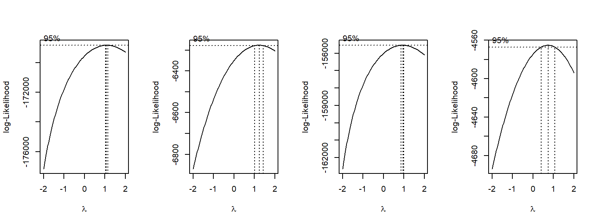
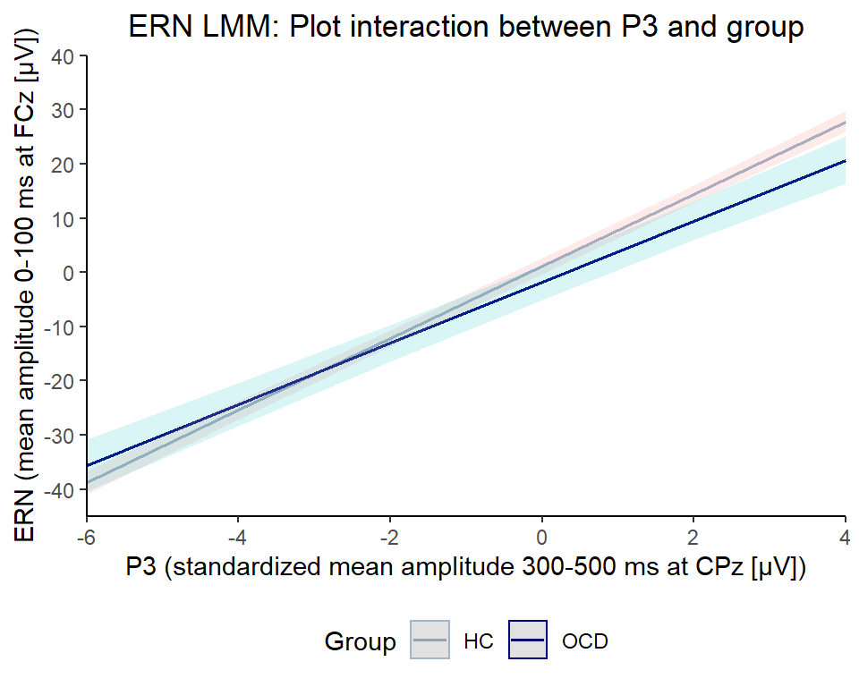
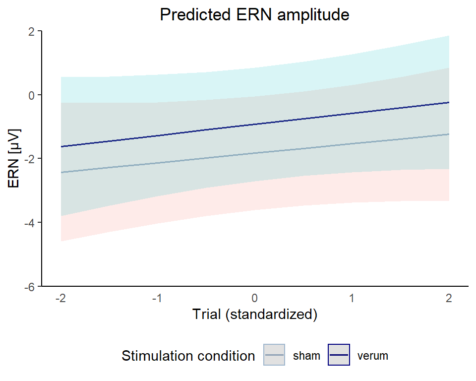
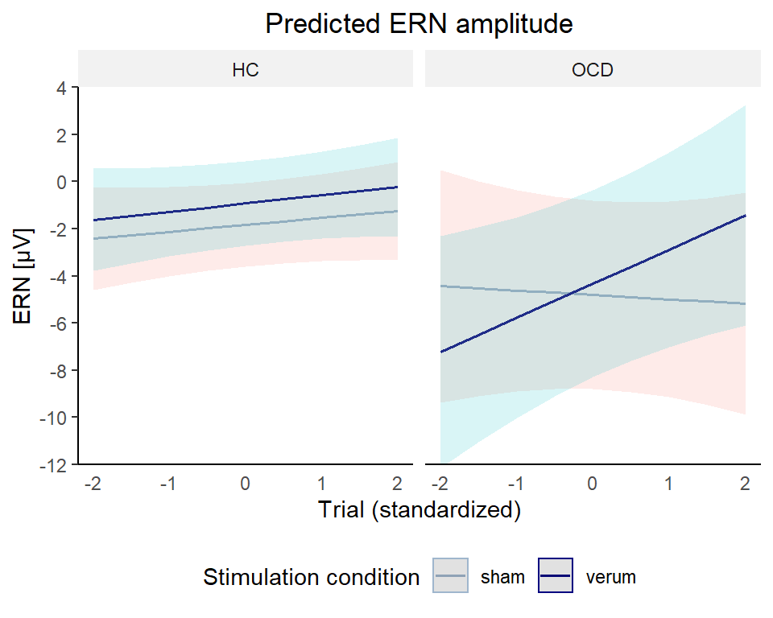
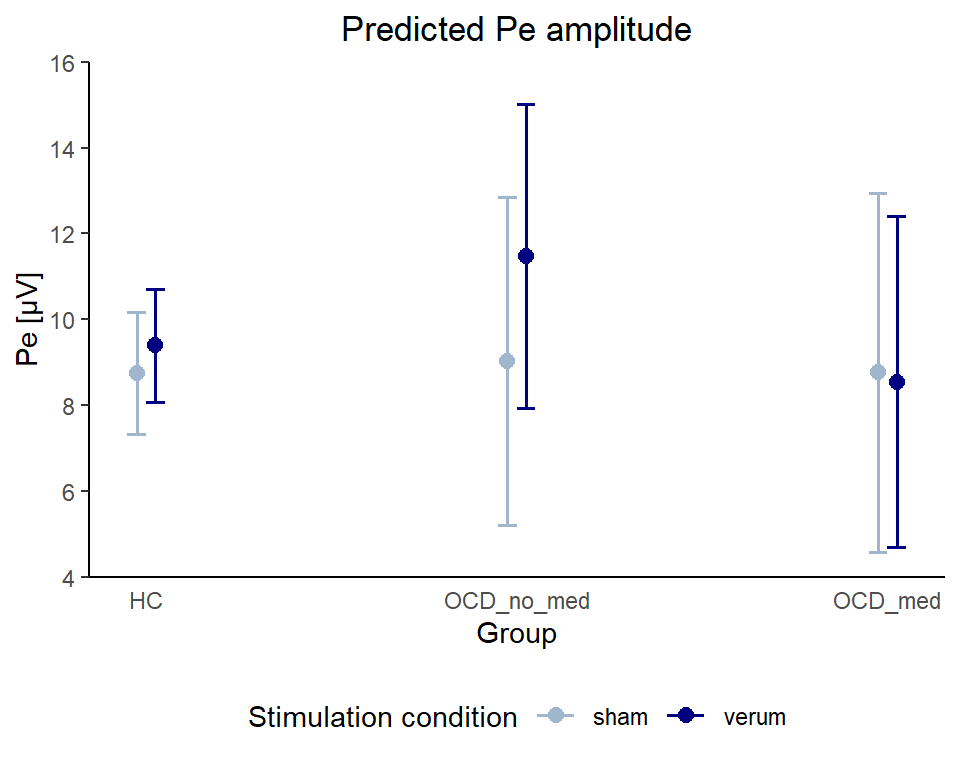

ERP Analysis
Data Cleaning
# Load data
load(file = "./data/Single_Trial_Data.rda")
load(file = "./data/Feedback_Infos.rda")
# Exclude P_02 (due to retainer) and C_02 (as preregistered: patients are excluded with their match)
single_trial_data <- single_trial_data[single_trial_data$participant_id != "P_02" & single_trial_data$participant_id != "C_02",]
feedback_infos <- feedback_infos[feedback_infos$participant_id != "P_02" & feedback_infos$participant_id != "C_02",]
# Exclude missing responses, RT outliers and trials with ERP artifacts
single_trial_data_clean <- single_trial_data %>%
dplyr::filter(
response_type != "miss" &
rt_invalid == FALSE &
!is.na(MFN_0_100_FCz)
) # (53093 of 53760 trials left)
# Add column for (grand mean standardized) number of errors (needed as covariate later) - this variable contains total number of errors, not only those entering analysis (preferred according to JK)
single_trial_data_clean <- single_trial_data %>%
dplyr::group_by(participant_id, session) %>%
dplyr::summarize(number_errors = sum(response_type == "incorrect")) %>%
dplyr::ungroup(.) %>%
dplyr::mutate(number_errors_standardized = scale(number_errors, center = TRUE, scale = TRUE)) %>%
dplyr::left_join(single_trial_data_clean, ., by = c("participant_id", "session"))
# Add column for (grand mean standardized) number of speeding (needed as covariate later)
single_trial_data_clean <- feedback_infos[feedback_infos$block != 6,] %>%
dplyr::group_by(participant_id, session, feedback) %>%
dplyr::count(feedback, .drop = FALSE) %>%
dplyr::filter(feedback == " schneller") %>%
dplyr::rename(number_feedback_faster = n) %>%
dplyr::ungroup(.) %>%
dplyr::select(-feedback) %>%
dplyr::mutate(number_feedback_faster_standardized = scale(number_feedback_faster, center = TRUE, scale = TRUE)) %>%
dplyr::left_join(single_trial_data_clean, ., by = c("participant_id", "session"))
# Add column for medication (needed as covariate later)
single_trial_data_clean <- single_trial_data_clean %>%
dplyr::mutate(medication = as.factor(ifelse(participant_id == "P_02" | participant_id == "P_04" | participant_id == "P_05" |
participant_id == "P_06" | participant_id == "P_08" | participant_id == "P_10" |
participant_id == "P_15" | participant_id == "P_16" | participant_id == "P_18" |
participant_id == "P_22" | participant_id == "P_25" | participant_id == "P_26" |
participant_id == "P_28" | participant_id == "P_30", "yes", "no")),
group_medication = as.factor(ifelse((group == "HC"), "HC",
ifelse((group == "OCD" & medication == "no"), "OCD_no_med", "OCD_med"))))
# Add column for (within-participant standardized) baseline EEG, N2, P3 (needed as covariate later)
single_trial_data_clean <- single_trial_data_clean %>%
dplyr::group_by(participant_id, session) %>%
dplyr::mutate(
MFN_baseline_pre_200_0_FCz_standardized = scale(MFN_baseline_pre_200_0_FCz, center = TRUE, scale = TRUE),
Pe_baseline_pre_200_0_Pz_standardized = scale(Pe_baseline_pre_200_0_Pz, center = TRUE, scale = TRUE),
N2_200_300_FCz_standardized = scale(N2_200_300_FCz, center = TRUE, scale = TRUE),
P3_300_500_CPz_standardized = scale(P3_300_500_CPz, center = TRUE, scale = TRUE)) %>%
dplyr::ungroup()
# Add column for grand mean standardized trial number (needed as covariate later)
single_trial_data_clean$trial_standardized <- scale(single_trial_data_clean$trial, scale = TRUE, center = TRUE)
# Calculate aggregated data per participant for boxplots, ANOVAs, t tests, and outlier detection
df_aggregated_per_subject_MFN <- single_trial_data_clean %>%
dplyr::group_by(participant_id, group, response_type, stimulation, session) %>%
dplyr::summarize(
MFN = mean(MFN_0_100_FCz, na.rm = TRUE),
Pe = mean(Pe_200_400_Pz, na.rm = TRUE)
) %>%
dplyr::ungroup()
# Calculate aggregated data per participant for ANOVA
df_aggregated_per_subject_ANOVA <- single_trial_data_clean %>%
dplyr::group_by(participant_id, group, stimulation, session) %>%
dplyr::summarize(
CRN_mean_amplitude_0_100_FCz = mean(MFN_0_100_FCz[response_type == "correct"], na.rm = TRUE),
ERN_mean_amplitude_0_100_FCz = mean(MFN_0_100_FCz[response_type == "incorrect"], na.rm = TRUE)
) %>%
dplyr::mutate(
difference_ERN_CRN_mean_amplitude_0_100_FCz = ERN_mean_amplitude_0_100_FCz - CRN_mean_amplitude_0_100_FCz
) %>%
dplyr::ungroup()
# Make categorical variables factors
single_trial_data_clean$participant_id <- as.factor(single_trial_data_clean$participant_id)
single_trial_data_clean$group <- as.factor(single_trial_data_clean$group)
single_trial_data_clean$session <- as.factor(single_trial_data_clean$session)
single_trial_data_clean$stimulation <- as.factor(single_trial_data_clean$stimulation)
single_trial_data_clean$stimulus_type <- as.factor(single_trial_data_clean$stimulus_type)
single_trial_data_clean$response_type <- as.factor(single_trial_data_clean$response_type)
single_trial_data_clean$group_medication <- factor(single_trial_data_clean$group_medication, levels = c("HC", "OCD_no_med", "OCD_med"))
# Load files with ERN quantified as area amplitude (replicating Reinhart & Woodman, 2014)
# Note that these files also contain P_02 and C_02 but these are dropped when joining with df_aggregated_per_subject_ANOVA
integral_area_amplitude <- read.table("./data/integral_area_amplitude_ERN_and_difference_ERN_CRN_-50_to_150_ms_at_FCz.txt", header = TRUE, stringsAsFactors = TRUE)
negative_area_amplitude <- read.table("./data/negative_area_amplitude_ERN_and_difference_ERN_CRN_-50_to_150_ms_at_FCz.txt", header = TRUE, stringsAsFactors = TRUE)
# Clean df for ERN quantified as area amplitude: Rename columns, create columns for merging, select relevant columns
df_aggregated_per_subject_ANOVA <- left_join(integral_area_amplitude, negative_area_amplitude, by = "ERPset") %>%
dplyr::rename(ERN_integral_area_amplitude_pre_50_150_FCz = bin2_incorrect__FCz.x,
difference_ERN_CRN_integral_area_amplitude_pre_50_150_FCz = bin10_difference_incorrect_._correct_FCz.x,
ERN_negative_area_amplitude_pre_50_150_FCz = bin2_incorrect__FCz.y,
difference_ERN_CRN_negative_area_amplitude_pre_50_150_FCz = bin10_difference_incorrect_._correct_FCz.y) %>%
dplyr::mutate(session = as.factor(ifelse(substr(ERPset, 6, 7) == "T1", "T1", "T2")),
participant_id = as.factor(substr(ERPset, 1, 4))) %>%
dplyr::select(c("participant_id", "session",
"ERN_integral_area_amplitude_pre_50_150_FCz", "difference_ERN_CRN_integral_area_amplitude_pre_50_150_FCz",
"ERN_negative_area_amplitude_pre_50_150_FCz", "difference_ERN_CRN_negative_area_amplitude_pre_50_150_FCz")) %>%
# Merge with df_aggregated_per_subject_ANOVA
dplyr::left_join(df_aggregated_per_subject_ANOVA, ., by = c("participant_id", "session"))Trials were excluded from all analyses if RT was shorter than 100 ms or longer than 800 ms or if the response in a trial was missing. We further discarded trials containing artifacts in the EEG, i.e., a voltage difference exceeding 50 μV between two consecutive sampling points or 200 μV within an epoch.
# Calculate percentage of excluded trials per participant
excluded_trials_per_participant <- single_trial_data %>%
dplyr::group_by(group, participant_id, session) %>%
dplyr::summarize(
invalid_rt = sum(!is.na(rt_invalid) & rt_invalid != FALSE) / length(participant_id) * 100,
misses = sum(response_type == "miss") / length(participant_id) * 100,
EEG_artifact = sum(is.nan(MFN_0_100_FCz)) / length(participant_id) * 100 # is.nan -> trials lost due trigger miss have NA and thus do not count here
) %>%
dplyr::ungroup()
# Summarize percentage of excluded trials per participant over groups
excluded_trials_per_participant_over_groups <- excluded_trials_per_participant %>%
# Calculate M and SD of the variables
dplyr::summarize(across(-c(group, participant_id, session), list(mean,sd,min,max)))
# Summarize percentage of excluded trials per participant per group
excluded_trials_per_participant_per_group <- excluded_trials_per_participant %>%
# Calculate M and SD of the variables
dplyr::group_by(group) %>%
dplyr::summarize(across(-c(participant_id, session), list(mean,sd,min,max))) %>%
dplyr::ungroup()
# Display percentage of excluded trials per participant over groups
my_table_template(excluded_trials_per_participant_over_groups,
caption = "Excluded Trials (M and SD in %) per Participant",
col_names = c("M", "SD", "min", "max", "M", "SD", "min", "max", "M", "SD", "min", "max"),
header_above_config = c("RT < 100 / > 800 ms" = 4, "Misses" = 4, "EEG artifact" = 4)
)
# Display percentage of excluded trials per participant per group
my_table_template(excluded_trials_per_participant_per_group,
caption = "Excluded Trials (M and SD in %) per Participant per Group",
col_names = c("Group", "M", "SD", "min", "max", "M", "SD", "min", "max", "M", "SD", "min", "max"),
header_above_config = c(" " = 1, "RT < 100 / > 800 ms" = 4, "Misses" = 4, "EEG artifact" = 4)
)
# Detect ERP outliers (ERP deviates more than 2/3 SD below/above group mean per condition)
ERP_outliers <- df_aggregated_per_subject_MFN %>%
dplyr::group_by(group, response_type, stimulation) %>%
dplyr::mutate(outlier_2_sd = case_when(abs(MFN - mean(MFN, na.rm = TRUE)) <= 2 * sd(MFN, na.rm = TRUE)~ FALSE, TRUE ~ TRUE),
outlier_3_sd = case_when(abs(MFN - mean(MFN, na.rm = TRUE)) <= 3 * sd(MFN, na.rm = TRUE)~ FALSE, TRUE ~ TRUE)) %>%
dplyr::filter(outlier_2_sd == TRUE) %>%
dplyr::ungroup()
# Display ERP outliers
my_table_template(ERP_outliers, caption = "ERP outliers (> 2/3 SD below/above group mean per condition (response type x stimulation))")| M | SD | min | max | M | SD | min | max | M | SD | min | max |
|---|---|---|---|---|---|---|---|---|---|---|---|
| 0.04 | 0.1 | 0 | 0.62 | 0.64 | 0.93 | 0 | 5 | 0.57 | 0.96 | 0 | 5.42 |
| Group | M | SD | min | max | M | SD | min | max | M | SD | min | max |
|---|---|---|---|---|---|---|---|---|---|---|---|---|
| HC | 0.03 | 0.10 | 0 | 0.42 | 0.66 | 1.09 | 0 | 5.00 | 0.30 | 0.51 | 0 | 2.08 |
| OCD | 0.04 | 0.11 | 0 | 0.62 | 0.61 | 0.76 | 0 | 2.71 | 0.84 | 1.20 | 0 | 5.42 |
| participant_id | group | response_type | stimulation | session | MFN | Pe | outlier_2_sd | outlier_3_sd |
|---|---|---|---|---|---|---|---|---|
| C_10 | HC | incorrect | sham | T2 | 14.85 | 9.85 | TRUE | FALSE |
| C_11 | HC | correct | sham | T2 | -4.89 | -2.54 | TRUE | FALSE |
| C_11 | HC | correct | verum | T1 | -5.60 | -2.55 | TRUE | FALSE |
| C_11 | HC | incorrect | verum | T1 | -17.55 | 14.88 | TRUE | FALSE |
| C_18 | HC | incorrect | sham | T2 | -18.58 | -4.56 | TRUE | FALSE |
| C_18 | HC | incorrect | verum | T1 | -19.57 | -2.28 | TRUE | FALSE |
| C_21 | HC | correct | verum | T1 | -6.43 | -0.51 | TRUE | FALSE |
| P_17 | OCD | correct | verum | T1 | -1.75 | -2.45 | TRUE | FALSE |
| P_28 | OCD | incorrect | sham | T2 | -27.82 | 11.39 | TRUE | TRUE |
| P_28 | OCD | incorrect | verum | T1 | -21.87 | 10.57 | TRUE | TRUE |
There is one participant (P_28) whose ERN deviates > 3 SD from the group mean per condition (response type x stimulation). This participant is also quite prominent in the raincloud plot and line plot (see below). There are a few participants whose ERN deviates > 2 SD. I did not exclude participants based on this criterion. Being an outlier in ERP magnitude is also no exclusion criterion specified in the preregistration.
Data Inspection
Distribution
# Plot distribution MFN
hist_MFN <- ggplot(single_trial_data_clean, aes(x = MFN_0_100_FCz)) +
geom_histogram(aes(y = ..density..), color="gray33", fill = "tan1", size = 1) +
stat_function(fun = dnorm, args=list(mean = mean(single_trial_data_clean$MFN_0_100_FCz, na.rm = TRUE),
sd = sd(single_trial_data_clean$MFN_0_100_FCz, na.rm = TRUE)), color = "black", size = 0.5) +
geom_vline(aes(xintercept = mean(MFN_0_100_FCz, na.rm = TRUE)), color = "black", linetype = "dashed", size = 1) +
labs (title = "Histogram MFN", x = "MFN", y = "Density") +
my_figure_theme
qqplot_MFN <- ggplot(single_trial_data_clean, aes(sample = MFN_0_100_FCz)) +
stat_qq(color = "tan1") +
stat_qq_line() +
labs (title = "Q-Q-Plot MFN", x = "Theoretical Quantiles", y = "Sample Quantiles") +
my_figure_theme
# Plot distribution ERN
hist_ERN <- ggplot(single_trial_data_clean[single_trial_data_clean$response_type == "incorrect",], aes(x = MFN_0_100_FCz)) +
geom_histogram(aes(y = ..density..), color="gray33", fill = "tan1", size = 1) +
stat_function(fun = dnorm, args=list(mean = mean(single_trial_data_clean[single_trial_data_clean$response_type == "incorrect",]$MFN_0_100_FCz, na.rm = TRUE),
sd = sd(single_trial_data_clean[single_trial_data_clean$response_type == "incorrect",]$MFN_0_100_FCz, na.rm = TRUE)), color = "black", size = 0.5) +
geom_vline(aes(xintercept = mean(MFN_0_100_FCz, na.rm = TRUE)), color = "black", linetype = "dashed", size = 1) +
labs (title = "Histogram ERN", x = "ERN", y = "Density") +
my_figure_theme
qqplot_ERN <- ggplot(single_trial_data_clean[single_trial_data_clean$response_type == "incorrect",], aes(sample = MFN_0_100_FCz)) +
stat_qq(color = "tan1") +
stat_qq_line() +
labs (title = "Q-Q-Plot ERN", x = "Theoretical Quantiles", y = "Sample Quantiles") +
my_figure_theme
# Plot distribution CRN
hist_CRN <- ggplot(single_trial_data_clean[single_trial_data_clean$response_type == "correct",], aes(x = MFN_0_100_FCz)) +
geom_histogram(aes(y = ..density..), color="gray33", fill = "tan1", size = 1) +
stat_function(fun = dnorm, args=list(mean = mean(single_trial_data_clean[single_trial_data_clean$response_type == "correct",]$MFN_0_100_FCz, na.rm = TRUE),
sd = sd(single_trial_data_clean[single_trial_data_clean$response_type == "correct",]$MFN_0_100_FCz, na.rm = TRUE)), color = "black", size = 0.5) +
geom_vline(aes(xintercept = mean(MFN_0_100_FCz, na.rm = TRUE)), color = "black", linetype = "dashed", size = 1) +
labs (title = "Histogram CRN", x = "CRN", y = "Density") +
my_figure_theme
qqplot_CRN <- ggplot(single_trial_data_clean[single_trial_data_clean$response_type == "correct",], aes(sample = MFN_0_100_FCz)) +
stat_qq(color = "tan1") +
stat_qq_line() +
labs (title = "Q-Q-Plot CRN", x = "Theoretical Quantiles", y = "Sample Quantiles") +
my_figure_theme
ggdraw() +
draw_plot(hist_MFN, x = 0, y = .66, width = .5, height = .33) +
draw_plot(qqplot_MFN, x = .5, y = .66, width = .5, height = .33) +
draw_plot(hist_ERN, x = 0, y = .33, width = .5, height = .33) +
draw_plot(qqplot_ERN, x = .5, y = .33, width = .5, height = .33) +
draw_plot(hist_CRN, x = 0, y = 0, width = .5, height = .33) +
draw_plot(qqplot_CRN, x = .5, y = 0, width = .5, height = .33) 
ERN/CRN per participant
MFN_per_participant <- ggplot(single_trial_data_clean, aes(x = response_type, y = MFN_0_100_FCz, group = response_type)) +
geom_point(aes(fill = response_type), color = "black", shape = 21, position = "jitter") +
ggtitle("MFN per participant") +
my_figure_theme +
facet_wrap(~ participant_id + stimulation, ncol = 10) +
scale_fill_manual(values = my_figure_colors)
MFN_per_participant
Check Normality
For the single-trial data, Shapiro-Wilk is not suitable, as it always returns a significant result for such large samples (additionally, it can handle only samples up to 5000). Hence, we have to rely on visual inspection (see tab “Distribution”) and values of skewness and kurtosis (see below). Values for skewness and kurtosis between -2 and +2 are considered acceptable in order to prove normal univariate distribution (George & Mallery, 2010).
normality_MFN <- round(data.frame(matrix(c(skewness(single_trial_data_clean$MFN_0_100_FCz),
kurtosis(single_trial_data_clean$MFN_0_100_FCz),
skewness(single_trial_data_clean[single_trial_data_clean$response_type == "incorrect",]$MFN_0_100_FCz),
kurtosis(single_trial_data_clean[single_trial_data_clean$response_type == "incorrect",]$MFN_0_100_FCz),
skewness(single_trial_data_clean[single_trial_data_clean$response_type == "correct",]$MFN_0_100_FCz),
kurtosis(single_trial_data_clean[single_trial_data_clean$response_type == "correct",]$MFN_0_100_FCz)),
nrow=2, ncol = 3)),digits = 1)
rownames(normality_MFN) <- c("Skewness","Kurtosis")
colnames(normality_MFN) <- c("MFN", "ERN", "CRN")
my_table_template(normality_MFN, row_names = TRUE)| MFN | ERN | CRN | |
|---|---|---|---|
| Skewness | 0.0 | -0.1 | 0.1 |
| Kurtosis | 0.7 | 0.6 | 0.7 |
Determine transformation
LMM analysis of MFN/ERN/CRN will be conducted on untransformed values, as it seems that the assumption of normally distributed residuals will be met. The appropriate transformation was determined using the Box–Cox procedure (Box & Cox, 1964).
# Arrange plots
par(mfrow = c(1, 4))
# Determine transformation of MFN by estimating optimal lambda using Box–Cox procedure
bc_MFN <- boxcox(MFN_0_100_FCz + 100 ~ 1, data = single_trial_data_clean)
optlambda_MFN <- bc_MFN$x[which.max(bc_MFN$y)]
# Determine transformation of ERN by estimating optimal lambda using Box–Cox procedure
bc_ERN <- boxcox(MFN_0_100_FCz + 100 ~ 1, data = single_trial_data_clean[single_trial_data_clean$response_type == "incorrect",])
optlambda_ERN <- bc_ERN$x[which.max(bc_ERN$y)]
# Determine transformation of CRN by estimating optimal lambda using Box–Cox procedure
bc_CRN <- boxcox(MFN_0_100_FCz + 100 ~ 1, data = single_trial_data_clean[single_trial_data_clean$response_type == "correct",])
optlambda_CRN <- bc_CRN$x[which.max(bc_CRN$y)]
# Determine transformation of Pe by estimating optimal lambda using Box–Cox procedure
bc_Pe <- boxcox(Pe_200_400_Pz + 120 ~ 1, data = single_trial_data_clean[single_trial_data_clean$response_type == "incorrect",])
optlambda_Pe <- bc_Pe$x[which.max(bc_Pe$y)]
# Reset plot layout
par(mfrow = c(1, 1)) For MFN (left plot), the optimal lambda is 1.07, suggesting that no transformation (for lambda = 1) is needed. For ERN (middle left plot), the optimal lambda is 1.23, suggesting that no transformation (for lambda = 1) is needed. For CRN (middle right plot), the optimal lambda is 0.95, suggesting that no transformation (for lambda = 1) is needed. For Pe (right plot), the optimal lambda is 0.75, suggesting that no transformation (for lambda = 1) is needed.
Split-half reliability
# Calculate permutation-based split-half internal consistency for ERN/CRN
# use ""invisible(capture.output())" to avoid having ugly console output in html
invisible(capture.output(split_half_reliability_MFN <- splithalf(data = single_trial_data_clean,
outcome = "RT",
score = "average",
permutations = 5000,
halftype = "random",
var.RT = "MFN_0_100_FCz",
var.trialnum = "trial",
var.participant = "participant_id",
var.condition = "response_type",
conditionlist = c("correct","incorrect"),
average = "mean",
round.to = 2)))
# Display permutation-based split-half internal consistency
my_table_template(split_half_reliability_MFN$final_estimates, caption = "Permutation-based split-half reliability ERN/CRN", digits = 3)
# Calculate permutation-based split-half internal consistency for Pe
# use ""invisible(capture.output())" to avoid having ugly console output in html
invisible(capture.output(split_half_reliability_Pe <- splithalf(data = single_trial_data_clean[single_trial_data_clean$response_type == "incorrect",],
outcome = "RT",
score = "average",
permutations = 5000,
halftype = "random",
var.RT = "Pe_200_400_Pz",
var.trialnum = "trial",
var.participant = "participant_id",
average = "mean",
round.to = 2)))
# Display permutation-based split-half internal consistency
my_table_template(split_half_reliability_Pe$final_estimates, caption = "Permutation-based split-half reliability Pe", digits = 3)| condition | n | splithalf | 95_low | 95_high | spearmanbrown | SB_low | SB_high |
|---|---|---|---|---|---|---|---|
| correct | 56 | 0.99 | 0.99 | 0.99 | 1.00 | 0.99 | 1.00 |
| incorrect | 56 | 0.91 | 0.87 | 0.95 | 0.96 | 0.93 | 0.97 |
| condition | n | splithalf | 95_low | 95_high | spearmanbrown | SB_low | SB_high |
|---|---|---|---|---|---|---|---|
| all | 56 | 0.89 | 0.84 | 0.93 | 0.94 | 0.91 | 0.96 |
The internal consitency of ERN and CRN was estimated using a permutation-based split-half approach (Parsons 2020) with 5000 random splits. The (Spearman-Brown corrected) split-half internal consistency of ERN, CRN, and Pe are excellent. The columns SB_low and SB_high represent 95% confidence intervall limits. The spearman-brown corrected reliability estimate for the ERN was .955, 95% CI [.932, .972], for CRN .995, 95% CI [.993, .997], for Pe .940, 95% CI [.912, .963]. The splithalf package was built to deal with RTs. However, the principle should also apply to ERP values, so the results should be correct. However, I also calculated the odd-even split-half reliabilty to compare the results (see below). In the manuscript, we will report the permutation-based split-half results.
# Code odd and even trials for reliability
single_trial_data_clean$oddeven <- single_trial_data_clean$trial %% 2
# Calculate mean CRN for odd and even trials per participant and session
internal_consistency_CRN <- single_trial_data_clean[single_trial_data_clean$response_type == "correct",] %>%
dplyr::group_by(participant_id, session, oddeven) %>%
dplyr::summarise(mean_CRN = mean(MFN_0_100_FCz, na.rm=TRUE)
) %>%
dplyr::ungroup()
# Calculate mean ERN/Pe for odd and even trials per participant and session
internal_consistency_ERN <- single_trial_data_clean[single_trial_data_clean$response_type == "incorrect",] %>%
dplyr::group_by(participant_id, session, oddeven) %>%
dplyr::summarise(mean_ERN = mean(MFN_0_100_FCz, na.rm=TRUE),
mean_Pe = mean(Pe_200_400_Pz, na.rm=TRUE)
) %>%
dplyr::ungroup()
# Correlating scores from even and odd items
r_CRN <- cor.test(internal_consistency_CRN$mean_CRN[internal_consistency_CRN$oddeven==1], internal_consistency_CRN$mean_CRN[internal_consistency_CRN$oddeven==0])
r_ERN <- cor.test(internal_consistency_ERN$mean_ERN[internal_consistency_ERN$oddeven==1], internal_consistency_ERN$mean_ERN[internal_consistency_ERN$oddeven==0])
r_Pe <- cor.test(internal_consistency_ERN$mean_Pe[internal_consistency_ERN$oddeven==1], internal_consistency_ERN$mean_Pe[internal_consistency_ERN$oddeven==0])
# Adjusting with the Spearman-Brown prophecy formula
r_CRN_SB <- (2 * r_CRN$estimate) / (1 + r_CRN$estimate)
r_ERN_SB <- (2 * r_ERN$estimate) / (1 + r_ERN$estimate)
r_Pe_SB <- (2 * r_Pe$estimate) / (1 + r_Pe$estimate)
# Display odd-even split-half reliability
oddeven_split_half_reliability <- matrix(c(r_CRN$estimate, r_ERN$estimate, r_Pe$estimate, r_CRN$conf.int[1], r_ERN$conf.int[1], r_Pe$conf.int[1],
r_CRN$conf.int[2], r_ERN$conf.int[2], r_Pe$conf.int[2], r_CRN_SB, r_ERN_SB, r_Pe_SB), ncol=4)
colnames(oddeven_split_half_reliability) <- c("splithalf_raw", "splithalf_CI_lower_limit", "splithalf_CI_upper_limit", "splithalf_spearmanbrown")
rownames(oddeven_split_half_reliability) <- c("CRN", "ERN", "Pe")
my_table_template(oddeven_split_half_reliability, row_names = TRUE, caption = "Odd-even split-half reliability", digits = 2)| splithalf_raw | splithalf_CI_lower_limit | splithalf_CI_upper_limit | splithalf_spearmanbrown | |
|---|---|---|---|---|
| CRN | 0.98 | 0.98 | 0.99 | 0.99 |
| ERN | 0.79 | 0.71 | 0.85 | 0.88 |
| Pe | 0.74 | 0.64 | 0.81 | 0.85 |
Odd-even reliability for the ERN/CRN/Pe is also good to excellent.
Descriptive Statistics
Means and CIs
##### ERN/CRN
descriptive_statistics_MFN <- summarySEwithinO(
data = single_trial_data_clean,
measurevar = "MFN_0_100_FCz",
withinvars = c("response_type", "stimulation", "session"),
betweenvars = "group",
idvar = "participant_id",
conf.interval = .95)
##### ERN/CRN without session
descriptive_statistics_MFN_no_session <- summarySEwithinO(
data = single_trial_data_clean,
measurevar = "MFN_0_100_FCz",
withinvars = c("response_type", "stimulation"),
betweenvars = "group",
idvar = "participant_id",
conf.interval = .95
) %>%
# Format confidence interval column
dplyr::mutate(
ci_MFN = paste0("[", round(MFN_0_100_FCz - ci, digits = 2),
", ", round(MFN_0_100_FCz + ci, digits = 2), "]")) %>%
# Round MFN means to two decimals
dplyr::mutate_at("MFN_0_100_FCz", round, digits = 2) %>%
# Select columns to be displayed
dplyr::select(c("group", "response_type", "stimulation", "MFN_0_100_FCz", "ci_MFN", "ci"))
# Split and re-merge MFN table to display both groups next to each other
descriptive_statistics_MFN_display <- split(descriptive_statistics_MFN_no_session, descriptive_statistics_MFN_no_session$group)
descriptive_statistics_MFN_display <- left_join(descriptive_statistics_MFN_display$HC, descriptive_statistics_MFN_display$OCD,
by = c("response_type", "stimulation"))
# Display descriptive statistics for MFN (and select columns)
my_table_template(descriptive_statistics_MFN_display[,c(2:5,8:9)],
caption = "MFN (in μV)",
col_names = c("Response type", "Stimulation", "M", "95% CI", "M", "95% CI"),
header_above_config = c(" " = 2, "HC" = 2, "OCD" = 2),
footnote_config = c(general = "Confidence intervals are adjusted for within-participant designs as described by Morey (2008).")
)
##### Pe without session
descriptive_statistics_Pe_no_session <- summarySEwithinO(
data = single_trial_data_clean[single_trial_data_clean$response_type == "incorrect",],
measurevar = "Pe_200_400_Pz",
withinvars = "stimulation",
betweenvars = "group",
idvar = "participant_id",
conf.interval = .95
) %>%
# Format confidence interval column
dplyr::mutate(
ci_Pe = paste0("[", round(Pe_200_400_Pz - ci, digits = 2),
", ", round(Pe_200_400_Pz + ci, digits = 2), "]")) %>%
# Round MFN means to two decimals
dplyr::mutate_at("Pe_200_400_Pz", round, digits = 2) %>%
# Select columns to be displayed
dplyr::select(c("group", "stimulation", "Pe_200_400_Pz", "ci_Pe", "ci"))
# Split and re-merge MFN table to display both groups next to each other
descriptive_statistics_Pe_display <- split(descriptive_statistics_Pe_no_session, descriptive_statistics_Pe_no_session$group)
descriptive_statistics_Pe_display <- left_join(descriptive_statistics_Pe_display$HC, descriptive_statistics_Pe_display$OCD,
by = "stimulation")
# Display descriptive statistics for MFN (and select columns)
my_table_template(descriptive_statistics_Pe_display[,c(2:4,7:8)],
caption = "Pe (in μV)",
col_names = c("Stimulation", "M", "95% CI", "M", "95% CI"),
header_above_config = c(" " = 1, "HC" = 2, "OCD" = 2),
footnote_config = c(general = "Confidence intervals are adjusted for within-participant designs as described by Morey (2008).")
)| Response type | Stimulation | M | 95% CI | M | 95% CI |
|---|---|---|---|---|---|
| correct | sham | 7.03 | [6.84, 7.23] | 4.37 | [4.18, 4.56] |
| correct | verum | 7.17 | [6.96, 7.37] | 5.49 | [5.3, 5.69] |
| incorrect | sham | -1.33 | [-2.17, -0.49] | -3.81 | [-4.69, -2.93] |
| incorrect | verum | -0.22 | [-1.09, 0.65] | -3.57 | [-4.44, -2.7] |
| Note: | |||||
| Confidence intervals are adjusted for within-participant designs as described by Morey (2008). |
| Stimulation | M | 95% CI | M | 95% CI |
|---|---|---|---|---|
| sham | 8.02 | [7.29, 8.75] | 8.64 | [7.76, 9.51] |
| verum | 8.92 | [8.16, 9.67] | 9.60 | [8.81, 10.4] |
| Note: | ||||
| Confidence intervals are adjusted for within-participant designs as described by Morey (2008). |
Raincloud plot ERN/CRN
# Define facet labels
response_type.labs <- c("CRN", "ERN")
names(response_type.labs) <- c("correct", "incorrect")
# From JB: "Raincloud plots (Allen et al., 2019) show means and 95% CIs calculated with the summarySEwithin function (Morey, 2008) on single trial data, and points, and distributions for data aggregated by subject"
# Create raincloud plot MFN
plot_MFN_raincloud <- ggplot() +
# Add aggregated distribution, boxplot and data points
geom_flat_violin(data = df_aggregated_per_subject_MFN, aes(x = stimulation, y = MFN, fill = group), position = position_nudge(x = .1, y = 0),
adjust = 1.5, trim = FALSE, alpha = .5, colour = NA)+
geom_point(data = df_aggregated_per_subject_MFN, aes(x = as.numeric(stimulation)-.15, y = MFN, colour = group),
position = position_jitter(width = .05), size = 1, shape = 20)+
geom_boxplot(data = df_aggregated_per_subject_MFN, aes(x = stimulation, y = MFN, fill = group),
outlier.shape = NA, alpha = .5, width = .1, colour = "black")+
# Add single-trial mean + CI
geom_point(data = descriptive_statistics_MFN_no_session, aes(x = as.numeric(stimulation)+0.1, y = MFN_0_100_FCz, colour = group),
shape = 95, size = 6) +
geom_errorbar(data = descriptive_statistics_MFN_no_session, aes(x = as.numeric(stimulation)+0.1, ymax = MFN_0_100_FCz + ci, ymin = MFN_0_100_FCz - ci),
colour = "black", width = 0) +
# Add style
scale_colour_manual(values = my_figure_colors, name = "Group:") +
scale_fill_manual(values = my_figure_colors, name = "Group:") +
facet_wrap(~response_type,labeller = labeller(response_type = response_type.labs)) +
labs(x = "\nStimulation condition", y = "MFN (mean amplitude 0-100 ms at FCz [μV])") +
my_figure_theme
# Save plot
ggsave("./figures/figure_MFN_raincloud.tiff", width = 12, height = 12, units = "cm", dpi=600, compression = "lzw")
# Display plot
plot_MFN_raincloud
Note. Response-locked ERP (ERN, CRN; 0-100 ms at FCz) in the flanker task is shown as a function of response type, stimulation condition, and group. Means and 95% confidence intervals (= lines at violin plot bottom) were calculated based on single-trial data. Boxplots and violin plots are based on data aggregated by participant. CIs are adjusted for within-participant designs as described by Morey (2008).
Raincloud plot Pe
# From JB: "Raincloud plots (Allen et al., 2019) show means and 95% CIs calculated with the summarySEwithin function (Morey, 2008) on single trial data, and points, and distributions for data aggregated by subject"
# Create raincloud plot MFN
plot_Pe_raincloud <- ggplot() +
# Add aggregated distribution, boxplot and data points
geom_flat_violin(data = df_aggregated_per_subject_MFN, aes(x = stimulation, y = Pe, fill = group), position = position_nudge(x = .1, y = 0),
adjust = 1.5, trim = FALSE, alpha = .5, colour = NA)+
geom_point(data = df_aggregated_per_subject_MFN, aes(x = as.numeric(stimulation)-.15, y = Pe, colour = group),
position = position_jitter(width = .05), size = 1, shape = 20)+
geom_boxplot(data = df_aggregated_per_subject_MFN, aes(x = stimulation, y = Pe, fill = group),
outlier.shape = NA, alpha = .5, width = .1, colour = "black")+
# Add single-trial mean + CI
geom_point(data = descriptive_statistics_Pe_no_session, aes(x = as.numeric(stimulation)+0.1, y = Pe_200_400_Pz, colour = group),
shape = 95, size = 6) +
geom_errorbar(data = descriptive_statistics_Pe_no_session, aes(x = as.numeric(stimulation)+0.1, ymax = Pe_200_400_Pz + ci, ymin = Pe_200_400_Pz - ci),
colour = "black", width = 0) +
# Add style
scale_colour_manual(values = my_figure_colors, name = "Group:") +
scale_fill_manual(values = my_figure_colors, name = "Group:") +
labs(x = "\nStimulation condition", y = "Pe (mean amplitude 200-400 ms at Pz [μV])") +
my_figure_theme
# Save plot
ggsave("./figures/figure_Pe_raincloud.tiff", width = 12, height = 12, units = "cm", dpi=600, compression = "lzw")
# Display plot
plot_Pe_raincloudNote. Response-locked ERP (Pe; 200-400 ms at Pz) in the flanker task is shown as a function stimulation condition and group. Means and 95% confidence intervals (= lines at violin plot bottom) were calculated based on single-trial data. Boxplots and violin plots are based on data aggregated by participant. CIs are adjusted for within-participant designs as described by Morey (2008).
Line plot participant-wise ERN/CRN
# Define facet labels
response_type.labs <- c("CRN", "ERN")
names(response_type.labs) <- c("correct", "incorrect")
# Create line plot MFN
plot_MFN_lines <- ggplot(df_aggregated_per_subject_MFN, aes(x=stimulation, y=MFN, group=participant_id)) +
geom_point(aes(colour=group), size=4.5, position=position_dodge(width=0.1)) +
geom_line(size=0.5, alpha=0.5, position=position_dodge(width=0.1)) +
# Add style
scale_colour_manual(values = my_figure_colors, guide=FALSE) +
facet_grid(cols = vars(response_type), rows = vars(group), scales = "free",labeller = labeller(response_type = response_type.labs))+
labs(x = "\nStimulation condition", y = "MFN (mean amplitude 0-100 ms at FCz [μV])") +
my_figure_theme
# Save plot
ggsave("./figures/figure_MFN_lines.tiff", width = 13, height = 18, units = "cm", dpi=600, compression = "lzw")
# Display plot
plot_MFN_lines
How many participants show the verum < sham stimulation effect on ERN/CRN?
# Split and re-merge aggregated table to display both stimulation conditions next to each other
count_stimulation_effect <- split(df_aggregated_per_subject_MFN, df_aggregated_per_subject_MFN$stimulation)
count_stimulation_effect <- left_join(count_stimulation_effect$sham, count_stimulation_effect$verum, by = c("participant_id", "response_type", "group"))
# Make table how many participants show the verum < sham stimulation effect on ERN/CRN
count_stimulation_effect <- count_stimulation_effect %>%
dplyr::group_by(response_type, group) %>%
subset(MFN.x < MFN.y) %>% # MFN.x is sham, MFN.y is verum (but ERN is neg, so we need < sign)
dplyr::summarise(n = n(), .groups = 'drop')
# Display table
my_table_template(count_stimulation_effect)| response_type | group | n |
|---|---|---|
| correct | HC | 14 |
| correct | OCD | 20 |
| incorrect | HC | 15 |
| incorrect | OCD | 19 |
Plot without session ERN/CRN
# Define facet labels
response_type.labs <- c("CRN", "ERN")
names(response_type.labs) <- c("correct", "incorrect")
# Create plot MFN
plot_MFN <- ggplot() +
geom_boxplot(data = df_aggregated_per_subject_MFN, aes(x = stimulation, y = MFN, fill = group), outlier.shape = NA)+
geom_point(data = descriptive_statistics_MFN_no_session, aes(x = stimulation, y = MFN_0_100_FCz, colour = group),
position = position_dodge(width = 0.7), shape = 15, size = 1) +
geom_errorbar(data = descriptive_statistics_MFN_no_session, aes(x = stimulation, ymax = MFN_0_100_FCz + ci, ymin = MFN_0_100_FCz - ci, colour = group),
position = position_dodge(width = 0.7), width = 0, size = 0.5) +
geom_line(data = descriptive_statistics_MFN_no_session, aes(x = stimulation, y = MFN_0_100_FCz, group = group, color = group),
position = position_dodge(width = 0.7), linetype = 3, size = 0.5) +
scale_colour_manual(values = c("sienna3", "slategray3"), name = "Group:") +
scale_fill_manual(values = my_figure_colors, name = "Group:") +
facet_grid(cols = vars(response_type), scales = "free",labeller = labeller(response_type = response_type.labs))+
my_figure_theme +
coord_cartesian(ylim = c(-20, 17)) +
scale_y_continuous(expand = c(0, 0)) +
labs(x = "\nStimulation condition", y = "MFN (mean amplitude 0-100 ms at FCz [μV])")
# Save plot
ggsave("./figures/figure_MFN.tiff", width = 12, height = 12, units = "cm", dpi=600, compression = "lzw")
# Display plot
plot_MFN
Note. Response-locked ERP (ERN, CRN; 0-100 ms at FCz) in the flanker task is shown as a function of response type, stimulation condition, and group. Means and 95% confidence intervals (shown in orange/red) were calculated based on single-trial data. Boxplots are based on data aggregated by participant. CIs are adjusted for within-participant designs as described by Morey (2008).
Plot without session Pe
# Create plot Pe
plot_Pe <- ggplot() +
geom_boxplot(data = df_aggregated_per_subject_MFN[df_aggregated_per_subject_MFN$response_type == "incorrect",], aes(x = stimulation, y = Pe, fill = group), outlier.shape = NA)+
geom_point(data = descriptive_statistics_Pe_no_session, aes(x = stimulation, y = Pe_200_400_Pz, colour = group),
position = position_dodge(width = 0.7), shape = 15, size = 1) +
geom_errorbar(data = descriptive_statistics_Pe_no_session, aes(x = stimulation, ymax = Pe_200_400_Pz + ci, ymin = Pe_200_400_Pz - ci, colour = group),
position = position_dodge(width = 0.7), width = 0, size = 0.5) +
geom_line(data = descriptive_statistics_Pe_no_session, aes(x = stimulation, y = Pe_200_400_Pz, group = group, color = group),
position = position_dodge(width = 0.7), linetype = 3, size = 0.5) +
scale_colour_manual(values = c("sienna3", "slategray3"), name = "Group:") +
scale_fill_manual(values = my_figure_colors, name = "Group:") +
my_figure_theme +
coord_cartesian(ylim = c(-5, 20)) +
scale_y_continuous(expand = c(0, 0)) +
labs(x = "\nStimulation condition", y = "Pe (mean amplitude 200-400 ms at Pz [μV])")
# Save plot
ggsave("./figures/figure_Pe.tiff", width = 12, height = 12, units = "cm", dpi=600, compression = "lzw")
# Display plot
plot_PeNote. Response-locked ERP (Pe 200-400 ms at Pz) in the flanker task is shown as a function of stimulation condition and group. Means and 95% confidence intervals (shown in orange/red) were calculated based on single-trial data. Boxplots are based on data aggregated by participant. CIs are adjusted for within-participant designs as described by Morey (2008).
Plot with session ERN/CRN
# Create plot MFN
plot_MFN_session <- ggplot() +
geom_boxplot(data = df_aggregated_per_subject_MFN, aes(x = stimulation, y = MFN, fill = group), outlier.size =0.3)+
geom_point(data = descriptive_statistics_MFN, aes(x = stimulation, y = MFN_0_100_FCz, colour = group),
position = position_dodge(width = 0.7), shape = 15, size = 1) +
geom_errorbar(data = descriptive_statistics_MFN, aes(x = stimulation, ymax = MFN_0_100_FCz + ci, ymin = MFN_0_100_FCz - ci, colour = group),
position = position_dodge(width = 0.7), width = 0, size = 0.5) +
geom_line(data = descriptive_statistics_MFN, aes(x = stimulation, y = MFN_0_100_FCz, group = group, color = group),
position = position_dodge(width = 0.7), linetype = 3, size = 0.5) +
scale_colour_manual(values = c("sienna3", "slategray3"), name = "Group:") +
scale_fill_manual(values = my_figure_colors, name = "Group:") +
facet_wrap(~response_type + session, nrow = 1) +
my_figure_theme +
labs(x = "\nStimulation condition", y = "MFN (mean amplitude 0-100 ms at FCz [μV])")
# Save plot
ggsave("./figures/figure_MFN_session.tiff", width = 20, height = 25, units = "cm", dpi=600, compression = "lzw")
# Display plot
plot_MFN_session
Note. Response-locked ERP (ERN, CRN; 0-100 ms at FCz) in the flanker task is shown as a function of response type, stimulation condition, group, and session. Means and 95% confidence intervals (shown in orange/red) were calculated based on single-trial data. Boxplots are based on data aggregated by participant. CIs are adjusted for within-participant designs as described by Morey (2008).
LMM Analyses
MFN/ERN/CRN were modeled using a linear mixed-effects models (LMMs).
Fixed effects
Group (HC, OCD), stimulation (verum, sham), and response type (correct, incorrect) were specified as fixed factors. Fixed effects were coded using effect coding (this equals sliding difference contrasts for two levels for factors with two levels or sum coding/2), such that the intercept reflects the grand mean across all conditions and differences in means between factor levels are tested. Fixed effects were not eliminated using model comparison techniques because they correspond to the original experimental design and a priori hypotheses.
Random effects
Participants were specified as random factors. The random-effects structure for each model was determined based on the procedure proposed by Bates, Kliegl, et al. (2015). We started with the maximal random-effects structure that was justified by the design, including random intercepts for participants, as well as random slopes for all main effects and interactions specified as fixed effects. If the model with the maximal random-effects structure would not converge, correlations of the random terms were set to zero. We performed a principal components analysis on the random-effects variance–covariance estimates to determine the number of components supported by the data and removed random effects explaining zero variance to prevent overparametrization (Matuschek et al., 2017).
# Define contrasts (sliding difference contrasts)
contrasts(single_trial_data_clean$stimulation) <- contr.sdif(2)
contrasts(single_trial_data_clean$group) <- contr.sdif(2)
contrasts(single_trial_data_clean$response_type) <- contr.sdif(2)
contrasts(single_trial_data_clean$session) <- contr.sdif(2)
contrasts(single_trial_data_clean$stimulus_type) <- contr.sdif(2)
contrasts(single_trial_data_clean$medication) <- contr.sdif(2)
contrasts(single_trial_data_clean$group_medication) <- contr.sdif(3)
# Add contrasts as numerical covariates via model matrix* (specify all possible contasts for now)
model_matrix <- model.matrix(~ stimulation * group * response_type, single_trial_data_clean)
# Attach the model matrix (8 columns) to the dataframe
single_trial_data_clean[, (ncol(single_trial_data_clean) + 1):(ncol(single_trial_data_clean) + 8)] <- model_matrix
# Assign descriptive names to the contrasts
names(single_trial_data_clean)[(ncol(single_trial_data_clean) - 7):ncol(single_trial_data_clean)] <- c("Grand Mean", "verum_sham", "OCD_HC", "incorrect_correct", "verum_sham:OCD_HC", "verum_sham:incorrect_correct", "OCD_HC:incorrect_correct", "verum_sham:OCD_HC:incorrect_correct")
# *Note: For the random effects, we needed to enter the separate random effect terms in the models to enable
# double-bar notation (||). This allows fitting a model that sets correlations of the random terms to zero.LMM for MFN
Model
This is the overall model, including error and correct trials. This model will be reported before reporting the separate models for ERN and CRN, because it also shows the overall group effect and stimulation effect. But if reporting this model somehow does not fit well in manuscript, we will not report it.
# Run model with maximal random-effects structure
LMM_MFN <- lmer(MFN_0_100_FCz ~ verum_sham * OCD_HC * incorrect_correct +
(1 + verum_sham + incorrect_correct + verum_sham:incorrect_correct | participant_id),
data = single_trial_data_clean,
REML = TRUE,
control = lmerControl(optimizer = "bobyqa")
)
# Check model output
# summary(LMM_MFN) # Model does converge
# isSingular(LMM_MFN) # Check for singular model fit (i.e., dimensions of the variance-covariance matrix have been estimated as exactly zero): FALSE
# Check PCA of random-effects variance-covariance estimates
# summary(rePCA(LMM_MFN)) # All terms explain variance (> 0.5%)
# Display results (fixed effects)
tab_model(LMM_MFN,
dv.labels = "MFN [μV]", show.stat = TRUE, show.icc = TRUE, show.r2 = TRUE,
show.re.var = TRUE, show.ngroups = TRUE, string.est = "b", string.stat = "t value",
string.ci = "95 % CI", string.p = "p value", p.val = "satterthwaite", wrap.labels = 80, digits.re = 3
)
# Display random effects
print("Random effects:")
print(VarCorr(LMM_MFN), digits = 3, comp = "Std.Dev.")| MFN [µV] | ||||
|---|---|---|---|---|
| Predictors | b | 95 % CI | t value | p value |
| (Intercept) | 1.57 | 0.25 – 2.88 | 2.33 | 0.023 |
| verum_sham | 0.70 | 0.12 – 1.28 | 2.37 | 0.022 |
| OCD_HC | -2.64 | -5.27 – -0.01 | -1.97 | 0.054 |
| incorrect_correct | -8.96 | -10.32 – -7.60 | -12.90 | <0.001 |
| verum_sham * OCD_HC | 0.52 | -0.64 – 1.68 | 0.88 | 0.383 |
| verum_sham * incorrect_correct | 0.10 | -0.81 – 1.01 | 0.22 | 0.830 |
| OCD_HC * incorrect_correct | -0.88 | -3.60 – 1.84 | -0.63 | 0.528 |
| (verum_sham * OCD_HC) * incorrect_correct | -0.88 | -2.69 – 0.94 | -0.95 | 0.349 |
| Random Effects | ||||
| σ2 | 92.127 | |||
| τ00 participant_id | 24.759 | |||
| τ11 participant_id.verum_sham | 3.079 | |||
| τ11 participant_id.incorrect_correct | 25.082 | |||
| τ11 participant_id.verum_sham:incorrect_correct | 4.770 | |||
| ρ01 | 0.129 | |||
| 0.401 | ||||
| 0.058 | ||||
| ICC | 0.203 | |||
| N participant_id | 56 | |||
| Observations | 53093 | |||
| Marginal R2 / Conditional R2 | 0.049 / 0.241 | |||
[1] "Random effects:"
Groups Name Std.Dev. Corr
participant_id (Intercept) 4.98
verum_sham 1.75 0.13
incorrect_correct 5.01 0.40 -0.18
verum_sham:incorrect_correct 2.18 0.06 -0.08 -0.44
Residual 9.60
There is a main effect of stimulation and response type and a trend for group.
Assumption checks
# Check model assumptions
performance::check_model(LMM_MFN, panel = TRUE)
# In addition to plots, print verbal output for some assumption tests to facilitate conclusion
print("# Check for heteroscedasticity")
performance::check_heteroscedasticity(LMM_MFN)
print("# Check for influential observations (Cook's distance)")
performance::check_outliers(LMM_MFN, effects = "random")
print("# Check for normal distributed random effects")
performance::check_normality(LMM_MFN, effects = "random")[1] "# Check for heteroscedasticity"
Warning: Heteroscedasticity (non-constant error variance) detected (p = 0.000).
[1] "# Check for influential observations (Cook's distance)"
OK: No outliers detected.
[1] "# Check for normal distributed random effects"
Group: participant_id
(Intercept) OK: random effects appear as normally distributed (p = 0.162).
verum_sham OK: random effects appear as normally distributed (p = 0.591).
incorrect_correct Warning: Non-normality of random effects detected (p = 0.002).
verum_sham:incorrect_correct Warning: Non-normality of random effects detected (p = 0.009).- Assumption 1: Independence of Data Points / Absence of collinearity -> Is OK
- Are predictors not highly correlated?
- Multicollinearity plot shows only low correlations
- Assumption 2: Normality of Residuals -> Is Not OK???
- Are residuals approximately normally distributed?
- Q-Q plot and density plot look not so great; Q-Q plot quite a bit off at the extremes
- It is debated whether this is problematic at all; and violation does not seem so bad, so maybe not worry about it?
- Assumption 3: Linearity -> Is OK
- Is the dependent variable linearly related to the fixed factors, random factors, and covariates?
- Plot of the residuals against the fitted values shows a random scatter pattern, no nonlinear or curvy pattern
- Assumption 4: Homogeneity of Residual Variance (Heteroscedasticity) -> Is OK???
- Have residuals constant variance across the range of the predicted values?
- Plot of the residuals against the fitted values shows an even spread around the centered line; but written output says this is not ok
- Assumption 5: Absence of Influential Data Points -> Is OK
- Are there are no influential values?
- Cook’s distance plot looks fine (for large N, Cook’s distances should be below 1) and written output says there are no outliers
- Assumption 6: Normality of Random Effects -> Is OK
- Are random effects approximately normally distributed?
- Written output says this is (mostly) ok
LMM for ERN / CRN
Model
# ERN
LMM_ERN <- lmer(MFN_0_100_FCz ~ stimulation * group +
(1 + verum_sham | participant_id),
data = single_trial_data_clean[single_trial_data_clean$response_type == "incorrect",],
REML = TRUE,
control = lmerControl(optimizer = "bobyqa")
)
# Check model output
# summary(LMM_ERN) # Model does converge
# isSingular(LMM_ERN) # Check for singular model fit (i.e., dimensions of the variance-covariance matrix have been estimated as exactly zero): FALSE
# Check PCA of random-effects variance-covariance estimates
# summary(rePCA(LMM_ERN)) # All terms explain variance (> 0.5%)
# CRN
LMM_CRN <- lmer(MFN_0_100_FCz ~ stimulation * group +
(1 + stimulation | participant_id),
data = single_trial_data_clean[single_trial_data_clean$response_type == "correct",],
REML = TRUE,
control = lmerControl(optimizer = "bobyqa")
)
# Check model output
# summary(LMM_CRN) # Model does converge
# isSingular(LMM_CRN) # Check for singular model fit (i.e., dimensions of the variance-covariance matrix have been estimated as exactly zero): FALSE
# Check PCA of random-effects variance-covariance estimates
# summary(rePCA(LMM_CRN)) # All terms explain variance
# Display models in one table
tab_model(LMM_ERN, LMM_CRN,
dv.labels = c("ERN [μV]", "CRN [μV]"), show.stat = TRUE, show.icc = TRUE, show.r2 = TRUE,
show.re.var = TRUE, show.ngroups = TRUE, string.est = "b", string.stat = "t value",
string.ci = "95 % CI", string.p = "p value", p.val = "satterthwaite", wrap.labels = 80, digits.re = 3
)
# Display random effects
print("Random effects ERN:")
print(VarCorr(LMM_ERN), digits = 3, comp = "Std.Dev.")
print("Random effects CRN:")
print(VarCorr(LMM_CRN), digits = 3, comp = "Std.Dev.")| ERN [µV] | CRN [µV] | |||||||
|---|---|---|---|---|---|---|---|---|
| Predictors | b | 95 % CI | t value | p value | b | 95 % CI | t value | p value |
| (Intercept) | -2.88 | -4.60 – -1.16 | -3.29 | 0.002 | 6.05 | 4.84 – 7.25 | 9.84 | <0.001 |
| stimulation2-1 | 0.86 | 0.02 – 1.70 | 2.00 | 0.052 | 0.65 | 0.06 – 1.24 | 2.18 | 0.034 |
| group2-1 | -3.14 | -6.58 – 0.30 | -1.79 | 0.079 | -2.20 | -4.61 – 0.21 | -1.79 | 0.079 |
| stimulation2-1:group2-1 | -0.10 | -1.78 – 1.59 | -0.11 | 0.911 | 0.96 | -0.21 – 2.13 | 1.60 | 0.114 |
| Random Effects | ||||||||
| σ2 | 98.589 | 91.725 | ||||||
| τ00 | 41.142 participant_id | 21.048 participant_id | ||||||
| τ11 | 2.955 participant_id.verum_sham | 4.587 participant_id.stimulation2-1 | ||||||
| ρ01 | -0.102 participant_id | 0.043 participant_id | ||||||
| ICC | 0.294 | 0.195 | ||||||
| N | 56 participant_id | 56 participant_id | ||||||
| Observations | 3244 | 49849 | ||||||
| Marginal R2 / Conditional R2 | 0.018 / 0.307 | 0.012 / 0.204 | ||||||
[1] "Random effects ERN:"
Groups Name Std.Dev. Corr
participant_id (Intercept) 6.41
verum_sham 1.72 -0.10
Residual 9.93
[1] "Random effects CRN:"
Groups Name Std.Dev. Corr
participant_id (Intercept) 4.59
stimulation2-1 2.14 0.04
Residual 9.58 # Plot predicted effects for ERN group and stimulation
plot_ERN_stim <- plot_model(LMM_ERN,
type = "pred",
terms = c("group", "stimulation"),
ci.lvl = .95) +
labs(title = "Model-predicted ERN values",
x = "Group",
y = "ERN (mean amplitude 0-100 ms at FCz [μV])\n") +
my_figure_theme +
aes(color = group) +
scale_color_manual(name = "Stimulation condition", labels = c("sham","cathodal"), values = c("slategray3", "navy")) +
coord_cartesian(ylim = c(-9, 2), xlim = c(0.5,2.5)) +
scale_y_continuous(breaks=seq(-8, 2, 2), expand = c(0,0)) +
scale_x_continuous(labels=c("HC","OCD"), breaks=c(1,2), expand=c(0,0))
plot_ERN_stim# Save plot
ggsave("./figures/figure_LMM_ERN_plot.tiff", width = 10, height = 10, units = "cm", dpi=300, compression = "lzw")
# Plot predicted effects for CRN group and stimulation
plot_CRN_stim <- plot_model(LMM_CRN,
type = "pred",
terms = c("group", "stimulation"),
ci.lvl = .95) +
labs(title = "Model-predicted CRN values",
x = "Group",
y = "CRN (mean amplitude 0-100 ms at FCz [μV])\n") +
my_figure_theme +
aes(color = group) +
scale_color_manual(name = "Stimulation condition", labels = c("sham","cathodal"), values = c("tan1", "sienna3")) +
coord_cartesian(ylim = c(1,9), xlim = c(0.5,2.5)) +
scale_y_continuous(breaks=seq(1, 9, 2), expand = c(0,0)) +
scale_x_continuous(labels=c("HC","OCD"), breaks=c(1,2), expand=c(0,0))
plot_CRN_stim# Save plot
ggsave("./figures/figure_LMM_CRN_plot.tiff", width = 10, height = 10, units = "cm", dpi=300, compression = "lzw")
There is a trend for a higher ERN in OCD compared to HC. There also is a trend for a higher CRN in OCD compared to HC. For CRN, there is an effect of stimulation, with smaller (i.e., less negative) CRN in the verum stimulation compared to the sham condition. There is a trend for a stimulation effect on ERN (which turns significant when using maximum likelihood instead of REML estimation - we will still stick with the REML estimation since the “just significant” effect from the ML estimation appears not really trustworthy to the readers as well).
Reinhart and Woodman (2014) found no stimulation effect on CRN. But from their Figure 2, I actually had the impression that the cathodal stimulation seems to rather increase the CRN (more neg), and a little bit reduces ERN. Maybe that their finding of a stimulation effect on the ERN (which was quantified as difference ERN-CRN) might be caused to a great deal by the effect on CRN? But possibly this stimulation effect was not significant when analyzing the CRN or ERN alone. In our data, the stimulation also reduces the CRN, which is probably why I see no effect in the difference ERN-CRN quantification as Reinhart & Woodman did (see ANOVA section).
We will report analyses on CRN as exploratory in the manuscript.
Assumption checks ERN
# ERN check model assumptions
performance::check_model(LMM_ERN, panel = TRUE)
# In addition to plots, print verbal output for some assumption tests to facilitate conclusion
print("# Check for heteroscedasticity")
performance::check_heteroscedasticity(LMM_ERN)
print("# Check for influential observations (Cook's distance)")
performance::check_outliers(LMM_ERN, effects = "random")
print("# Check for normal distributed random effects")
performance::check_normality(LMM_ERN, effects = "random")[1] "# Check for heteroscedasticity"
Warning: Heteroscedasticity (non-constant error variance) detected (p = 0.000).
[1] "# Check for influential observations (Cook's distance)"
OK: No outliers detected.
[1] "# Check for normal distributed random effects"
Group: participant_id
(Intercept) Warning: Non-normality of random effects detected (p = 0.037).
verum_sham OK: random effects appear as normally distributed (p = 0.628).Notes for assumption check would be the same as written for the MFN model.
Assumption checks CRN
# CRN check model assumptions
performance::check_model(LMM_CRN, panel = TRUE)
# In addition to plots, print verbal output for some assumption tests to facilitate conclusion
print("# Check for heteroscedasticity")
performance::check_heteroscedasticity(LMM_CRN)
print("# Check for influential observations (Cook's distance)")
performance::check_outliers(LMM_CRN, effects = "random")
print("# Check for normal distributed random effects")
performance::check_normality(LMM_CRN, effects = "random")[1] "# Check for heteroscedasticity"
Warning: Heteroscedasticity (non-constant error variance) detected (p = 0.000).
[1] "# Check for influential observations (Cook's distance)"
OK: No outliers detected.
[1] "# Check for normal distributed random effects"
Group: participant_id
(Intercept) OK: random effects appear as normally distributed (p = 0.180).
verum_sham OK: random effects appear as normally distributed (p = 0.997).Notes for assumption check would be the same as written for the MFN model.
Equivalence Test: ERN
# Equivalence bounds (refers to difference in raw values of 1.34 microvolt, not standardized differences in means)
bound_l <- -1.34 # lower equivalence bound
bound_u <- 1.34 # upper equivalence bound (the more positive this number, the less negative verum ERN compared to sham ERN) - this is the boundary of interest
# Use the contest1D functions of the lmerTest package to perform tests centered on the lower and upper equivalence bound, using the rhs option
lower <- contest1D(LMM_ERN, c(0, 1, 0, 0), confint = TRUE, rhs = bound_l) # get t value for test against lower bound
upper <- contest1D(LMM_ERN, c(0, 1, 0, 0), confint = TRUE, rhs = bound_u) # get t value for test against upper bound
# Note: c(0,1,0,0) means test for stimulation effect (= second fixed effect), as can be seen with fixef(LMM_ERN)
# Recalculate the required one-sided tests from the t-values (test provided by contest1D is two-sided)
p_lower <- pt(lower$`t value`, lower$df, lower.tail = FALSE) # test against lower bound
p_upper <- pt(upper$`t value`, upper$df, lower.tail = TRUE) # test against upper bound
# ALTERNATIVE: Divide the p-values provided by contest1D by 2, because one-sided tests are required but contest1D provides two-sided test
# p_lower <- lower$`Pr(>|t|)`/2
# p_upper <- upper$`Pr(>|t|)`/2Equivalence testing: two one-sided tests (TOST) procedure to test for equivalence and reject the presence of a smallest effect size of interest (SESOI)
Statistically equivalent: difference between groups is smaller than what is considered meaningful and statistically falls within the interval indicated by the equivalence bounds
Test against lower bound: t(44.18) = 5.12, p = 0
Test against upper bound: t(44.18) = -1.12, p = 0.134
Since the test against the upper bound is not significant, we cannot reject that the true value is not equal to or more extreme than the upper equivalence bound (i.e., we cannot reject that the verum ERN is at least 1 microvolt less negative than the sham ERN), which means that we did not obtain an equivalent result.
The ERN amplitude in the sham vs. verum condition is not statistically equivalent and not statistically different (or trend only)
“Based on equivalence bounds (= smalles effect size of interest, SESOI) of -1.34 microvolt and 1.34 microvolt for the stimulation effect on the ERN quantified as mean amplitude from 0 to 100 ms at FCz, we cannot reject effect sizes that we still consider meaningful, t(44.18) = −1.12, p = .134. Because the effect was also not statistically different from 0 in a traditional null-hypothesis test, the result is inconclusive. We can neither conclude that the effect is different from zero, nor that the effect is too small to matter. We need to collect more data to draw conclusions about the presence of an effect, or the absence of a meaningful effect (or both).”
citation: Improving Inferences About Null Effects With Bayes Factors and Equivalence Tests (Lakens et al., 2020)
Possible justification of SESOI of 1 microvolt: effect size 25% smaller than effect reported by Reinhart & Woodman
Problem 1: this is no established method for defining a SESOI (according to Lakens, 2017)
Problem 2: Woodman does not report unstandadized effect size in microvolt, only standadized effect size Cohen’s d
Solution Problem 2: I can use the web digitizer to get delta ERN scores for each participant from Figure 5 (get red dots) and calculate mean of all values -> should give me the difference in the raw means, correct? (Unstandardized effect size is about 1.36 microvolt -> SESOI of 1 microvolt is more than 25% (26,5%) smaller than this effect)
Equivalence test based on standardized effect size boundaries and t test
# Create aggrated dataframe for equivalence test
equivalence_data <- single_trial_data_clean[single_trial_data_clean$response_type == "incorrect",] %>%
dplyr::group_by(participant_id, stimulation) %>%
dplyr::summarize(
MFN = mean(MFN_0_100_FCz, na.rm = TRUE)
) %>%
dplyr::ungroup()%>%
dplyr::select(participant_id,stimulation, MFN)
equivalence_data <- split(equivalence_data, equivalence_data$stimulation)
equivalence_data <- left_join(equivalence_data$verum, equivalence_data$sham, by = "participant_id")
# Run equivalence test
TOSTpaired(n = 56,
m1 = mean(equivalence_data$MFN.x),
m2 = mean(equivalence_data$MFN.y),
sd1 = sd(equivalence_data$MFN.x),
sd2 = sd(equivalence_data$MFN.y),
r12 = cor.test(equivalence_data$MFN.x,equivalence_data$MFN.y)$estimate,
low_eqbound_dz = -0.38,
high_eqbound_dz = 0.38,
alpha = 0.05,
plot = TRUE, verbose = TRUE)TOST results:
t-value lower bound: 4.67 p-value lower bound: 0.00001
t-value upper bound: -1.02 p-value upper bound: 0.156
degrees of freedom : 55
Equivalence bounds (Cohen's dz):
low eqbound: -0.38
high eqbound: 0.38
Equivalence bounds (raw scores):
low eqbound: -1.3359
high eqbound: 1.3359
TOST confidence interval:
lower bound 90% CI: 0.07
upper bound 90% CI: 1.642
NHST confidence interval:
lower bound 95% CI: -0.086
upper bound 95% CI: 1.797
Equivalence Test Result:
The equivalence test was non-significant, t(55) = -1.022, p = 0.156, given equivalence bounds of -1.336 and 1.336 (on a raw scale) and an alpha of 0.05.
Null Hypothesis Test Result:
The null hypothesis test was non-significant, t(55) = 1.822, p = 0.0739, given an alpha of 0.05.
Based on the equivalence test and the null-hypothesis test combined, we can conclude that the observed effect is statistically not different from zero and statistically not equivalent to zero.Possible justification of SESOI: Telescope approach: SESOI = effect size that original study had 33% power to detect (would be Cohens dz = 0.38, see below)
Problem 1: equivalence bounds would then be based on standardized effect size, which I can only implement in t test, not in LMM
for eqivalence test in the LMM, I need unstandardized effect size and I find no convicing method to calculate Cohen’s d from a LMM in order to be able to translate the standardized effect size to an unstandadized effect size for performing the equivalence test
I found (dz = beta fixed effect / sqrt(n) * SE fixed effect OR ALSO dz = t/sqrt(n)) -> about 1.2 microvolt would correspond to d = 0.38?
but in Brysbaert paper, there is other description of how to calculate effect size for LMM that gives very different result
also package effectsize gives very different effect size (should also be Cohen’s d) for stimulation effect in LMM
Problem 2: interpretation of results is a bit more “abstract”? (when using -1 microvolt as bound, this would be very clear “we cannot reject that the verum ERN is at least 1 microvolt less negative than the sham ERN”)
Solution Problem 1: Run equivalence test on t test (same as in LMM, has a trend for the sitmulation effect); t test also shows trend for stimulation effect (p = .07); interestingly mine mean difference is quite similar to Woodman’s
Solution Problem 2: TOSTER output also shows unstandardized effect size that I can report to facilitate interpretation (unstandadized effect size is even larger than the one from the LMM: 1,3 vs. 1 microvolt)
This approach is favored and will be reported in the manuscript.
Check covariates
The purpose of including the covariates was to see how the effects change when controlling for the overall effect of the covariate. Thus, covariates were included only as fixed factor, not as random term. I first included the covariates as main effect only, not allowing any interactions with stimulation or group. However, inspecting the interactions as well might lead to new, important insights. These models including the interactions are presented below.
The covariate number of errors refers to the actual number of errors committed by each participant, not the number included in the analyses. Continuous predictors were grand mean standardized (number of errors, number of feedback faster) or within-participant standardized (baseline EEG).
For the covariate medication, we did not run the model as ERP ~ stimulation * group * medication, since medication would be confounded with group (only OCD group contains participants with medication). Thus, we used 3 groups for this model (HC, OCD no med, OCD med) and specified the model as ERP ~ stimulation * medication group.
Inclusion of baseline activity as covariate was inspired by Frömer et al. (Nature Comm 2021; "For each ERP, we regressed out the baseline activity at the same electrode sites; baseline was included as a nuisance regressor (Alday et al., 2019)). Alday (2019) argues that including baseline activity as predictor is superior to baseline correction. Since I did baseline correction during preprocessing, adding it also as covariate is probably not advantageous. But for the response-locked ERPs in the flanker task it may be worth checking at least, since an early interval (-500 to -300 ms) was used for baseline correction and a later baseline interval (-200 to 0 ms) as covariate. So I keep the analysis with this covariate here.
We also included trial-by-trial P3 and N2 amplitude (within-participant standardized) as a covariate. Thereby, we aimed to control for amplitude differences resulting from group or stimulation effects on stimulus-locked ERPs. Hence, we checked whether inclusion of P3/N2 as covariate changes the results of the stimulation or group effect on ERN/CRN (to control for the shift in the stimulus-locked ERP caused by group or stimulation that affects the ERN/CRN results). The model with the P3 will be reported as post hoc analysis (i.e., not stated in the preregistration), the N2 analysis is of no real interest and will not be reported. This additional analysis including P3 as predictor is justified by two papers (Klawohn et al., Psychophys., 2020; Meyer et al., Psychophys., 2017), reporting that the overlap of P300 with ERN might be problematic when trying to make inferences on effects of one of these components. Note that the P3 was quantified at CPz (since this is where this ERP typically emerges most; is also in line with the preregistration). However, since we actually aim to control for the P3 signal contained in the ERN, one could also use the P3 quantified at FCz as covariate (this value would rather reflect how much of the P3 is left in the FCz and thus affects the ERN). We decided to go with the first option.
Of these covariates, we will report P3 and medication in the manuscript. For P3, there are some interactions with P3 that we find difficult to explain. But in the model adding P3 only as main effect, the stimulation effect is not significant. For medication status, we will report the covariate analysis, not the (preregistered) subgroup analysis since this would result in non-significant results due to power problems. For the covariate model, do we use the whole group (but than medication status is confounded with group?) or only the OCD group (but then again we have not enoug power to find the stimulation effect)? For medication, we will only report that the effects hold true when controlling for medication and put the respective model only in the supplement. Will we report the analyses with covariates the ERN, CRN, and Pe.
# ERN check covariate P3 (added only as main effect)
LMM_ERN_P3_main_effect <- lmer(MFN_0_100_FCz ~ verum_sham * OCD_HC + P3_300_500_CPz_standardized +
(1 + verum_sham | participant_id),
data = single_trial_data_clean[single_trial_data_clean$response_type == "incorrect",],
REML = TRUE,
control = lmerControl(optimizer = "bobyqa")
) # Convergence, singulatrity, PCA checked, all ok
# CRN check covariate P3 (added only as main effect)
LMM_CRN_P3_main_effect <- lmer(MFN_0_100_FCz ~ stimulation * OCD_HC + P3_300_500_CPz_standardized +
(1 + stimulation | participant_id),
data = single_trial_data_clean[single_trial_data_clean$response_type == "correct",],
REML = TRUE,
control = lmerControl(optimizer = "bobyqa")
) # Convergence, singulatrity, PCA checked, all ok
# Display models in one table
tab_model(LMM_ERN_P3_main_effect,LMM_CRN_P3_main_effect,
dv.labels = c("ERN [μV], covariate P3 (added only as main effect)","CRN [μV], covariate P3 (added only as main effect)"), show.stat = TRUE, show.icc = TRUE, show.r2 = TRUE,
show.re.var = FALSE, show.ngroups = TRUE, string.est = "b", string.stat = "t value",
string.ci = "95 % CI", string.p = "p value", p.val = "satterthwaite", wrap.labels = 30, digits.re = 3
)| ERN [µV], covariate P3 (added only as main effect) | CRN [µV], covariate P3 (added only as main effect) | |||||||
|---|---|---|---|---|---|---|---|---|
| Predictors | b | 95 % CI | t value | p value | b | 95 % CI | t value | p value |
| (Intercept) | -0.29 | -1.71 – 1.14 | -0.40 | 0.694 | 5.90 | 4.70 – 7.10 | 9.62 | <0.001 |
| verum_sham | 0.63 | -0.06 – 1.32 | 1.80 | 0.079 | ||||
| OCD_HC | -2.58 | -5.43 – 0.26 | -1.78 | 0.081 | -2.18 | -4.58 – 0.22 | -1.78 | 0.081 |
| P3_300_500_CPz_standardized | 6.15 | 5.86 – 6.44 | 42.24 | <0.001 | 5.65 | 5.59 – 5.72 | 161.66 | <0.001 |
| verum_sham * OCD_HC | 0.37 | -1.00 – 1.75 | 0.53 | 0.599 | ||||
| stimulation2-1 | 0.67 | 0.09 – 1.26 | 2.25 | 0.028 | ||||
| stimulation2-1:OCD_HC | 0.88 | -0.29 – 2.06 | 1.47 | 0.147 | ||||
| ICC | 0.311 | 0.271 | ||||||
| N | 56 participant_id | 56 participant_id | ||||||
| Observations | 3240 | 49762 | ||||||
| Marginal R2 / Conditional R2 | 0.315 / 0.528 | 0.286 / 0.479 | ||||||
# ERN check covariate P3 (added only in interaction with stimulation)
LMM_ERN_P3_int_stim <- lmer(MFN_0_100_FCz ~ stimulation * (group + P3_300_500_CPz_standardized) +
(1 + stimulation | participant_id),
data = single_trial_data_clean[single_trial_data_clean$response_type == "incorrect",],
REML = TRUE,
control = lmerControl(optimizer = "bobyqa")
) # Convergence, singulatrity, PCA checked, all ok
# CRN check covariate P3 (added only in interaction with stimulation)
LMM_CRN_P3_int_stim <- lmer(MFN_0_100_FCz ~ verum_sham * (OCD_HC + P3_300_500_CPz_standardized) +
(1 + verum_sham | participant_id),
data = single_trial_data_clean[single_trial_data_clean$response_type == "correct",],
REML = TRUE,
control = lmerControl(optimizer = "bobyqa")
) # Convergence, singulatrity, PCA checked, all ok
# Display models in one table
tab_model(LMM_ERN_P3_int_stim,LMM_CRN_P3_int_stim,
dv.labels = c("ERN [μV], covariate P3 (added only in interaction with stimulation)","CRN [μV], covariate P3 (added only in interaction with stimulation)"), show.stat = TRUE, show.icc = TRUE, show.r2 = TRUE,
show.re.var = FALSE, show.ngroups = TRUE, string.est = "b", string.stat = "t value",
string.ci = "95 % CI", string.p = "p value", p.val = "satterthwaite", wrap.labels = 30, digits.re = 3
)| ERN [µV], covariate P3 (added only in interaction with stimulation) | CRN [µV], covariate P3 (added only in interaction with stimulation) | |||||||
|---|---|---|---|---|---|---|---|---|
| Predictors | b | 95 % CI | t value | p value | b | 95 % CI | t value | p value |
| (Intercept) | -0.29 | -1.71 – 1.14 | -0.40 | 0.693 | 5.90 | 4.70 – 7.10 | 9.62 | <0.001 |
| stimulation2-1 | 0.94 | 0.21 – 1.67 | 2.53 | 0.014 | ||||
| group2-1 | -2.57 | -5.41 – 0.28 | -1.77 | 0.082 | ||||
| P3_300_500_CPz_standardized | 6.16 | 5.88 – 6.45 | 42.34 | <0.001 | 5.65 | 5.58 – 5.72 | 161.66 | <0.001 |
| stimulation2-1:group2-1 | 0.42 | -0.97 – 1.80 | 0.59 | 0.559 | ||||
| stimulation2-1:P3_300_500_CPz_standardized | 0.74 | 0.19 – 1.29 | 2.64 | 0.008 | ||||
| verum_sham | 0.67 | 0.09 – 1.26 | 2.24 | 0.029 | ||||
| OCD_HC | -2.18 | -4.58 – 0.22 | -1.78 | 0.081 | ||||
| verum_sham * OCD_HC | 0.88 | -0.29 – 2.06 | 1.47 | 0.146 | ||||
|
verum_sham * P3_300_500_CPz_standardized |
0.10 | -0.04 – 0.23 | 1.39 | 0.164 | ||||
| ICC | 0.312 | 0.271 | ||||||
| N | 56 participant_id | 56 participant_id | ||||||
| Observations | 3240 | 49762 | ||||||
| Marginal R2 / Conditional R2 | 0.316 / 0.529 | 0.286 / 0.479 | ||||||
# ERN check covariate P3
LMM_ERN_P3 <- lmer(MFN_0_100_FCz ~ verum_sham * group * P3_300_500_CPz_standardized +
(1 + verum_sham | participant_id),
data = single_trial_data_clean[single_trial_data_clean$response_type == "incorrect",],
REML = TRUE,
control = lmerControl(optimizer = "bobyqa")
) # Convergence, singulatrity, PCA checked, all ok
# CRN check covariate P3
LMM_CRN_P3 <- lmer(MFN_0_100_FCz ~ verum_sham * group * P3_300_500_CPz_standardized +
(1 + verum_sham | participant_id),
data = single_trial_data_clean[single_trial_data_clean$response_type == "correct",],
REML = TRUE,
control = lmerControl(optimizer = "bobyqa")
) # Convergence, singulatrity, PCA checked, all ok
# Display models in one table
tab_model(LMM_ERN_P3, LMM_CRN_P3,
dv.labels = c("ERN [μV], covariate P3", "CRN [μV], covariate P3"), show.stat = TRUE, show.icc = TRUE, show.r2 = TRUE,
show.re.var = FALSE, show.ngroups = TRUE, string.est = "b", string.stat = "t value",
string.ci = "95 % CI", string.p = "p value", p.val = "satterthwaite", wrap.labels = 30, digits.re = 3
)| ERN [µV], covariate P3 | CRN [µV], covariate P3 | |||||||
|---|---|---|---|---|---|---|---|---|
| Predictors | b | 95 % CI | t value | p value | b | 95 % CI | t value | p value |
| (Intercept) | -0.33 | -1.75 – 1.09 | -0.46 | 0.651 | 5.90 | 4.70 – 7.10 | 9.62 | <0.001 |
| verum_sham | 0.91 | 0.18 – 1.64 | 2.45 | 0.017 | 0.67 | 0.09 – 1.26 | 2.25 | 0.028 |
| group2-1 | -2.99 | -5.83 – -0.14 | -2.06 | 0.044 | -2.17 | -4.57 – 0.24 | -1.77 | 0.083 |
| P3_300_500_CPz_standardized | 6.14 | 5.85 – 6.42 | 42.08 | <0.001 | 5.65 | 5.59 – 5.72 | 161.79 | <0.001 |
| verum_sham:group2-1 | 0.08 | -1.38 – 1.54 | 0.11 | 0.912 | 0.88 | -0.30 – 2.05 | 1.47 | 0.148 |
|
verum_sham * P3_300_500_CPz_standardized |
0.75 | 0.20 – 1.30 | 2.66 | 0.008 | 0.09 | -0.04 – 0.23 | 1.34 | 0.181 |
| group2-1:P3_300_500_CPz_standardized | -1.01 | -1.58 – -0.44 | -3.46 | 0.001 | -0.59 | -0.73 – -0.45 | -8.47 | <0.001 |
| verum_sham:group2-1:P3_300_500_CPz_standardized | -0.91 | -2.01 – 0.19 | -1.62 | 0.104 | 0.09 | -0.19 – 0.36 | 0.63 | 0.528 |
| ICC | 0.312 | 0.271 | ||||||
| N | 56 participant_id | 56 participant_id | ||||||
| Observations | 3240 | 49762 | ||||||
| Marginal R2 / Conditional R2 | 0.319 / 0.531 | 0.287 / 0.480 | ||||||
# Display random effects
print("Random effects ERN:")[1] “Random effects ERN:”
print(VarCorr(LMM_ERN_P3), digits = 3, comp = "Std.Dev.")Groups Name Std.Dev. Corr participant_id (Intercept) 5.29
verum_sham 1.50 -0.16 Residual 7.94
print("Random effects CRN:")[1] “Random effects CRN:”
print(VarCorr(LMM_CRN_P3), digits = 3, comp = "Std.Dev.")Groups Name Std.Dev. Corr participant_id (Intercept) 4.58
verum_sham 2.18 0.04 Residual 7.72
# Plot predicted effects for interaction P3 and stimulation
plot_P3_stimulation <- plot_model(LMM_ERN_P3,
type = "pred",
terms = c("P3_300_500_CPz_standardized","verum_sham"),
ci.lvl = .95) +
labs(title = "ERN LMM: Plot interaction between P3 and stimulation",
x = "P3 (standardized mean amplitude 300-500 ms at CPz [μV])",
y = "ERN (mean amplitude 0-100 ms at FCz [μV])") +
my_figure_theme +
aes(color = group) +
scale_color_manual(name = "Stimulation condition", labels = c("sham","verum"), values = c("slategray3", "navy")) +
theme(axis.ticks.x = element_line()) +
coord_cartesian(ylim = c(-45,40), xlim = c(-6, 4)) +
scale_y_continuous(breaks=seq(-40, 40, 10), expand = c(0,0)) +
scale_x_continuous(breaks=seq(-6, 4, 2), expand = c(0,0))
plot_P3_stimulation# Plot predicted effects for interaction P3 and group
plot_P3_group <- plot_model(LMM_ERN_P3,
type = "pred",
terms = c("P3_300_500_CPz_standardized","group"),
ci.lvl = .95) +
labs(title = "ERN LMM: Plot interaction between P3 and group",
x = "P3 (standardized mean amplitude 300-500 ms at CPz [μV])",
y = "ERN (mean amplitude 0-100 ms at FCz [μV])") +
my_figure_theme +
aes(color = group) +
scale_color_manual(name = "Group", labels = c("HC","OCD"), values = c("slategray3", "navy")) +
theme(axis.ticks.x = element_line()) +
coord_cartesian(ylim = c(-45,40), xlim = c(-6, 4)) +
scale_y_continuous(breaks=seq(-40, 40, 10), expand = c(0,0)) +
scale_x_continuous(breaks=seq(-6, 4, 2), expand = c(0,0))
plot_P3_group
# ERN check covariate N2
LMM_ERN_N2 <- lmer(MFN_0_100_FCz ~ verum_sham * OCD_HC * N2_200_300_FCz_standardized +
(1 + verum_sham | participant_id),
data = single_trial_data_clean[single_trial_data_clean$response_type == "incorrect",],
REML = TRUE,
control = lmerControl(optimizer = "bobyqa")
) # Convergence, singulatrity, PCA checked, all ok
# CRN check covariate N2
LMM_CRN_N2 <- lmer(MFN_0_100_FCz ~ verum_sham * OCD_HC * N2_200_300_FCz_standardized +
(1 + verum_sham | participant_id),
data = single_trial_data_clean[single_trial_data_clean$response_type == "correct",],
REML = TRUE,
control = lmerControl(optimizer = "bobyqa")
) # Convergence, singulatrity, PCA checked, all ok
# Display models in one table
tab_model(LMM_ERN_N2, LMM_CRN_N2,
dv.labels = c("ERN [μV], covariate N2", "CRN [μV], covariate N2"), show.stat = TRUE, show.icc = TRUE, show.r2 = TRUE,
show.re.var = FALSE, show.ngroups = TRUE, string.est = "b", string.stat = "t value",
string.ci = "95 % CI", string.p = "p value", p.val = "satterthwaite", wrap.labels = 30, digits.re = 3
)| ERN [µV], covariate N2 | CRN [µV], covariate N2 | |||||||
|---|---|---|---|---|---|---|---|---|
| Predictors | b | 95 % CI | t value | p value | b | 95 % CI | t value | p value |
| (Intercept) | -2.92 | -4.59 – -1.26 | -3.45 | 0.001 | 6.05 | 4.84 – 7.25 | 9.82 | <0.001 |
| verum_sham | 0.73 | 0.03 – 1.44 | 2.04 | 0.047 | 0.67 | 0.08 – 1.25 | 2.24 | 0.030 |
| OCD_HC | -2.70 | -6.02 – 0.63 | -1.59 | 0.118 | -2.22 | -4.63 – 0.20 | -1.80 | 0.077 |
| N2_200_300_FCz_standardized | 4.83 | 4.53 – 5.12 | 31.92 | <0.001 | 2.97 | 2.89 – 3.05 | 72.99 | <0.001 |
| verum_sham * OCD_HC | 0.00 | -1.40 – 1.41 | 0.01 | 0.995 | 0.95 | -0.22 – 2.13 | 1.60 | 0.116 |
|
verum_sham * N2_200_300_FCz_standardized |
0.68 | 0.09 – 1.27 | 2.26 | 0.024 | 0.25 | 0.09 – 0.41 | 3.04 | 0.002 |
|
OCD_HC * N2_200_300_FCz_standardized |
-0.68 | -1.27 – -0.08 | -2.24 | 0.025 | -0.71 | -0.87 – -0.55 | -8.69 | <0.001 |
|
(verum_sham * OCD_HC) * N2_200_300_FCz_standardized |
0.36 | -0.82 – 1.54 | 0.60 | 0.551 | 0.03 | -0.29 – 0.35 | 0.17 | 0.867 |
| ICC | 0.345 | 0.213 | ||||||
| N | 56 participant_id | 56 participant_id | ||||||
| Observations | 3240 | 49762 | ||||||
| Marginal R2 / Conditional R2 | 0.193 / 0.471 | 0.090 / 0.284 | ||||||
# ERN check covariate baseline EEG
LMM_ERN_baseline_EEG <- lmer(MFN_0_100_FCz ~ verum_sham * OCD_HC * MFN_baseline_pre_200_0_FCz_standardized +
(1 + verum_sham | participant_id),
data = single_trial_data_clean[single_trial_data_clean$response_type == "incorrect",],
REML = TRUE,
control = lmerControl(optimizer = "bobyqa")
) # Convergence, singulatrity, PCA checked, all ok
# CRN check covariate baseline EEG
LMM_CRN_baseline_EEG <- lmer(MFN_0_100_FCz ~ verum_sham * OCD_HC * MFN_baseline_pre_200_0_FCz_standardized +
(1 + verum_sham | participant_id),
data = single_trial_data_clean[single_trial_data_clean$response_type == "correct",],
REML = TRUE,
control = lmerControl(optimizer = "bobyqa")
) # Convergence, singulatrity, PCA checked, all ok
# Display models in one table
tab_model(LMM_ERN_baseline_EEG, LMM_CRN_baseline_EEG,
dv.labels = c("ERN [μV], covariate baseline EEG", "CRN [μV], covariate baseline EEG"), show.stat = TRUE, show.icc = TRUE, show.r2 = TRUE,
show.re.var = FALSE, show.ngroups = TRUE, string.est = "b", string.stat = "t value",
string.ci = "95 % CI", string.p = "p value", p.val = "satterthwaite", wrap.labels = 30, digits.re = 3
)| ERN [µV], covariate baseline EEG | CRN [µV], covariate baseline EEG | |||||||
|---|---|---|---|---|---|---|---|---|
| Predictors | b | 95 % CI | t value | p value | b | 95 % CI | t value | p value |
| (Intercept) | -2.14 | -3.92 – -0.37 | -2.36 | 0.022 | 6.00 | 4.80 – 7.20 | 9.79 | <0.001 |
| verum_sham | 0.65 | -0.12 – 1.43 | 1.65 | 0.105 | 0.66 | 0.07 – 1.24 | 2.21 | 0.031 |
| OCD_HC | -2.57 | -6.12 – 0.98 | -1.42 | 0.162 | -2.22 | -4.62 – 0.18 | -1.82 | 0.075 |
| MFN_baseline_pre_200_0_FCz_standardized | 5.54 | 5.24 – 5.84 | 36.04 | <0.001 | 5.01 | 4.94 – 5.08 | 137.18 | <0.001 |
| verum_sham * OCD_HC | 0.20 | -1.35 – 1.74 | 0.25 | 0.805 | 0.94 | -0.23 – 2.11 | 1.58 | 0.121 |
|
verum_sham * MFN_baseline_pre_200_0_FCz_standardized |
0.75 | 0.14 – 1.35 | 2.43 | 0.015 | 0.17 | 0.03 – 0.31 | 2.34 | 0.020 |
|
OCD_HC * MFN_baseline_pre_200_0_FCz_standardized |
-0.87 | -1.47 – -0.27 | -2.83 | 0.005 | -0.26 | -0.40 – -0.12 | -3.57 | <0.001 |
|
(verum_sham * OCD_HC) * MFN_baseline_pre_200_0_FCz_standardized |
-0.28 | -1.49 – 0.92 | -0.46 | 0.644 | -0.12 | -0.41 – 0.16 | -0.85 | 0.396 |
| ICC | 0.395 | 0.249 | ||||||
| N | 56 participant_id | 56 participant_id | ||||||
| Observations | 3244 | 49849 | ||||||
| Marginal R2 / Conditional R2 | 0.216 / 0.526 | 0.230 / 0.422 | ||||||
# ERN check covariate session
LMM_ERN_session <- lmer(MFN_0_100_FCz ~ verum_sham * OCD_HC * session +
(1 + verum_sham | participant_id),
data = single_trial_data_clean[single_trial_data_clean$response_type == "incorrect",],
REML = TRUE,
control = lmerControl(optimizer = "bobyqa")
) # Convergence, singulatrity, PCA checked, all ok
# CRN check covariate session
LMM_CRN_session <- lmer(MFN_0_100_FCz ~ verum_sham * OCD_HC * session +
(1 + verum_sham | participant_id),
data = single_trial_data_clean[single_trial_data_clean$response_type == "correct",],
REML = TRUE,
control = lmerControl(optimizer = "bobyqa")
) # Convergence, singulatrity, PCA checked, all ok
# Display models in one table
tab_model(LMM_ERN_session, LMM_CRN_session,
dv.labels = c("ERN [μV], covariate session","CRN [μV], covariate session"), show.stat = TRUE, show.icc = TRUE, show.r2 = TRUE,
show.re.var = FALSE, show.ngroups = TRUE, string.est = "b", string.stat = "t value",
string.ci = "95 % CI", string.p = "p value", p.val = "satterthwaite", wrap.labels = 30, digits.re = 3
)| ERN [µV], covariate session | CRN [µV], covariate session | |||||||
|---|---|---|---|---|---|---|---|---|
| Predictors | b | 95 % CI | t value | p value | b | 95 % CI | t value | p value |
| (Intercept) | -2.94 | -4.68 – -1.19 | -3.30 | 0.002 | 6.07 | 4.85 – 7.28 | 9.77 | <0.001 |
| verum_sham | 0.84 | -0.01 – 1.70 | 1.93 | 0.061 | 0.65 | 0.09 – 1.20 | 2.29 | 0.026 |
| OCD_HC | -3.18 | -6.68 – 0.31 | -1.79 | 0.080 | -2.29 | -4.72 – 0.14 | -1.84 | 0.071 |
| session2-1 | 0.21 | -0.65 – 1.07 | 0.49 | 0.629 | 0.82 | 0.27 – 1.38 | 2.90 | 0.005 |
| verum_sham * OCD_HC | -0.12 | -1.84 – 1.59 | -0.14 | 0.890 | 0.84 | -0.27 – 1.95 | 1.49 | 0.143 |
| verum_sham:session2-1 | 0.89 | -6.10 – 7.87 | 0.25 | 0.804 | 2.47 | -2.40 – 7.34 | 0.99 | 0.324 |
| OCD_HC:session2-1 | 0.41 | -1.31 – 2.13 | 0.47 | 0.643 | 0.07 | -1.04 – 1.18 | 0.13 | 0.901 |
| verum_sham:OCD_HC:session2-1 | 5.46 | -8.50 – 19.43 | 0.77 | 0.447 | -2.23 | -11.96 – 7.51 | -0.45 | 0.656 |
| ICC | 0.304 | 0.196 | ||||||
| N | 56 participant_id | 56 participant_id | ||||||
| Observations | 3244 | 49849 | ||||||
| Marginal R2 / Conditional R2 | 0.021 / 0.319 | 0.017 / 0.210 | ||||||
# ERN check covariate number of errors (predictor was z standardized)
LMM_ERN_number_errors <- lmer(MFN_0_100_FCz ~ verum_sham * OCD_HC * number_errors_standardized +
(1 + verum_sham | participant_id),
data = single_trial_data_clean[single_trial_data_clean$response_type == "incorrect",],
REML = TRUE,
control = lmerControl(optimizer = "bobyqa")
) # Convergence, singulatrity, PCA checked, all ok
# CRN check covariate number of errors (predictor was z standardized)
LMM_CRN_number_errors <- lmer(MFN_0_100_FCz ~ verum_sham * OCD_HC * number_errors_standardized +
(1 + verum_sham | participant_id),
data = single_trial_data_clean[single_trial_data_clean$response_type == "correct",],
REML = TRUE,
control = lmerControl(optimizer = "bobyqa")
) # Convergence, singulatrity, PCA checked, all ok
# Display models in one table
tab_model(LMM_ERN_number_errors, LMM_CRN_number_errors,
dv.labels = c("ERN [μV], covariate number of errors","CRN [μV], covariate number of errors"), show.stat = TRUE, show.icc = TRUE, show.r2 = TRUE,
show.re.var = FALSE, show.ngroups = TRUE, string.est = "b", string.stat = "t value",
string.ci = "95 % CI", string.p = "p value", p.val = "satterthwaite", wrap.labels = 30, digits.re = 3
)| ERN [µV], covariate number of errors | CRN [µV], covariate number of errors | |||||||
|---|---|---|---|---|---|---|---|---|
| Predictors | b | 95 % CI | t value | p value | b | 95 % CI | t value | p value |
| (Intercept) | -2.78 | -4.45 – -1.12 | -3.27 | 0.002 | 6.02 | 4.87 – 7.17 | 10.28 | <0.001 |
| verum_sham | 0.61 | -0.29 – 1.50 | 1.33 | 0.190 | 0.63 | 0.00 – 1.26 | 1.97 | 0.054 |
| OCD_HC | -2.67 | -6.01 – 0.66 | -1.57 | 0.122 | -1.91 | -4.21 – 0.38 | -1.63 | 0.109 |
| number_errors_standardized | 1.43 | 0.43 – 2.44 | 2.79 | 0.007 | 0.82 | 0.12 – 1.51 | 2.31 | 0.024 |
| verum_sham * OCD_HC | -0.37 | -2.16 – 1.42 | -0.41 | 0.685 | 0.84 | -0.41 – 2.10 | 1.32 | 0.194 |
|
verum_sham * number_errors_standardized |
-0.14 | -1.18 – 0.89 | -0.27 | 0.789 | 0.34 | -0.39 – 1.07 | 0.92 | 0.363 |
|
OCD_HC * number_errors_standardized |
1.82 | -0.19 – 3.83 | 1.77 | 0.080 | -0.20 | -1.59 – 1.19 | -0.28 | 0.781 |
|
(verum_sham * OCD_HC) * number_errors_standardized |
-0.84 | -2.91 – 1.23 | -0.80 | 0.430 | 0.06 | -1.40 – 1.51 | 0.08 | 0.938 |
| ICC | 0.283 | 0.179 | ||||||
| N | 56 participant_id | 56 participant_id | ||||||
| Observations | 3244 | 49849 | ||||||
| Marginal R2 / Conditional R2 | 0.027 / 0.302 | 0.018 / 0.194 | ||||||
# ERN check covariate number of feedback faster (predictor was z standardized)
LMM_ERN_number_feedback_faster <- lmer(MFN_0_100_FCz ~ verum_sham * OCD_HC * number_feedback_faster_standardized +
(1 + verum_sham | participant_id),
data = single_trial_data_clean[single_trial_data_clean$response_type == "incorrect",],
REML = TRUE,
control = lmerControl(optimizer = "bobyqa")
) # Convergence, singulatrity, PCA checked, all ok
# CRN check covariate number of feedback faster (predictor was z standardized)
LMM_CRN_number_feedback_faster <- lmer(MFN_0_100_FCz ~ verum_sham * OCD_HC * number_feedback_faster_standardized +
(1 + verum_sham | participant_id),
data = single_trial_data_clean[single_trial_data_clean$response_type == "correct",],
REML = TRUE,
control = lmerControl(optimizer = "bobyqa")
) # Convergence, singulatrity, PCA checked, all ok
# Display models in one table
tab_model(LMM_ERN_number_feedback_faster, LMM_CRN_number_feedback_faster,
dv.labels = c("ERN [μV], covariate number of feedback faster","CRN [μV], covariate number of feedback faster"), show.stat = TRUE, show.icc = TRUE, show.r2 = TRUE,
show.re.var = FALSE, show.ngroups = TRUE, string.est = "b", string.stat = "t value",
string.ci = "95 % CI", string.p = "p value", p.val = "satterthwaite", wrap.labels = 30, digits.re = 3
)| ERN [µV], covariate number of feedback faster | CRN [µV], covariate number of feedback faster | |||||||
|---|---|---|---|---|---|---|---|---|
| Predictors | b | 95 % CI | t value | p value | b | 95 % CI | t value | p value |
| (Intercept) | -2.82 | -4.52 – -1.12 | -3.26 | 0.002 | 6.08 | 4.88 – 7.29 | 9.89 | <0.001 |
| verum_sham | 0.64 | -0.26 – 1.55 | 1.39 | 0.170 | 0.61 | -0.02 – 1.23 | 1.91 | 0.062 |
| OCD_HC | -2.92 | -6.32 – 0.48 | -1.68 | 0.098 | -2.15 | -4.56 – 0.26 | -1.75 | 0.086 |
| number_feedback_faster_standardized | -0.49 | -1.36 – 0.38 | -1.11 | 0.272 | -0.15 | -0.74 – 0.44 | -0.50 | 0.616 |
| verum_sham * OCD_HC | -0.10 | -1.92 – 1.71 | -0.11 | 0.911 | 1.04 | -0.21 – 2.28 | 1.64 | 0.108 |
|
verum_sham * number_feedback_faster_standardized |
0.21 | -0.91 – 1.34 | 0.37 | 0.711 | -0.51 | -1.26 – 0.25 | -1.32 | 0.193 |
|
OCD_HC * number_feedback_faster_standardized |
-0.47 | -2.21 – 1.26 | -0.53 | 0.595 | -0.36 | -1.54 – 0.82 | -0.60 | 0.550 |
|
(verum_sham * OCD_HC) * number_feedback_faster_standardized |
1.63 | -0.63 – 3.88 | 1.42 | 0.163 | 0.41 | -1.10 – 1.92 | 0.54 | 0.594 |
| ICC | 0.292 | 0.194 | ||||||
| N | 56 participant_id | 56 participant_id | ||||||
| Observations | 3244 | 49849 | ||||||
| Marginal R2 / Conditional R2 | 0.020 / 0.306 | 0.013 / 0.204 | ||||||
# ERN check covariate stimulus type
LMM_ERN_stimulus_type <- lmer(MFN_0_100_FCz ~ verum_sham * OCD_HC * stimulus_type +
(1 + verum_sham | participant_id),
data = single_trial_data_clean[single_trial_data_clean$response_type == "incorrect",],
REML = TRUE,
control = lmerControl(optimizer = "bobyqa")
) # Convergence, singulatrity, PCA checked, all ok
# CRN check covariate stimulus_type
LMM_CRN_stimulus_type <- lmer(MFN_0_100_FCz ~ verum_sham * OCD_HC * stimulus_type +
(1 + verum_sham | participant_id),
data = single_trial_data_clean[single_trial_data_clean$response_type == "correct",],
REML = TRUE,
control = lmerControl(optimizer = "bobyqa")
) # Convergence, singulatrity, PCA checked, all ok
# Display models in one table
tab_model(LMM_ERN_stimulus_type, LMM_CRN_stimulus_type,
dv.labels = c("ERN [μV], covariate stimulus type", "CRN [μV], covariate stimulus type"), show.stat = TRUE, show.icc = TRUE, show.r2 = TRUE,
show.re.var = FALSE, show.ngroups = TRUE, string.est = "b", string.stat = "t value",
string.ci = "95 % CI", string.p = "p value", p.val = "satterthwaite", wrap.labels = 30, digits.re = 3
)| ERN [µV], covariate stimulus type | CRN [µV], covariate stimulus type | |||||||
|---|---|---|---|---|---|---|---|---|
| Predictors | b | 95 % CI | t value | p value | b | 95 % CI | t value | p value |
| (Intercept) | -3.27 | -5.05 – -1.50 | -3.61 | 0.001 | 6.05 | 4.84 – 7.25 | 9.84 | <0.001 |
| verum_sham | 0.87 | -0.34 – 2.07 | 1.41 | 0.159 | 0.65 | 0.06 – 1.23 | 2.16 | 0.035 |
| OCD_HC | -3.00 | -6.56 – 0.55 | -1.66 | 0.102 | -2.22 | -4.63 – 0.19 | -1.81 | 0.077 |
| stimulus_type2-1 | 1.01 | -0.11 – 2.14 | 1.77 | 0.078 | 0.06 | -0.11 – 0.23 | 0.73 | 0.467 |
| verum_sham * OCD_HC | -0.68 | -3.08 – 1.73 | -0.55 | 0.583 | 0.96 | -0.21 – 2.14 | 1.61 | 0.112 |
| verum_sham:stimulus_type2-1 | 0.03 | -2.19 – 2.25 | 0.03 | 0.978 | -0.10 | -0.43 – 0.24 | -0.55 | 0.579 |
| OCD_HC:stimulus_type2-1 | -0.25 | -2.50 – 2.00 | -0.22 | 0.828 | -0.70 | -1.04 – -0.36 | -4.07 | <0.001 |
| verum_sham:OCD_HC:stimulus_type2-1 | 1.54 | -2.90 – 5.97 | 0.68 | 0.497 | 0.17 | -0.51 – 0.84 | 0.49 | 0.624 |
| ICC | 0.299 | 0.195 | ||||||
| N | 56 participant_id | 56 participant_id | ||||||
| Observations | 3244 | 49849 | ||||||
| Marginal R2 / Conditional R2 | 0.019 / 0.312 | 0.012 / 0.205 | ||||||
# ERN check covariate trial number
LMM_ERN_number_trials0 <- lmer(MFN_0_100_FCz ~ verum_sham * group * trial +
(1 + verum_sham | participant_id),
data = single_trial_data_clean[single_trial_data_clean$response_type == "incorrect",],
REML = TRUE,
control = lmerControl(optimizer = "bobyqa")
) # Convergence, singulatrity, PCA checked, all ok
# CRN check covariate trial number
LMM_CRN_number_trials0 <- lmer(MFN_0_100_FCz ~ verum_sham * group * trial +
(1 + verum_sham | participant_id),
data = single_trial_data_clean[single_trial_data_clean$response_type == "correct",],
REML = TRUE,
control = lmerControl(optimizer = "bobyqa")
) # Convergence, singulatrity, PCA checked, all ok
# Display models in one table
tab_model(LMM_ERN_number_trials0, LMM_CRN_number_trials0,
dv.labels = c("ERN [μV], covariate trial number","CRN [μV], covariate trial number"), show.stat = TRUE, show.icc = TRUE, show.r2 = TRUE,
show.re.var = FALSE, show.ngroups = TRUE, string.est = "b", string.stat = "t value",
string.ci = "95 % CI", string.p = "p value", p.val = "satterthwaite", wrap.labels = 30, digits.re = 3
)| ERN [µV], covariate trial number | CRN [µV], covariate trial number | |||||||
|---|---|---|---|---|---|---|---|---|
| Predictors | b | 95 % CI | t value | p value | b | 95 % CI | t value | p value |
| (Intercept) | -3.72 | -5.57 – -1.87 | -3.94 | <0.001 | 5.71 | 4.50 – 6.92 | 9.22 | <0.001 |
| verum_sham | -0.80 | -2.39 – 0.79 | -0.98 | 0.326 | 0.84 | 0.19 – 1.49 | 2.52 | 0.014 |
| group2-1 | -3.79 | -7.49 – -0.09 | -2.01 | 0.048 | -2.14 | -4.57 – 0.29 | -1.73 | 0.089 |
| trial | 0.00 | 0.00 – 0.01 | 2.43 | 0.015 | 0.00 | 0.00 – 0.00 | 4.54 | <0.001 |
| verum_sham:group2-1 | -3.10 | -6.29 – 0.08 | -1.91 | 0.057 | 1.01 | -0.30 – 2.32 | 1.52 | 0.133 |
| verum_sham * trial | 0.01 | 0.00 – 0.01 | 2.38 | 0.018 | -0.00 | -0.00 – 0.00 | -1.29 | 0.197 |
| group2-1:trial | 0.00 | -0.00 – 0.01 | 0.92 | 0.356 | -0.00 | -0.00 – 0.00 | -0.42 | 0.676 |
| verum_sham:group2-1:trial | 0.01 | 0.00 – 0.02 | 2.14 | 0.033 | -0.00 | -0.00 – 0.00 | -0.18 | 0.861 |
| ICC | 0.299 | 0.195 | ||||||
| N | 56 participant_id | 56 participant_id | ||||||
| Observations | 3244 | 49849 | ||||||
| Marginal R2 / Conditional R2 | 0.021 / 0.314 | 0.012 / 0.205 | ||||||
# ERN check covariate trial number
LMM_ERN_number_trials <- lmer(MFN_0_100_FCz ~ verum_sham * group * trial_standardized +
(1 + verum_sham | participant_id),
data = single_trial_data_clean[single_trial_data_clean$response_type == "incorrect",],
REML = TRUE,
control = lmerControl(optimizer = "bobyqa")
) # Convergence, singulatrity, PCA checked, all ok
# CRN check covariate trial number
LMM_CRN_number_trials <- lmer(MFN_0_100_FCz ~ verum_sham * group * trial_standardized +
(1 + verum_sham | participant_id),
data = single_trial_data_clean[single_trial_data_clean$response_type == "correct",],
REML = TRUE,
control = lmerControl(optimizer = "bobyqa")
) # Convergence, singulatrity, PCA checked, all ok
# Display models in one table
tab_model(LMM_ERN_number_trials, LMM_CRN_number_trials,
dv.labels = c("ERN [μV], covariate trial number","CRN [μV], covariate trial number"), show.stat = TRUE, show.icc = TRUE, show.r2 = TRUE,
show.re.var = FALSE, show.ngroups = TRUE, string.est = "b", string.stat = "t value",
string.ci = "95 % CI", string.p = "p value", p.val = "satterthwaite", wrap.labels = 30, digits.re = 3
)| ERN [µV], covariate trial number | CRN [µV], covariate trial number | |||||||
|---|---|---|---|---|---|---|---|---|
| Predictors | b | 95 % CI | t value | p value | b | 95 % CI | t value | p value |
| (Intercept) | -2.96 | -4.69 – -1.24 | -3.37 | 0.001 | 6.05 | 4.84 – 7.25 | 9.84 | <0.001 |
| verum_sham | 0.69 | -0.15 – 1.54 | 1.61 | 0.114 | 0.65 | 0.06 – 1.23 | 2.17 | 0.035 |
| group2-1 | -3.21 | -6.66 – 0.23 | -1.83 | 0.073 | -2.20 | -4.61 – 0.21 | -1.79 | 0.079 |
| trial_standardized | 0.44 | 0.08 – 0.79 | 2.43 | 0.015 | 0.19 | 0.11 – 0.28 | 4.54 | <0.001 |
| verum_sham:group2-1 | -0.42 | -2.11 – 1.27 | -0.49 | 0.629 | 0.96 | -0.21 – 2.13 | 1.61 | 0.114 |
|
verum_sham * trial_standardized |
0.86 | 0.15 – 1.57 | 2.38 | 0.018 | -0.11 | -0.28 – 0.06 | -1.29 | 0.197 |
| group2-1:trial_standardized | 0.33 | -0.37 – 1.04 | 0.92 | 0.356 | -0.04 | -0.20 – 0.13 | -0.42 | 0.676 |
| verum_sham:group2-1:trial_standardized | 1.54 | 0.13 – 2.96 | 2.14 | 0.033 | -0.03 | -0.37 – 0.31 | -0.18 | 0.861 |
| ICC | 0.299 | 0.195 | ||||||
| N | 56 participant_id | 56 participant_id | ||||||
| Observations | 3244 | 49849 | ||||||
| Marginal R2 / Conditional R2 | 0.021 / 0.314 | 0.012 / 0.205 | ||||||
# ERN plot interaction stimulation * trial
plot_ERN_trial_predicted <- plot_model(LMM_ERN_number_trials,
type = "pred",
terms = c("trial_standardized","verum_sham"),
ci.lvl = .95) +
labs(title = "Predicted ERN amplitude",
x = "Trial (standardized)",
y = "ERN [μV]") +
my_figure_theme +
coord_cartesian(ylim = c(-6,2)) +
scale_y_continuous(breaks=seq(-6, 2, 2), expand = c(0,0)) +
scale_color_manual(name = "Stimulation condition", labels = c("sham","verum"), values = c("slategray3", "navy"))
plot_ERN_trial_predicted
# ERN plot interaction stimulation * trial * group
plot_ERN_trial_group_predicted <- plot_model(LMM_ERN_number_trials,
type = "pred",
terms = c("trial_standardized","verum_sham", "group"),
ci.lvl = .95) +
labs(title = "Predicted ERN amplitude",
x = "Trial (standardized)",
y = "ERN [μV]") +
my_figure_theme +
coord_cartesian(ylim = c(-12,4)) +
scale_y_continuous(breaks=seq(-12, 4, 2), expand = c(0,0)) +
scale_color_manual(name = "Stimulation condition", labels = c("sham","verum"), values = c("slategray3", "navy"))
plot_ERN_trial_group_predicted
# ERN check covariate medication
LMM_ERN_medication <- lmer(MFN_0_100_FCz ~ verum_sham * group_medication +
(1 + verum_sham | participant_id),
data = single_trial_data_clean[single_trial_data_clean$response_type == "incorrect",],
REML = TRUE,
control = lmerControl(optimizer = "bobyqa")
) # Convergence, singulatrity, PCA checked, all ok
# CRN check covariate medication
LMM_CRN_medication <- lmer(MFN_0_100_FCz ~ verum_sham * group_medication +
(1 + verum_sham | participant_id),
data = single_trial_data_clean[single_trial_data_clean$response_type == "correct",],
REML = TRUE,
control = lmerControl(optimizer = "bobyqa")
) # Convergence, singulatrity, PCA checked, all ok
# Display models in one table
tab_model(LMM_ERN_medication, LMM_CRN_medication,
dv.labels = c("ERN [μV], covariate medication (1 = HC, 2 = OCD no med, 3 = OCD med)", "CRN [μV], covariate medication (1 = HC, 2 = OCD no med, 3 = OCD med)"), show.stat = TRUE, show.icc = TRUE, show.r2 = TRUE,
show.re.var = FALSE, show.ngroups = TRUE, string.est = "b", string.stat = "t value",
string.ci = "95 % CI", string.p = "p value", p.val = "satterthwaite", wrap.labels = 30, digits.re = 3
)| ERN [µV], covariate medication (1 = HC, 2 = OCD no med, 3 = OCD med) | CRN [µV], covariate medication (1 = HC, 2 = OCD no med, 3 = OCD med) | |||||||
|---|---|---|---|---|---|---|---|---|
| Predictors | b | 95 % CI | t value | p value | b | 95 % CI | t value | p value |
| (Intercept) | -3.50 | -5.29 – -1.71 | -3.84 | <0.001 | 5.65 | 4.37 – 6.93 | 8.66 | <0.001 |
| verum_sham | 0.86 | -0.05 – 1.77 | 1.85 | 0.070 | 0.83 | 0.21 – 1.45 | 2.62 | 0.011 |
| group_medication2-1 | -1.26 | -5.32 – 2.79 | -0.61 | 0.544 | -1.67 | -4.57 – 1.23 | -1.13 | 0.264 |
| group_medication3-2 | -4.05 | -8.85 – 0.76 | -1.65 | 0.105 | -1.15 | -4.58 – 2.29 | -0.65 | 0.516 |
| verum_sham:group_medication2-1 | -0.51 | -2.56 – 1.54 | -0.49 | 0.629 | 0.60 | -0.81 – 2.00 | 0.84 | 0.407 |
| verum_sham:group_medication3-2 | 0.90 | -1.57 – 3.37 | 0.71 | 0.480 | 0.78 | -0.89 – 2.44 | 0.91 | 0.365 |
| ICC | 0.292 | 0.196 | ||||||
| N | 56 participant_id | 56 participant_id | ||||||
| Observations | 3244 | 49849 | ||||||
| Marginal R2 / Conditional R2 | 0.031 / 0.313 | 0.013 / 0.207 | ||||||
# Display random effects
print("Random effects ERN:")[1] “Random effects ERN:”
print(VarCorr(LMM_ERN_medication), digits = 3, comp = "Std.Dev.")Groups Name Std.Dev. Corr participant_id (Intercept) 6.31
verum_sham 1.76 -0.06 Residual 9.93
print("Random effects CRN:")[1] “Random effects CRN:”
print(VarCorr(LMM_CRN_medication), digits = 3, comp = "Std.Dev.")Groups Name Std.Dev. Corr participant_id (Intercept) 4.61
verum_sham 2.15 0.06 Residual 9.58
# ERN plot interaction stimulation * group_medication
plot_ERN_med_predicted <- plot_model(LMM_ERN_medication,
type = "pred",
terms = c("group_medication","verum_sham"),
ci.lvl = .95) +
labs(title = "Predicted ERN amplitude",
x = "Group",
y = "ERN [μV]") +
my_figure_theme +
coord_cartesian(ylim = c(-15,5)) +
scale_y_continuous(breaks=seq(-15, 5, 5), expand = c(0,0)) +
scale_color_manual(name = "Stimulation condition", labels = c("sham","verum"), values = c("slategray3", "navy"))
plot_ERN_med_predicted# CRN plot interaction stimulation * group_medication
plot_CRN_med_predicted <- plot_model(LMM_CRN_medication,
type = "pred",
terms = c("group_medication","verum_sham"),
ci.lvl = .95) +
labs(title = "Predicted CRN amplitude",
x = "Group",
y = "CRN [μV]") +
my_figure_theme +
coord_cartesian(ylim = c(-2,10)) +
scale_y_continuous(breaks=seq(-2, 10, 2), expand = c(0,0)) +
scale_color_manual(name = "Stimulation condition", labels = c("sham","verum"), values = c("slategray3", "navy"))
plot_CRN_med_predicted# ERN check covariate medication (only OCD group)
LMM_ERN_medication_OCD <- lmer(MFN_0_100_FCz ~ verum_sham * medication +
(1 + verum_sham | participant_id),
data = single_trial_data_clean[single_trial_data_clean$response_type == "incorrect" & single_trial_data_clean$group == "OCD",],
REML = TRUE,
control = lmerControl(optimizer = "bobyqa")
) # Convergence, singulatrity, PCA checked, all ok
# CRN check covariate medication (only OCD group)
LMM_CRN_medication_OCD <- lmer(MFN_0_100_FCz ~ verum_sham * medication +
(1 + verum_sham | participant_id),
data = single_trial_data_clean[single_trial_data_clean$response_type == "correct" & single_trial_data_clean$group == "OCD",],
REML = TRUE,
control = lmerControl(optimizer = "bobyqa")
) # Convergence, singulatrity, PCA checked, all ok
# Display models in one table
tab_model(LMM_ERN_medication_OCD, LMM_CRN_medication_OCD,
dv.labels = c("ERN [μV], covariate medication (only OCD group)","CRN [μV], covariate medication (only OCD group)"), show.stat = TRUE, show.icc = TRUE, show.r2 = TRUE,
show.re.var = FALSE, show.ngroups = TRUE, string.est = "b", string.stat = "t value",
string.ci = "95 % CI", string.p = "p value", p.val = "satterthwaite", wrap.labels = 30, digits.re = 3
)| ERN [µV], covariate medication (only OCD group) | CRN [µV], covariate medication (only OCD group) | |||||||
|---|---|---|---|---|---|---|---|---|
| Predictors | b | 95 % CI | t value | p value | b | 95 % CI | t value | p value |
| (Intercept) | -4.57 | -6.60 – -2.54 | -4.41 | <0.001 | 4.90 | 3.71 – 6.09 | 8.08 | <0.001 |
| verum_sham | 0.81 | -0.26 – 1.89 | 1.48 | 0.155 | 1.16 | 0.29 – 2.02 | 2.63 | 0.014 |
| medication2-1 | -4.04 | -8.10 – 0.02 | -1.95 | 0.063 | -1.15 | -3.52 – 1.23 | -0.94 | 0.354 |
| verum_sham:medication2-1 | 0.86 | -1.29 – 3.02 | 0.78 | 0.442 | 0.78 | -0.95 – 2.50 | 0.88 | 0.387 |
| ICC | 0.228 | 0.114 | ||||||
| N | 28 participant_id | 28 participant_id | ||||||
| Observations | 1481 | 24999 | ||||||
| Marginal R2 / Conditional R2 | 0.033 / 0.253 | 0.007 / 0.120 | ||||||
# ERN include only unmedicated participants
LMM_ERN_unmedicated <- lmer(MFN_0_100_FCz ~ verum_sham * OCD_HC +
(1 + verum_sham | participant_id),
data = single_trial_data_clean[single_trial_data_clean$response_type == "incorrect" & single_trial_data_clean$medication == "no",],
REML = TRUE,
control = lmerControl(optimizer = "bobyqa")
) # Convergence, singulatrity, PCA checked, all ok
# CRN include only unmedicated participants
LMM_CRN_unmedicated <- lmer(MFN_0_100_FCz ~ verum_sham * OCD_HC +
(1 + verum_sham | participant_id),
data = single_trial_data_clean[single_trial_data_clean$response_type == "correct" & single_trial_data_clean$medication == "no",],
REML = TRUE,
control = lmerControl(optimizer = "bobyqa")
) # Convergence, singulatrity, PCA checked, all ok
# Display models in one table
tab_model(LMM_ERN_unmedicated, LMM_CRN_unmedicated,
dv.labels = c("ERN [μV], only unmedicated participants","CRN [μV], only unmedicated participants"), show.stat = TRUE, show.icc = TRUE, show.r2 = TRUE,
show.re.var = FALSE, show.ngroups = TRUE, string.est = "b", string.stat = "t value",
string.ci = "95 % CI", string.p = "p value", p.val = "satterthwaite", wrap.labels = 30, digits.re = 3
)| ERN [µV], only unmedicated participants | CRN [µV], only unmedicated participants | |||||||
|---|---|---|---|---|---|---|---|---|
| Predictors | b | 95 % CI | t value | p value | b | 95 % CI | t value | p value |
| (Intercept) | -1.95 | -4.03 – 0.14 | -1.83 | 0.075 | 6.31 | 4.72 – 7.90 | 7.77 | <0.001 |
| verum_sham | 0.63 | -0.42 – 1.68 | 1.18 | 0.245 | 0.47 | -0.22 – 1.16 | 1.33 | 0.191 |
| OCD_HC | -1.26 | -5.43 – 2.91 | -0.59 | 0.557 | -1.67 | -4.85 – 1.51 | -1.03 | 0.310 |
| verum_sham * OCD_HC | -0.51 | -2.61 – 1.59 | -0.47 | 0.639 | 0.60 | -0.79 – 1.99 | 0.85 | 0.402 |
| ICC | 0.303 | 0.229 | ||||||
| N | 43 participant_id | 43 participant_id | ||||||
| Observations | 2557 | 38279 | ||||||
| Marginal R2 / Conditional R2 | 0.003 / 0.305 | 0.006 / 0.233 | ||||||
# ERN include only unmedicated patients
LMM_ERN_unmedicated_OCD <- lmer(MFN_0_100_FCz ~ verum_sham +
(1 | participant_id),
data = single_trial_data_clean[single_trial_data_clean$response_type == "incorrect" & single_trial_data_clean$medication == "no" & single_trial_data_clean$group == "OCD",],
REML = TRUE,
control = lmerControl(optimizer = "bobyqa")
) # Convergence, singulatrity, PCA checked, all ok
# CRN include only unmedicated patients
LMM_CRN_unmedicated_OCD <- lmer(MFN_0_100_FCz ~ verum_sham +
(1 + verum_sham | participant_id),
data = single_trial_data_clean[single_trial_data_clean$response_type == "correct" & single_trial_data_clean$medication == "no" & single_trial_data_clean$group == "OCD",],
REML = TRUE,
control = lmerControl(optimizer = "bobyqa")
) # Convergence, singulatrity, PCA checked, all ok
# Display models in one table
tab_model(LMM_ERN_unmedicated_OCD, LMM_CRN_unmedicated_OCD,
dv.labels = c("ERN [μV], only unmedicated patients","CRN [μV], only unmedicated patients"), show.stat = TRUE, show.icc = TRUE, show.r2 = TRUE,
show.re.var = FALSE, show.ngroups = TRUE, string.est = "b", string.stat = "t value",
string.ci = "95 % CI", string.p = "p value", p.val = "satterthwaite", wrap.labels = 30, digits.re = 3
)| ERN [µV], only unmedicated patients | CRN [µV], only unmedicated patients | |||||||
|---|---|---|---|---|---|---|---|---|
| Predictors | b | 95 % CI | t value | p value | b | 95 % CI | t value | p value |
| (Intercept) | -2.52 | -5.14 – 0.10 | -1.88 | 0.081 | 5.48 | 3.61 – 7.34 | 5.75 | <0.001 |
| verum_sham | 0.33 | -1.05 – 1.70 | 0.47 | 0.641 | 0.77 | -0.40 – 1.94 | 1.29 | 0.219 |
| ICC | 0.208 | 0.152 | ||||||
| N | 15 participant_id | 15 participant_id | ||||||
| Observations | 794 | 13429 | ||||||
| Marginal R2 / Conditional R2 | 0.000 / 0.208 | 0.002 / 0.154 | ||||||
Covariates
ERN group difference: Turns significant when including the covariate P3. Remains a trend when including the covariate session, number of feedback faster, or stimulus type in the model. Turns non-significant when including the variable N2, baseline EEG, number of errors or medication in the model.
CRN group difference: Remains a trend when including the covariate P3, N2, baseline EEG, session, number of feedback faster, or stimulus type in the model. Turns non-significant when including the variable number of errors or medication in the model.
ERN stimulation effect: Turns significant when including the covariate P3 or N2. Remains a trend when including the covariate baseline EEG, session, or medication in the model. Turns non-significant when including the variable number of errors, number of feedback faster, or stimulus type in the model.
CRN stimulation effect: Remains significant when including the covariate P3, N2, baseline EEG, session, number of errors (almost sign.), stimulus type, or medication in the model. Turns to a trend when including the variable number of feedback faster in the model (but only when allowing interactions with the covariate, not when only allowing its main effect).
Subgroup analyses
When including only unmedicated participants, there is no ERN group difference anymore, no CRN group trend anymore and no CRN stimulation effect anymore (possibly due to reduced power). When including only unmedicated participants, there is no stimulation effect on ERN or CRN anymore.
Model with avg ref
To check whether we find a group difference or stimulation effect when using average reference insted of linked mastoid reference, we re-referenced the data before epoching (i.e., after ICA) to average reference. JK and I think that it is not necessary to reverse the mastoid referencing that was done before.
We will not report this model in the manuscript for now.
# ERN
LMM_ERN_avg_ref <- lmer(MFN_0_100_FCz_avg_ref ~ verum_sham * OCD_HC +
(1 + verum_sham | participant_id),
data = single_trial_data_clean[single_trial_data_clean$response_type == "incorrect" ,],
REML = TRUE,
control = lmerControl(optimizer = "bobyqa")
)
# Check model output
# summary(LMM_ERN_avg_ref) # Model does converge
# isSingular(LMM_ERN_avg_ref) # Check for singular model fit (i.e., dimensions of the variance-covariance matrix have been estimated as exactly zero): FALSE
# Check PCA of random-effects variance-covariance estimates
# summary(rePCA(LMM_ERN_avg_ref)) # All terms explain variance (> 0.5%)
# CRN
LMM_CRN_avg_ref <- lmer(MFN_0_100_FCz_avg_ref ~ verum_sham * OCD_HC +
(1 + verum_sham | participant_id),
data = single_trial_data_clean[single_trial_data_clean$response_type == "correct" ,],
REML = TRUE,
control = lmerControl(optimizer = "bobyqa")
)
# Check model output
# summary(LMM_CRN_avg_ref) # Model does converge
# isSingular(LMM_CRN_avg_ref) # Check for singular model fit (i.e., dimensions of the variance-covariance matrix have been estimated as exactly zero): FALSE
# Check PCA of random-effects variance-covariance estimates
# summary(rePCA(LMM_CRN_avg_ref)) # All terms explain variance
# Display models in one table
tab_model(LMM_ERN_avg_ref, LMM_CRN_avg_ref,
dv.labels = c("ERN [μV]","CRN [μV]"), show.stat = TRUE, show.icc = TRUE, show.r2 = TRUE,
show.re.var = TRUE, show.ngroups = TRUE, string.est = "b", string.stat = "t value",
string.ci = "95 % CI", string.p = "p value", p.val = "satterthwaite", wrap.labels = 80, digits.re = 3
)| ERN [µV] | CRN [µV] | |||||||
|---|---|---|---|---|---|---|---|---|
| Predictors | b | 95 % CI | t value | p value | b | 95 % CI | t value | p value |
| (Intercept) | -3.68 | -4.58 – -2.78 | -8.01 | <0.001 | 0.50 | -0.02 – 1.03 | 1.87 | 0.067 |
| verum_sham | 0.53 | 0.13 – 0.93 | 2.61 | 0.012 | 0.28 | 0.05 – 0.50 | 2.42 | 0.019 |
| OCD_HC | -1.21 | -3.01 – 0.59 | -1.31 | 0.194 | -0.99 | -2.04 – 0.07 | -1.83 | 0.073 |
| verum_sham * OCD_HC | 0.11 | -0.69 – 0.91 | 0.27 | 0.787 | 0.31 | -0.14 – 0.76 | 1.35 | 0.183 |
| Random Effects | ||||||||
| σ2 | 22.525 | 19.912 | ||||||
| τ00 | 11.348 participant_id | 4.054 participant_id | ||||||
| τ11 | 0.653 participant_id.verum_sham | 0.641 participant_id.verum_sham | ||||||
| ρ01 | -0.195 participant_id | 0.077 participant_id | ||||||
| ICC | 0.338 | 0.175 | ||||||
| N | 56 participant_id | 56 participant_id | ||||||
| Observations | 3234 | 49825 | ||||||
| Marginal R2 / Conditional R2 | 0.012 / 0.346 | 0.011 / 0.184 | ||||||
With average refrence, there is a significant stimulation effect for ERN and CRN. There is a trend for a group difference for CRN but no group difference for ERN. Note: The results remain qualitatively the same, when we keep the few trials that have an artifact for the MFN_0_100_FCz but not for MFN_0_100_FCz_avg_ref.
I also checked the nested models: For ERN, there is no group differences within the stimulation conditions, trend for stimulation effect within both groups (HC: p = .095, OCD: p = .053). For CRN, there is a group difference in the sham condition and a stimulation effect within the OCD group.
LMM for ERN / CRN (nested)
Model
Since the interaction group * stimulation is not significant in the full model (and there are no a priori hypotheses regarding the stimulation effect within the separate groups), we will not report the nested model in the manuscript for now. For the CRN, there is almost a trend, but we will still not report the nested model for now, since analyzing the CRN is exploratory itself and the trend is not really present (p = .114) and explaining why there is stimulation effect more in OCD might also be hard to explain.
# ERN
LMM_ERN_group <- lmer(MFN_0_100_FCz ~ group/stimulation +
(1 + verum_sham | participant_id),
data = single_trial_data_clean[single_trial_data_clean$response_type == "incorrect",],
REML = TRUE,
control = lmerControl(optimizer = "bobyqa")
)
# CRN
LMM_CRN_group <- lmer(MFN_0_100_FCz ~ group/stimulation +
(1 + verum_sham | participant_id),
data = single_trial_data_clean[single_trial_data_clean$response_type == "correct",],
REML = TRUE,
control = lmerControl(optimizer = "bobyqa")
)
# Display models in one table
tab_model(LMM_ERN_group, LMM_CRN_group,
dv.labels = c("ERN [μV]","CRN [μV]"), show.stat = TRUE, show.icc = TRUE, show.r2 = TRUE,
show.re.var = TRUE, show.ngroups = TRUE, string.est = "b", string.stat = "t value",
string.ci = "95 % CI", string.p = "p value", p.val = "satterthwaite", wrap.labels = 80, digits.re = 3
)
# # Alternatives to nested model for following-up interactions (with false discovery rate–adjusted p-values, Benjamini & Hochberg, 1995!)
# emm_options(lmer.df = "Satterthwaite", lmerTest.limit = Inf)
#
# # Alternative 1 (from JB, 2021)
# follow <- emmeans(LMM_ERN, ~verum_sham:OCD_HC)
# follow
# contr <- list(verum_sham_HC = c(-1,1,0,0), verum_sham_OCD =c(0,0,-1,1), sham_HC_OCD =c(-1,0,1,0), verum_HC_OCD =c(0,-1,0,1))
# pairwise <- contrast(follow, contr, adjust= "fdr")
# my_table_template(pairwise)
#
# # Alternative 2
# # Calculate pairwise comparisons (results completely identical with nested model)
# LMM_ERN_pairwise_stimulation_by_group <- pairs(emmeans(LMM_ERN, "verum_sham", by = "OCD_HC"), adjust = "fdr")
# LMM_ERN_pairwise_group_by_stimulation <- pairs(emmeans(LMM_ERN, "OCD_HC", by = "verum_sham"), adjust = "fdr")
# # Get CIs for estimates (CIs not completely identical with nested model, also not with adjust = "none")
# LMM_ERN_pairwise_stimulation_by_group_CI <- confint(LMM_ERN_pairwise_stimulation_by_group, adjust = "fdr", level = 0.95)[c(6,7)]
# LMM_ERN_pairwise_group_by_stimulation_CI <- confint(LMM_ERN_pairwise_group_by_stimulation, adjust = "fdr", level = 0.95)[c(6,7)]
# # Display table
# my_table_template(cbind(LMM_ERN_pairwise_stimulation_by_group,LMM_ERN_pairwise_stimulation_by_group_CI))
# my_table_template(cbind(LMM_ERN_pairwise_group_by_stimulation,LMM_ERN_pairwise_group_by_stimulation_CI))| ERN [µV] | CRN [µV] | |||||||
|---|---|---|---|---|---|---|---|---|
| Predictors | b | 95 % CI | t value | p value | b | 95 % CI | t value | p value |
| (Intercept) | -2.88 | -4.60 – -1.16 | -3.29 | 0.002 | 6.05 | 4.84 – 7.25 | 9.84 | <0.001 |
| group2-1 | -3.14 | -6.58 – 0.30 | -1.79 | 0.079 | -2.20 | -4.61 – 0.21 | -1.79 | 0.079 |
| groupHC:stimulation2-1 | 0.91 | -0.25 – 2.06 | 1.54 | 0.132 | 0.17 | -0.66 – 1.00 | 0.40 | 0.688 |
| groupOCD:stimulation2-1 | 0.81 | -0.41 – 2.03 | 1.30 | 0.201 | 1.13 | 0.30 – 1.96 | 2.67 | 0.010 |
| Random Effects | ||||||||
| σ2 | 98.589 | 91.725 | ||||||
| τ00 | 41.142 participant_id | 21.048 participant_id | ||||||
| τ11 | 2.955 participant_id.verum_sham | 4.587 participant_id.verum_sham | ||||||
| ρ01 | -0.102 participant_id | 0.043 participant_id | ||||||
| ICC | 0.294 | 0.187 | ||||||
| N | 56 participant_id | 56 participant_id | ||||||
| Observations | 3244 | 49849 | ||||||
| Marginal R2 / Conditional R2 | 0.018 / 0.307 | 0.012 / 0.196 | ||||||
For the separate groups, there is no significant effect of stimulation on ERN. According to the plots above it seemed that at least in the HC group, there is a smaller (i.e., less negative) ERN in the verum than in the sham condition. But this is not significant in the LMM. For the CRN, there was a main effect of stimulation (see above). When testing this effect separately in the groups, a stimulation effect on CRN is evident for the OCD but not for the HC group. The higher order interaction group * stimulation was not significant (p = .114).
Assumption checks
Is same as in non-nested models (tab LMM separately for ERN / CRN)
Check covariates
# ERN check covariate P3
LMM_ERN_group_P3 <- lmer(MFN_0_100_FCz ~ group/stimulation * P3_300_500_CPz_standardized +
(1 + stimulation | participant_id),
data = single_trial_data_clean[single_trial_data_clean$response_type == "incorrect",],
REML = TRUE,
control = lmerControl(optimizer = "bobyqa")
) # Convergence, singulatrity, PCA checked, all ok
# CRN check covariate P3
LMM_CRN_group_P3 <- lmer(MFN_0_100_FCz ~ group/stimulation * P3_300_500_CPz_standardized +
(1 + stimulation | participant_id),
data = single_trial_data_clean[single_trial_data_clean$response_type == "correct",],
REML = TRUE,
control = lmerControl(optimizer = "bobyqa")
) # Convergence, singulatrity, PCA checked, all ok
# Display models in one table
tab_model(LMM_ERN_group_P3, LMM_CRN_group_P3,
dv.labels = c("ERN [μV], covariate P3", "CRN [μV], covariate P3"), show.stat = TRUE, show.icc = TRUE, show.r2 = TRUE,
show.re.var = FALSE, show.ngroups = TRUE, string.est = "b", string.stat = "t value",
string.ci = "95 % CI", string.p = "p value", p.val = "satterthwaite", wrap.labels = 30, digits.re = 3
)
# ERN check covariate N2
LMM_ERN_group_N2 <- lmer(MFN_0_100_FCz ~ group/stimulation * N2_200_300_FCz_standardized +
(1 + stimulation | participant_id),
data = single_trial_data_clean[single_trial_data_clean$response_type == "incorrect",],
REML = TRUE,
control = lmerControl(optimizer = "bobyqa")
) # Convergence, singulatrity, PCA checked, all ok
# CRN check covariate N2
LMM_CRN_group_N2 <- lmer(MFN_0_100_FCz ~ group/stimulation * N2_200_300_FCz_standardized +
(1 + stimulation | participant_id),
data = single_trial_data_clean[single_trial_data_clean$response_type == "correct",],
REML = TRUE,
control = lmerControl(optimizer = "bobyqa")
) # Convergence, singulatrity, PCA checked, all ok
# Display models in one table
tab_model(LMM_ERN_group_N2, LMM_CRN_group_N2,
dv.labels = c("ERN [μV], covariate N2", "CRN [μV], covariate N2"), show.stat = TRUE, show.icc = TRUE, show.r2 = TRUE,
show.re.var = FALSE, show.ngroups = TRUE, string.est = "b", string.stat = "t value",
string.ci = "95 % CI", string.p = "p value", p.val = "satterthwaite", wrap.labels = 30, digits.re = 3
)
# ERN check covariate baseline EEG
LMM_ERN_group_baseline_EEG <- lmer(MFN_0_100_FCz ~ group/stimulation * MFN_baseline_pre_200_0_FCz_standardized +
(1 + stimulation | participant_id),
data = single_trial_data_clean[single_trial_data_clean$response_type == "incorrect",],
REML = TRUE,
control = lmerControl(optimizer = "bobyqa")
) # Convergence, singulatrity, PCA checked, all ok
# CRN check covariate baseline EEG
LMM_CRN_group_baseline_EEG <- lmer(MFN_0_100_FCz ~ group/stimulation * MFN_baseline_pre_200_0_FCz_standardized +
(1 + stimulation | participant_id),
data = single_trial_data_clean[single_trial_data_clean$response_type == "correct",],
REML = TRUE,
control = lmerControl(optimizer = "bobyqa")
) # Convergence, singulatrity, PCA checked, all ok
# Display models in one table
tab_model(LMM_ERN_group_baseline_EEG,LMM_CRN_group_baseline_EEG,
dv.labels = c("ERN [μV], covariate baseline EEG","CRN [μV], covariate baseline EEG"), show.stat = TRUE, show.icc = TRUE, show.r2 = TRUE,
show.re.var = FALSE, show.ngroups = TRUE, string.est = "b", string.stat = "t value",
string.ci = "95 % CI", string.p = "p value", p.val = "satterthwaite", wrap.labels = 25, digits.re = 3
)
# ERN check covariate session
LMM_ERN_group_session <- lmer(MFN_0_100_FCz ~ group/stimulation * session +
(1 + stimulation | participant_id),
data = single_trial_data_clean[single_trial_data_clean$response_type == "incorrect",],
REML = TRUE,
control = lmerControl(optimizer = "bobyqa")
) # Convergence, singulatrity, PCA checked, all ok
# CRN check covariate session
LMM_CRN_group_session <- lmer(MFN_0_100_FCz ~ group/stimulation * session +
(1 + stimulation | participant_id),
data = single_trial_data_clean[single_trial_data_clean$response_type == "correct",],
REML = TRUE,
control = lmerControl(optimizer = "bobyqa")
) # Convergence, singulatrity, PCA checked, all ok
# Display models in one table
tab_model(LMM_ERN_group_session,LMM_CRN_group_session,
dv.labels = c("ERN [μV], covariate session","CRN [μV], covariate session"), show.stat = TRUE, show.icc = TRUE, show.r2 = TRUE,
show.re.var = FALSE, show.ngroups = TRUE, string.est = "b", string.stat = "t value",
string.ci = "95 % CI", string.p = "p value", p.val = "satterthwaite", wrap.labels = 25, digits.re = 3
)
# ERN check covariate number of errors (predictor was z standardized)
LMM_ERN_group_number_errors <- lmer(MFN_0_100_FCz ~ group/stimulation * number_errors_standardized +
(1 + stimulation | participant_id),
data = single_trial_data_clean[single_trial_data_clean$response_type == "incorrect",],
REML = TRUE,
control = lmerControl(optimizer = "bobyqa")
) # Convergence, singulatrity, PCA checked, all ok
# CRN check covariate number of errors (predictor was z standardized)
LMM_CRN_group_number_errors <- lmer(MFN_0_100_FCz ~ group/stimulation * number_errors_standardized +
(1 + stimulation | participant_id),
data = single_trial_data_clean[single_trial_data_clean$response_type == "correct",],
REML = TRUE,
control = lmerControl(optimizer = "bobyqa")
) # Convergence, singulatrity, PCA checked, all ok
# Display models in one table
tab_model(LMM_ERN_group_number_errors,LMM_CRN_group_number_errors,
dv.labels = c("ERN [μV], covariate number of errors","CRN [μV], covariate number of errors"), show.stat = TRUE, show.icc = TRUE, show.r2 = TRUE,
show.re.var = FALSE, show.ngroups = TRUE, string.est = "b", string.stat = "t value",
string.ci = "95 % CI", string.p = "p value", p.val = "satterthwaite", wrap.labels = 25, digits.re = 3
)
# ERN check covariate number of feedback faster (predictor was z standardized)
LMM_ERN_group_number_feedback_faster <- lmer(MFN_0_100_FCz ~ group/stimulation * number_feedback_faster_standardized +
(1 + stimulation | participant_id),
data = single_trial_data_clean[single_trial_data_clean$response_type == "incorrect",],
REML = TRUE,
control = lmerControl(optimizer = "bobyqa")
) # Convergence, singulatrity, PCA checked, all ok
# CRN check covariate number of feedback faster (predictor was z standardized)
LMM_CRN_group_number_feedback_faster <- lmer(MFN_0_100_FCz ~ group/stimulation * number_feedback_faster_standardized +
(1 + stimulation | participant_id),
data = single_trial_data_clean[single_trial_data_clean$response_type == "correct",],
REML = TRUE,
control = lmerControl(optimizer = "bobyqa")
) # Convergence, singulatrity, PCA checked, all ok
# Display models in one table
tab_model(LMM_ERN_group_number_feedback_faster,LMM_CRN_group_number_feedback_faster,
dv.labels = c("ERN [μV], covariate number of feedback faster","CRN [μV], covariate number of feedback faster"), show.stat = TRUE, show.icc = TRUE, show.r2 = TRUE,
show.re.var = FALSE, show.ngroups = TRUE, string.est = "b", string.stat = "t value",
string.ci = "95 % CI", string.p = "p value", p.val = "satterthwaite", wrap.labels = 25, digits.re = 3
)
# ERN check covariate stimulus type
LMM_ERN_group_stimulus_type <- lmer(MFN_0_100_FCz ~ group/stimulation * stimulus_type +
(1 + stimulation | participant_id),
data = single_trial_data_clean[single_trial_data_clean$response_type == "incorrect",],
REML = TRUE,
control = lmerControl(optimizer = "bobyqa")
) # Convergence, singulatrity, PCA checked, all ok
# CRN check covariate stimulus_type
LMM_CRN_group_stimulus_type <- lmer(MFN_0_100_FCz ~ group/stimulation * stimulus_type +
(1 + stimulation | participant_id),
data = single_trial_data_clean[single_trial_data_clean$response_type == "correct",],
REML = TRUE,
control = lmerControl(optimizer = "bobyqa")
) # Convergence, singulatrity, PCA checked, all ok
# Display models in one table
tab_model(LMM_ERN_group_stimulus_type,LMM_CRN_group_stimulus_type,
dv.labels = c("ERN [μV], covariate stimulus type","CRN [μV], covariate stimulus type"), show.stat = TRUE, show.icc = TRUE, show.r2 = TRUE,
show.re.var = FALSE, show.ngroups = TRUE, string.est = "b", string.stat = "t value",
string.ci = "95 % CI", string.p = "p value", p.val = "satterthwaite", wrap.labels = 25, digits.re = 3
)
# ERN check covariate trial number
LMM_ERN_group_number_trials <- lmer(MFN_0_100_FCz ~ group/stimulation * trial_standardized +
(1 + stimulation | participant_id),
data = single_trial_data_clean[single_trial_data_clean$response_type == "incorrect",],
REML = TRUE,
control = lmerControl(optimizer = "bobyqa")
) # Convergence, singulatrity, PCA checked, all ok
# CRN check covariate trial number
LMM_CRN_group_number_trials <- lmer(MFN_0_100_FCz ~ group/stimulation * trial_standardized +
(1 + stimulation | participant_id),
data = single_trial_data_clean[single_trial_data_clean$response_type == "correct",],
REML = TRUE,
control = lmerControl(optimizer = "bobyqa")
) # Convergence, singulatrity, PCA checked, all ok
# Display models in one table
tab_model(LMM_ERN_group_number_trials, LMM_CRN_group_number_trials,
dv.labels = c("ERN [μV], covariate trial number","CRN [μV], covariate trial number"), show.stat = TRUE, show.icc = TRUE, show.r2 = TRUE,
show.re.var = FALSE, show.ngroups = TRUE, string.est = "b", string.stat = "t value",
string.ci = "95 % CI", string.p = "p value", p.val = "satterthwaite", wrap.labels = 30, digits.re = 3
)
# ERN check covariate trial number
LMM_ERN_group_number_trials2 <- lmer(MFN_0_100_FCz ~ stimulation/group * trial_standardized +
(1 + stimulation | participant_id),
data = single_trial_data_clean[single_trial_data_clean$response_type == "incorrect",],
REML = TRUE,
control = lmerControl(optimizer = "bobyqa")
) # Convergence, singulatrity, PCA checked, all ok
# CRN check covariate trial number
LMM_CRN_group_number_trials2 <- lmer(MFN_0_100_FCz ~ stimulation/group * trial_standardized +
(1 + stimulation | participant_id),
data = single_trial_data_clean[single_trial_data_clean$response_type == "correct",],
REML = TRUE,
control = lmerControl(optimizer = "bobyqa")
) # Convergence, singulatrity, PCA checked, all ok
# Display models in one table
tab_model(LMM_ERN_group_number_trials2, LMM_CRN_group_number_trials2,
dv.labels = c("ERN [μV], covariate trial number","CRN [μV], covariate trial number"), show.stat = TRUE, show.icc = TRUE, show.r2 = TRUE,
show.re.var = FALSE, show.ngroups = TRUE, string.est = "b", string.stat = "t value",
string.ci = "95 % CI", string.p = "p value", p.val = "satterthwaite", wrap.labels = 30, digits.re = 3
)
# ERN check covariate medication
LMM_ERN_group_medication <- lmer(MFN_0_100_FCz ~ group_medication/stimulation +
(1 + stimulation | participant_id),
data = single_trial_data_clean[single_trial_data_clean$response_type == "incorrect",],
REML = TRUE,
control = lmerControl(optimizer = "bobyqa")
) # Convergence, singulatrity, PCA checked, all ok
# CRN check covariate medication
LMM_CRN_group_medication <- lmer(MFN_0_100_FCz ~ group_medication/stimulation +
(1 + stimulation | participant_id),
data = single_trial_data_clean[single_trial_data_clean$response_type == "correct",],
REML = TRUE,
control = lmerControl(optimizer = "bobyqa")
) # Convergence, singulatrity, PCA checked, all ok
# Display models in one table
tab_model(LMM_ERN_group_medication,LMM_CRN_group_medication,
dv.labels = c("ERN [μV], covariate medication (1 = HC, 2 = OCD no med, 3 = OCD med)","CRN [μV], covariate medication (1 = HC, 2 = OCD no med, 3 = OCD med)"), show.stat = TRUE, show.icc = TRUE, show.r2 = TRUE,
show.re.var = FALSE, show.ngroups = TRUE, string.est = "b", string.stat = "t value",
string.ci = "95 % CI", string.p = "p value", p.val = "satterthwaite", wrap.labels = 25, digits.re = 3
)
# ERN include only unmedicated participants
LMM_ERN_group_unmedicated <- lmer(MFN_0_100_FCz ~ group/stimulation +
(1 + stimulation | participant_id),
data = single_trial_data_clean[single_trial_data_clean$response_type == "incorrect" & single_trial_data_clean$medication == "no",],
REML = TRUE,
control = lmerControl(optimizer = "bobyqa")
) # Convergence, singulatrity, PCA checked, all ok
# CRN include only unmedicated participants
LMM_CRN_group_unmedicated <- lmer(MFN_0_100_FCz ~ group/stimulation +
(1 + stimulation | participant_id),
data = single_trial_data_clean[single_trial_data_clean$response_type == "correct" & single_trial_data_clean$medication == "no",],
REML = TRUE,
control = lmerControl(optimizer = "bobyqa")
) # Convergence, singulatrity, PCA checked, all ok
# Display models in one table
tab_model(LMM_ERN_group_unmedicated,LMM_CRN_group_unmedicated,
dv.labels = c("ERN [μV], only unmedicated participants","CRN [μV], only unmedicated participants"), show.stat = TRUE, show.icc = TRUE, show.r2 = TRUE,
show.re.var = FALSE, show.ngroups = TRUE, string.est = "b", string.stat = "t value",
string.ci = "95 % CI", string.p = "p value", p.val = "satterthwaite", wrap.labels = 25, digits.re = 3
)| ERN [µV], covariate P3 | CRN [µV], covariate P3 | |||||||
|---|---|---|---|---|---|---|---|---|
| Predictors | b | 95 % CI | t value | p value | b | 95 % CI | t value | p value |
| (Intercept) | -0.33 | -1.75 – 1.09 | -0.46 | 0.651 | 5.90 | 4.70 – 7.10 | 9.62 | <0.001 |
| group2-1 | -2.99 | -5.83 – -0.14 | -2.06 | 0.044 | -2.17 | -4.57 – 0.24 | -1.77 | 0.083 |
| P3_300_500_CPz_standardized | 6.14 | 5.85 – 6.42 | 42.08 | <0.001 | 5.65 | 5.59 – 5.72 | 161.79 | <0.001 |
| groupHC:stimulation2-1 | 0.87 | -0.12 – 1.87 | 1.72 | 0.092 | 0.23 | -0.60 – 1.07 | 0.55 | 0.582 |
| groupOCD:stimulation2-1 | 0.95 | -0.11 – 2.02 | 1.75 | 0.085 | 1.11 | 0.28 – 1.94 | 2.63 | 0.011 |
| group2-1:P3_300_500_CPz_standardized | -1.01 | -1.58 – -0.44 | -3.46 | 0.001 | -0.59 | -0.73 – -0.45 | -8.47 | <0.001 |
| groupHC:stimulation2-1:P3_300_500_CPz_standardized | 1.20 | 0.46 – 1.95 | 3.15 | 0.002 | 0.05 | -0.14 – 0.24 | 0.50 | 0.618 |
| groupOCD:stimulation2-1:P3_300_500_CPz_standardized | 0.29 | -0.52 – 1.10 | 0.71 | 0.479 | 0.14 | -0.06 – 0.33 | 1.39 | 0.163 |
| ICC | 0.307 | 0.260 | ||||||
| N | 56 participant_id | 56 participant_id | ||||||
| Observations | 3240 | 49762 | ||||||
| Marginal R2 / Conditional R2 | 0.321 / 0.530 | 0.290 / 0.474 | ||||||
| ERN [µV], covariate N2 | CRN [µV], covariate N2 | |||||||
|---|---|---|---|---|---|---|---|---|
| Predictors | b | 95 % CI | t value | p value | b | 95 % CI | t value | p value |
| (Intercept) | -2.92 | -4.59 – -1.26 | -3.45 | 0.001 | 6.05 | 4.84 – 7.25 | 9.82 | <0.001 |
| group2-1 | -2.70 | -6.02 – 0.63 | -1.59 | 0.118 | -2.22 | -4.63 – 0.20 | -1.80 | 0.077 |
| N2_200_300_FCz_standardized | 4.83 | 4.53 – 5.12 | 31.92 | <0.001 | 2.97 | 2.89 – 3.05 | 72.99 | <0.001 |
| groupHC:stimulation2-1 | 0.73 | -0.23 – 1.69 | 1.49 | 0.145 | 0.19 | -0.64 – 1.02 | 0.45 | 0.653 |
| groupOCD:stimulation2-1 | 0.74 | -0.29 – 1.76 | 1.40 | 0.166 | 1.15 | 0.32 – 1.97 | 2.71 | 0.009 |
| group2-1:N2_200_300_FCz_standardized | -0.68 | -1.27 – -0.08 | -2.24 | 0.025 | -0.71 | -0.87 – -0.55 | -8.69 | <0.001 |
| groupHC:stimulation2-1:N2_200_300_FCz_standardized | 0.50 | -0.31 – 1.31 | 1.22 | 0.224 | 0.23 | 0.01 – 0.46 | 2.03 | 0.042 |
| groupOCD:stimulation2-1:N2_200_300_FCz_standardized | 0.86 | -0.00 – 1.73 | 1.95 | 0.051 | 0.26 | 0.04 – 0.49 | 2.27 | 0.023 |
| ICC | 0.343 | 0.205 | ||||||
| N | 56 participant_id | 56 participant_id | ||||||
| Observations | 3240 | 49762 | ||||||
| Marginal R2 / Conditional R2 | 0.193 / 0.470 | 0.091 / 0.277 | ||||||
| ERN [µV], covariate baseline EEG | CRN [µV], covariate baseline EEG | |||||||
|---|---|---|---|---|---|---|---|---|
| Predictors | b | 95 % CI | t value | p value | b | 95 % CI | t value | p value |
| (Intercept) | -2.14 | -3.92 – -0.37 | -2.36 | 0.022 | 6.00 | 4.80 – 7.20 | 9.79 | <0.001 |
| group2-1 | -2.57 | -6.12 – 0.98 | -1.42 | 0.162 | -2.22 | -4.62 – 0.18 | -1.82 | 0.075 |
| MFN_baseline_pre_200_0_FCz_standardized | 5.54 | 5.24 – 5.84 | 36.04 | <0.001 | 5.01 | 4.94 – 5.08 | 137.18 | <0.001 |
| groupHC:stimulation2-1 | 0.55 | -0.51 – 1.61 | 1.02 | 0.312 | 0.19 | -0.64 – 1.01 | 0.45 | 0.657 |
| groupOCD:stimulation2-1 | 0.75 | -0.38 – 1.88 | 1.30 | 0.198 | 1.13 | 0.30 – 1.95 | 2.68 | 0.010 |
| group2-1:MFN_baseline_pre_200_0_FCz_standardized | -0.87 | -1.47 – -0.27 | -2.83 | 0.005 | -0.26 | -0.40 – -0.12 | -3.57 | <0.001 |
| groupHC:stimulation2-1:MFN_baseline_pre_200_0_FCz_standardized | 0.89 | 0.06 – 1.72 | 2.10 | 0.036 | 0.23 | 0.03 – 0.44 | 2.25 | 0.024 |
| groupOCD:stimulation2-1:MFN_baseline_pre_200_0_FCz_standardized | 0.60 | -0.27 – 1.48 | 1.36 | 0.174 | 0.11 | -0.09 – 0.31 | 1.05 | 0.294 |
| ICC | 0.391 | 0.239 | ||||||
| N | 56 participant_id | 56 participant_id | ||||||
| Observations | 3244 | 49849 | ||||||
| Marginal R2 / Conditional R2 | 0.217 / 0.523 | 0.233 / 0.416 | ||||||
| ERN [µV], covariate session | CRN [µV], covariate session | |||||||
|---|---|---|---|---|---|---|---|---|
| Predictors | b | 95 % CI | t value | p value | b | 95 % CI | t value | p value |
| (Intercept) | -2.94 | -4.68 – -1.19 | -3.30 | 0.002 | 6.07 | 4.85 – 7.28 | 9.77 | <0.001 |
| group2-1 | -3.18 | -6.68 – 0.31 | -1.79 | 0.080 | -2.29 | -4.72 – 0.14 | -1.84 | 0.071 |
| session2-1 | 0.21 | -0.65 – 1.07 | 0.49 | 0.629 | 0.82 | 0.27 – 1.38 | 2.90 | 0.005 |
| groupHC:stimulation2-1 | 0.91 | -0.27 – 2.08 | 1.51 | 0.140 | 0.23 | -0.56 – 1.01 | 0.57 | 0.574 |
| groupOCD:stimulation2-1 | 0.78 | -0.47 – 2.03 | 1.23 | 0.225 | 1.07 | 0.28 – 1.85 | 2.67 | 0.010 |
| group2-1:session2-1 | 0.41 | -1.31 – 2.13 | 0.47 | 0.643 | 0.07 | -1.04 – 1.18 | 0.13 | 0.901 |
| groupHC:stimulation2-1:session2-1 | -1.85 | -11.70 – 8.01 | -0.37 | 0.715 | 3.58 | -3.30 – 10.47 | 1.02 | 0.312 |
| groupOCD:stimulation2-1:session2-1 | 3.62 | -6.27 – 13.51 | 0.72 | 0.477 | 1.36 | -5.53 – 8.24 | 0.39 | 0.701 |
| ICC | 0.300 | 0.189 | ||||||
| N | 56 participant_id | 56 participant_id | ||||||
| Observations | 3244 | 49849 | ||||||
| Marginal R2 / Conditional R2 | 0.021 / 0.315 | 0.017 / 0.203 | ||||||
| ERN [µV], covariate number of errors | CRN [µV], covariate number of errors | |||||||
|---|---|---|---|---|---|---|---|---|
| Predictors | b | 95 % CI | t value | p value | b | 95 % CI | t value | p value |
| (Intercept) | -2.78 | -4.45 – -1.12 | -3.27 | 0.002 | 6.02 | 4.87 – 7.17 | 10.28 | <0.001 |
| group2-1 | -2.67 | -6.01 – 0.66 | -1.57 | 0.122 | -1.91 | -4.21 – 0.38 | -1.63 | 0.109 |
| number_errors_standardized | 1.43 | 0.43 – 2.44 | 2.79 | 0.007 | 0.82 | 0.12 – 1.51 | 2.31 | 0.024 |
| groupHC:stimulation2-1 | 0.79 | -0.49 – 2.07 | 1.21 | 0.230 | 0.21 | -0.66 – 1.08 | 0.47 | 0.640 |
| groupOCD:stimulation2-1 | 0.42 | -0.83 – 1.67 | 0.66 | 0.515 | 1.05 | 0.15 – 1.95 | 2.29 | 0.026 |
| group2-1:number_errors_standardized | 1.82 | -0.19 – 3.83 | 1.77 | 0.080 | -0.20 | -1.59 – 1.19 | -0.28 | 0.781 |
| groupHC:stimulation2-1:number_errors_standardized | 0.28 | -0.83 – 1.39 | 0.49 | 0.627 | 0.31 | -0.52 – 1.14 | 0.74 | 0.466 |
| groupOCD:stimulation2-1:number_errors_standardized | -0.56 | -2.30 – 1.18 | -0.63 | 0.530 | 0.37 | -0.83 – 1.56 | 0.61 | 0.547 |
| ICC | 0.279 | 0.170 | ||||||
| N | 56 participant_id | 56 participant_id | ||||||
| Observations | 3244 | 49849 | ||||||
| Marginal R2 / Conditional R2 | 0.027 / 0.299 | 0.018 / 0.186 | ||||||
| ERN [µV], covariate number of feedback faster | CRN [µV], covariate number of feedback faster | |||||||
|---|---|---|---|---|---|---|---|---|
| Predictors | b | 95 % CI | t value | p value | b | 95 % CI | t value | p value |
| (Intercept) | -2.82 | -4.52 – -1.12 | -3.26 | 0.002 | 6.08 | 4.88 – 7.29 | 9.89 | <0.001 |
| group2-1 | -2.92 | -6.32 – 0.48 | -1.68 | 0.098 | -2.15 | -4.56 – 0.26 | -1.75 | 0.086 |
| number_feedback_faster_standardized | -0.49 | -1.36 – 0.38 | -1.11 | 0.272 | -0.15 | -0.74 – 0.44 | -0.50 | 0.616 |
| groupHC:stimulation2-1 | 0.70 | -0.59 – 1.98 | 1.06 | 0.292 | 0.09 | -0.77 – 0.94 | 0.20 | 0.843 |
| groupOCD:stimulation2-1 | 0.59 | -0.69 – 1.88 | 0.90 | 0.370 | 1.12 | 0.22 – 2.02 | 2.44 | 0.018 |
| group2-1:number_feedback_faster_standardized | -0.47 | -2.21 – 1.26 | -0.53 | 0.595 | -0.36 | -1.54 – 0.82 | -0.60 | 0.550 |
| groupHC:stimulation2-1:number_feedback_faster_standardized | -0.60 | -2.17 – 0.97 | -0.75 | 0.458 | -0.71 | -1.76 – 0.34 | -1.33 | 0.188 |
| groupOCD:stimulation2-1:number_feedback_faster_standardized | 1.03 | -0.59 – 2.64 | 1.25 | 0.218 | -0.30 | -1.38 – 0.78 | -0.55 | 0.588 |
| ICC | 0.288 | 0.185 | ||||||
| N | 56 participant_id | 56 participant_id | ||||||
| Observations | 3244 | 49849 | ||||||
| Marginal R2 / Conditional R2 | 0.020 / 0.302 | 0.013 / 0.196 | ||||||
| ERN [µV], covariate stimulus type | CRN [µV], covariate stimulus type | |||||||
|---|---|---|---|---|---|---|---|---|
| Predictors | b | 95 % CI | t value | p value | b | 95 % CI | t value | p value |
| (Intercept) | -3.27 | -5.05 – -1.50 | -3.61 | 0.001 | 6.05 | 4.84 – 7.25 | 9.84 | <0.001 |
| group2-1 | -3.00 | -6.56 – 0.55 | -1.66 | 0.102 | -2.22 | -4.63 – 0.19 | -1.81 | 0.077 |
| stimulus_type2-1 | 1.01 | -0.11 – 2.14 | 1.77 | 0.078 | 0.06 | -0.11 – 0.23 | 0.73 | 0.467 |
| groupHC:stimulation2-1 | 1.21 | -0.56 – 2.97 | 1.34 | 0.182 | 0.16 | -0.66 – 0.99 | 0.39 | 0.699 |
| groupOCD:stimulation2-1 | 0.53 | -1.11 – 2.17 | 0.63 | 0.527 | 1.13 | 0.30 – 1.96 | 2.67 | 0.010 |
| group2-1:stimulus_type2-1 | -0.25 | -2.50 – 2.00 | -0.22 | 0.828 | -0.70 | -1.04 – -0.36 | -4.07 | <0.001 |
| groupHC:stimulation2-1:stimulus_type2-1 | -0.74 | -4.01 – 2.53 | -0.44 | 0.659 | -0.18 | -0.66 – 0.30 | -0.74 | 0.461 |
| groupOCD:stimulation2-1:stimulus_type2-1 | 0.80 | -2.19 – 3.79 | 0.52 | 0.600 | -0.01 | -0.49 – 0.46 | -0.05 | 0.963 |
| ICC | 0.295 | 0.187 | ||||||
| N | 56 participant_id | 56 participant_id | ||||||
| Observations | 3244 | 49849 | ||||||
| Marginal R2 / Conditional R2 | 0.019 / 0.308 | 0.012 / 0.197 | ||||||
| ERN [µV], covariate trial number | CRN [µV], covariate trial number | |||||||
|---|---|---|---|---|---|---|---|---|
| Predictors | b | 95 % CI | t value | p value | b | 95 % CI | t value | p value |
| (Intercept) | -2.96 | -4.69 – -1.24 | -3.37 | 0.001 | 6.05 | 4.84 – 7.25 | 9.84 | <0.001 |
| group2-1 | -3.21 | -6.66 – 0.23 | -1.83 | 0.073 | -2.20 | -4.61 – 0.21 | -1.79 | 0.079 |
| trial_standardized | 0.44 | 0.08 – 0.79 | 2.43 | 0.015 | 0.19 | 0.11 – 0.28 | 4.54 | <0.001 |
| groupHC:stimulation2-1 | 0.90 | -0.25 – 2.06 | 1.53 | 0.134 | 0.17 | -0.66 – 1.00 | 0.40 | 0.693 |
| groupOCD:stimulation2-1 | 0.48 | -0.75 – 1.72 | 0.77 | 0.445 | 1.13 | 0.30 – 1.96 | 2.67 | 0.010 |
| group2-1:trial_standardized | 0.33 | -0.37 – 1.04 | 0.92 | 0.356 | -0.04 | -0.20 – 0.13 | -0.42 | 0.676 |
| groupHC:stimulation2-1:trial_standardized | 0.09 | -0.86 – 1.03 | 0.18 | 0.858 | -0.10 | -0.33 – 0.14 | -0.79 | 0.431 |
| groupOCD:stimulation2-1:trial_standardized | 1.63 | 0.57 – 2.69 | 3.03 | 0.002 | -0.13 | -0.36 – 0.11 | -1.04 | 0.299 |
| ICC | 0.296 | 0.187 | ||||||
| N | 56 participant_id | 56 participant_id | ||||||
| Observations | 3244 | 49849 | ||||||
| Marginal R2 / Conditional R2 | 0.021 / 0.311 | 0.012 / 0.197 | ||||||
| ERN [µV], covariate trial number | CRN [µV], covariate trial number | |||||||
|---|---|---|---|---|---|---|---|---|
| Predictors | b | 95 % CI | t value | p value | b | 95 % CI | t value | p value |
| (Intercept) | -2.96 | -4.69 – -1.24 | -3.37 | 0.001 | 6.05 | 4.84 – 7.25 | 9.84 | <0.001 |
| stimulation2-1 | 0.69 | -0.15 – 1.54 | 1.61 | 0.114 | 0.65 | 0.06 – 1.23 | 2.17 | 0.035 |
| trial_standardized | 0.44 | 0.08 – 0.79 | 2.43 | 0.015 | 0.19 | 0.11 – 0.28 | 4.54 | <0.001 |
| stimulationsham:group2-1 | -3.01 | -6.60 – 0.59 | -1.64 | 0.107 | -2.68 | -5.14 – -0.23 | -2.14 | 0.037 |
| stimulationverum:group2-1 | -3.42 | -6.93 – 0.08 | -1.91 | 0.061 | -1.72 | -4.23 – 0.78 | -1.35 | 0.183 |
| stimulation2-1:trial_standardized | 0.86 | 0.15 – 1.57 | 2.38 | 0.018 | -0.11 | -0.28 – 0.06 | -1.29 | 0.197 |
| stimulationsham:group2-1:trial_standardized | -0.44 | -1.43 – 0.55 | -0.87 | 0.385 | -0.02 | -0.26 – 0.22 | -0.17 | 0.864 |
| stimulationverum:group2-1:trial_standardized | 1.10 | 0.10 – 2.11 | 2.15 | 0.032 | -0.05 | -0.29 – 0.19 | -0.42 | 0.675 |
| ICC | 0.299 | 0.195 | ||||||
| N | 56 participant_id | 56 participant_id | ||||||
| Observations | 3244 | 49849 | ||||||
| Marginal R2 / Conditional R2 | 0.021 / 0.314 | 0.012 / 0.205 | ||||||
| ERN [µV], covariate medication (1 = HC, 2 = OCD no med, 3 = OCD med) | CRN [µV], covariate medication (1 = HC, 2 = OCD no med, 3 = OCD med) | |||||||
|---|---|---|---|---|---|---|---|---|
| Predictors | b | 95 % CI | t value | p value | b | 95 % CI | t value | p value |
| (Intercept) | -3.50 | -5.29 – -1.71 | -3.84 | <0.001 | 5.65 | 4.37 – 6.93 | 8.66 | <0.001 |
| group_medication2-1 | -1.26 | -5.32 – 2.79 | -0.61 | 0.544 | -1.67 | -4.57 – 1.23 | -1.13 | 0.264 |
| group_medication3-2 | -4.05 | -8.85 – 0.76 | -1.65 | 0.105 | -1.15 | -4.58 – 2.29 | -0.65 | 0.516 |
| group_medicationHC:stimulation2-1 | 0.90 | -0.26 – 2.06 | 1.52 | 0.138 | 0.17 | -0.66 – 1.00 | 0.40 | 0.689 |
| group_medicationOCD_no_med:stimulation2-1 | 0.39 | -1.30 – 2.08 | 0.46 | 0.651 | 0.77 | -0.36 – 1.90 | 1.33 | 0.189 |
| group_medicationOCD_med:stimulation2-1 | 1.29 | -0.52 – 3.10 | 1.40 | 0.168 | 1.54 | 0.33 – 2.76 | 2.49 | 0.016 |
| ICC | 0.288 | 0.188 | ||||||
| N | 56 participant_id | 56 participant_id | ||||||
| Observations | 3244 | 49849 | ||||||
| Marginal R2 / Conditional R2 | 0.031 / 0.310 | 0.014 / 0.199 | ||||||
| ERN [µV], only unmedicated participants | CRN [µV], only unmedicated participants | |||||||
|---|---|---|---|---|---|---|---|---|
| Predictors | b | 95 % CI | t value | p value | b | 95 % CI | t value | p value |
| (Intercept) | -1.95 | -4.03 – 0.14 | -1.83 | 0.075 | 6.31 | 4.72 – 7.90 | 7.77 | <0.001 |
| group2-1 | -1.26 | -5.43 – 2.91 | -0.59 | 0.557 | -1.67 | -4.85 – 1.51 | -1.03 | 0.310 |
| groupHC:stimulation2-1 | 0.89 | -0.31 – 2.08 | 1.46 | 0.156 | 0.17 | -0.65 – 0.99 | 0.41 | 0.685 |
| groupOCD:stimulation2-1 | 0.38 | -1.35 – 2.11 | 0.43 | 0.669 | 0.77 | -0.35 – 1.89 | 1.35 | 0.185 |
| ICC | 0.298 | 0.221 | ||||||
| N | 43 participant_id | 43 participant_id | ||||||
| Observations | 2557 | 38279 | ||||||
| Marginal R2 / Conditional R2 | 0.003 / 0.301 | 0.006 / 0.226 | ||||||
Covariates
For further infos, see notes in section non-nested ERN-CRN models.
ERN group difference: See notes in section non-nested ERN-CRN models.
CRN group difference: See notes in section non-nested ERN-CRN models.
ERN stimulation effect in HC/OCD: For HC and OCD remains non-significant in all models (turns to trend in both groups when including P3 as covariate).
CRN stimulation effect in HC/OCD: For HC remains non-significant in all models. For OCD remains significant in all models.
Subgroup analyses
When including only unmedicated patients, there is no ERN group difference anymore, no CRN group trend anymore and no CRN stimulation effect in OCD anymore (possibly due to reduced power).
LMM for Pe
Model
# Pe
LMM_Pe <- lmer(Pe_200_400_Pz ~ stimulation * group +
(1 + stimulation | participant_id),
data = single_trial_data_clean[single_trial_data_clean$response_type == "incorrect",],
REML = TRUE,
control = lmerControl(optimizer = "bobyqa")
)
# Check model output
# summary(LMM_Pe) # Model does converge
# isSingular(LMM_Pe) # Check for singular model fit (i.e., dimensions of the variance-covariance matrix have been estimated as exactly zero): FALSE
# Check PCA of random-effects variance-covariance estimates
# summary(rePCA(LMM_Pe)) # All terms explain variance (> 0.5%)
tab_model(LMM_Pe,
dv.labels = "Pe [μV]", show.stat = TRUE, show.icc = TRUE, show.r2 = TRUE,
show.re.var = TRUE, show.ngroups = TRUE, string.est = "b", string.stat = "t value",
string.ci = "95 % CI", string.p = "p value", p.val = "satterthwaite", wrap.labels = 80, digits.re = 3
)
# Display random effects
print("Random effects:")
print(VarCorr(LMM_Pe), digits = 3, comp = "Std.Dev.")| Pe [µV] | ||||
|---|---|---|---|---|
| Predictors | b | 95 % CI | t value | p value |
| (Intercept) | 9.28 | 8.03 – 10.53 | 14.56 | <0.001 |
| stimulation2-1 | 0.94 | 0.22 – 1.65 | 2.57 | 0.013 |
| group2-1 | 0.42 | -2.08 – 2.91 | 0.33 | 0.745 |
| stimulation2-1:group2-1 | 0.55 | -0.87 – 1.98 | 0.76 | 0.451 |
| Random Effects | ||||
| σ2 | 65.116 | |||
| τ00 participant_id | 21.418 | |||
| τ11 participant_id.stimulation2-1 | 2.524 | |||
| ρ01 participant_id | -0.163 | |||
| ICC | 0.253 | |||
| N participant_id | 56 | |||
| Observations | 3244 | |||
| Marginal R2 / Conditional R2 | 0.003 / 0.255 | |||
[1] "Random effects:"
Groups Name Std.Dev. Corr
participant_id (Intercept) 4.63
stimulation2-1 1.59 -0.16
Residual 8.07 # Plot predicted effects for Pe
plot_Pe_stim <- plot_model(LMM_Pe,
type = "pred",
terms = c("group", "stimulation"),
ci.lvl = .95) +
labs(title = "Model-predicted Pe values",
x = "Group",
y = "Pe (mean amplitude 200-400 ms at Pz [μV])\n") +
my_figure_theme +
aes(color = group) +
scale_color_manual(name = "Stimulation condition", labels = c("sham","cathodal"), values = c("slategray3", "navy")) +
coord_cartesian(ylim = c(6,14), xlim = c(0.5,2.5)) +
scale_y_continuous(breaks=seq(6, 14, 2), expand = c(0,0)) +
scale_x_continuous(labels=c("HC","OCD"), breaks=c(1,2), expand=c(0,0))
plot_Pe_stim# Save plot
ggsave("./figures/figure_LMM_Pe_plot.tiff", width = 10, height = 10, units = "cm", dpi=300, compression = "lzw")
There is no group difference but a significant stimulation effect on Pe, with a higher Pe for verum stimulation (this is in line with Reinhart & Woodman, 2014). There is no interaction group * stimulation.
Assumption checks
# Pe check model assumptions
performance::check_model(LMM_Pe, panel = TRUE)# In addition to plots, print verbal output for some assumption tests to facilitate conclusion
print("# Check for heteroscedasticity")
performance::check_heteroscedasticity(LMM_Pe)
print("# Check for influential observations (Cook's distance)")
performance::check_outliers(LMM_Pe, effects = "random")
print("# Check for normal distributed random effects")
performance::check_normality(LMM_Pe, effects = "random")[1] "# Check for heteroscedasticity"
Warning: Heteroscedasticity (non-constant error variance) detected (p = 0.000).
[1] "# Check for influential observations (Cook's distance)"
OK: No outliers detected.
[1] "# Check for normal distributed random effects"
Group: participant_id
(Intercept) OK: random effects appear as normally distributed (p = 0.844).
verum_sham OK: random effects appear as normally distributed (p = 0.390).Notes for assumption check would be the same as written for the MFN model.
Check covariates
# Pe check covariate P3
LMM_Pe_P3 <- lmer(Pe_200_400_Pz ~ verum_sham * OCD_HC * P3_300_500_CPz_standardized +
(1 + verum_sham | participant_id),
data = single_trial_data_clean[single_trial_data_clean$response_type == "incorrect",],
REML = TRUE,
control = lmerControl(optimizer = "bobyqa")
)
# Convergence, singulatrity, PCA checked, all ok
tab_model(LMM_Pe_P3,
dv.labels = "Pe [μV], covariate P3", show.stat = TRUE, show.icc = TRUE, show.r2 = TRUE,
show.re.var = FALSE, show.ngroups = TRUE, string.est = "b", string.stat = "t value",
string.ci = "95 % CI", string.p = "p value", p.val = "satterthwaite", wrap.labels = 30, digits.re = 3
)| Pe [µV], covariate P3 | ||||
|---|---|---|---|---|
| Predictors | b | 95 % CI | t value | p value |
| (Intercept) | 11.00 | 9.79 – 12.21 | 17.84 | <0.001 |
| verum_sham | 0.83 | 0.07 – 1.60 | 2.13 | 0.038 |
| OCD_HC | 0.65 | -1.77 – 3.07 | 0.53 | 0.601 |
| P3_300_500_CPz_standardized | 4.09 | 3.84 – 4.35 | 31.74 | <0.001 |
| verum_sham * OCD_HC | 0.68 | -0.85 – 2.22 | 0.87 | 0.386 |
|
verum_sham * P3_300_500_CPz_standardized |
0.23 | -0.26 – 0.73 | 0.93 | 0.354 |
|
OCD_HC * P3_300_500_CPz_standardized |
-0.34 | -0.85 – 0.16 | -1.34 | 0.181 |
|
(verum_sham * OCD_HC) * P3_300_500_CPz_standardized |
-0.53 | -1.52 – 0.45 | -1.06 | 0.290 |
| ICC | 0.300 | |||
| N participant_id | 56 | |||
| Observations | 3240 | |||
| Marginal R2 / Conditional R2 | 0.207 / 0.445 | |||
# Display random effects
print("Random effects:")[1] “Random effects:”
print(VarCorr(LMM_Pe_P3), digits = 3, comp = "Std.Dev.")Groups Name Std.Dev. Corr participant_id (Intercept) 4.49
verum_sham 2.04 -0.39 Residual 7.02
# Pe check covariate N2
LMM_Pe_N2 <- lmer(Pe_200_400_Pz ~ verum_sham * OCD_HC * N2_200_300_FCz_standardized +
(1 + verum_sham | participant_id),
data = single_trial_data_clean[single_trial_data_clean$response_type == "incorrect",],
REML = TRUE,
control = lmerControl(optimizer = "bobyqa")
)
# Convergence, singulatrity, PCA checked, all ok
tab_model(LMM_Pe_N2,
dv.labels = "Pe [μV], covariate N2", show.stat = TRUE, show.icc = TRUE, show.r2 = TRUE,
show.re.var = FALSE, show.ngroups = TRUE, string.est = "b", string.stat = "t value",
string.ci = "95 % CI", string.p = "p value", p.val = "satterthwaite", wrap.labels = 30, digits.re = 3
)| Pe [µV], covariate N2 | ||||
|---|---|---|---|---|
| Predictors | b | 95 % CI | t value | p value |
| (Intercept) | 9.26 | 8.02 – 10.50 | 14.68 | <0.001 |
| verum_sham | 0.87 | 0.16 – 1.58 | 2.40 | 0.020 |
| OCD_HC | 0.61 | -1.86 – 3.09 | 0.49 | 0.628 |
| N2_200_300_FCz_standardized | 2.21 | 1.94 – 2.47 | 16.24 | <0.001 |
| verum_sham * OCD_HC | 0.65 | -0.77 – 2.07 | 0.90 | 0.371 |
|
verum_sham * N2_200_300_FCz_standardized |
0.53 | -0.01 – 1.06 | 1.94 | 0.053 |
|
OCD_HC * N2_200_300_FCz_standardized |
-0.34 | -0.87 – 0.19 | -1.26 | 0.209 |
|
(verum_sham * OCD_HC) * N2_200_300_FCz_standardized |
-0.58 | -1.65 – 0.48 | -1.07 | 0.284 |
| ICC | 0.266 | |||
| N participant_id | 56 | |||
| Observations | 3240 | |||
| Marginal R2 / Conditional R2 | 0.062 / 0.312 | |||
# Pe check covariate baseline EEG
LMM_Pe_baseline_EEG <- lmer(Pe_200_400_Pz ~ verum_sham * OCD_HC * Pe_baseline_pre_200_0_Pz_standardized +
(1 + verum_sham | participant_id),
data = single_trial_data_clean[single_trial_data_clean$response_type == "incorrect",],
REML = TRUE,
control = lmerControl(optimizer = "bobyqa")
)
# Convergence, singulatrity, PCA checked, all ok
tab_model(LMM_Pe_baseline_EEG,
dv.labels = "Pe [μV], covariate baseline EEG", show.stat = TRUE, show.icc = TRUE, show.r2 = TRUE,
show.re.var = FALSE, show.ngroups = TRUE, string.est = "b", string.stat = "t value",
string.ci = "95 % CI", string.p = "p value", p.val = "satterthwaite", wrap.labels = 80, digits.re = 3
)| Pe [µV], covariate baseline EEG | ||||
|---|---|---|---|---|
| Predictors | b | 95 % CI | t value | p value |
| (Intercept) | 10.31 | 9.06 – 11.55 | 16.26 | <0.001 |
| verum_sham | 0.74 | -0.04 – 1.51 | 1.86 | 0.069 |
| OCD_HC | 0.92 | -1.56 – 3.41 | 0.73 | 0.470 |
| Pe_baseline_pre_200_0_Pz_standardized | 4.01 | 3.75 – 4.27 | 30.13 | <0.001 |
| verum_sham * OCD_HC | 0.29 | -1.26 – 1.85 | 0.37 | 0.713 |
| verum_sham * Pe_baseline_pre_200_0_Pz_standardized | 0.08 | -0.44 – 0.60 | 0.31 | 0.759 |
| OCD_HC * Pe_baseline_pre_200_0_Pz_standardized | 0.07 | -0.45 – 0.60 | 0.28 | 0.782 |
| (verum_sham * OCD_HC) * Pe_baseline_pre_200_0_Pz_standardized | -0.29 | -1.34 – 0.75 | -0.56 | 0.579 |
| ICC | 0.309 | |||
| N participant_id | 56 | |||
| Observations | 3244 | |||
| Marginal R2 / Conditional R2 | 0.171 / 0.427 | |||
# Pe check covariate session
LMM_Pe_session <- lmer(Pe_200_400_Pz ~ verum_sham * OCD_HC * session +
(1 + verum_sham | participant_id),
data = single_trial_data_clean[single_trial_data_clean$response_type == "incorrect",],
REML = TRUE,
control = lmerControl(optimizer = "bobyqa")
)
# Convergence, singulatrity, PCA checked, all ok
tab_model(LMM_Pe_session,
dv.labels = "Pe [μV], covariate session", show.stat = TRUE, show.icc = TRUE, show.r2 = TRUE,
show.re.var = FALSE, show.ngroups = TRUE, string.est = "b", string.stat = "t value",
string.ci = "95 % CI", string.p = "p value", p.val = "satterthwaite", wrap.labels = 80, digits.re = 3
)| Pe [µV], covariate session | ||||
|---|---|---|---|---|
| Predictors | b | 95 % CI | t value | p value |
| (Intercept) | 9.33 | 8.07 – 10.59 | 14.50 | <0.001 |
| verum_sham | 0.97 | 0.28 – 1.66 | 2.76 | 0.008 |
| OCD_HC | 0.49 | -2.04 – 3.01 | 0.38 | 0.708 |
| session2-1 | -0.61 | -1.30 – 0.08 | -1.72 | 0.092 |
| verum_sham * OCD_HC | 0.65 | -0.73 – 2.03 | 0.92 | 0.363 |
| verum_sham:session2-1 | -1.47 | -6.51 – 3.57 | -0.57 | 0.570 |
| OCD_HC:session2-1 | -1.09 | -2.47 – 0.29 | -1.55 | 0.128 |
| verum_sham:OCD_HC:session2-1 | -4.53 | -14.61 – 5.56 | -0.88 | 0.383 |
| ICC | 0.255 | |||
| N participant_id | 56 | |||
| Observations | 3244 | |||
| Marginal R2 / Conditional R2 | 0.010 / 0.262 | |||
# Pe check covariate number of errors (predictor was z standardized)
LMM_Pe_number_errors <- lmer(Pe_200_400_Pz ~ verum_sham * OCD_HC * number_errors_standardized +
(1 + verum_sham | participant_id),
data = single_trial_data_clean[single_trial_data_clean$response_type == "incorrect",],
REML = TRUE,
control = lmerControl(optimizer = "bobyqa")
)
# Convergence, singulatrity, PCA checked, all ok
tab_model(LMM_Pe_number_errors,
dv.labels = "Pe [μV], covariate number of errors", show.stat = TRUE, show.icc = TRUE, show.r2 = TRUE,
show.re.var = FALSE, show.ngroups = TRUE, string.est = "b", string.stat = "t value",
string.ci = "95 % CI", string.p = "p value", p.val = "satterthwaite", wrap.labels = 80, digits.re = 3
)| Pe [µV], covariate number of errors | ||||
|---|---|---|---|---|
| Predictors | b | 95 % CI | t value | p value |
| (Intercept) | 9.37 | 8.13 – 10.62 | 14.76 | <0.001 |
| verum_sham | 0.88 | 0.10 – 1.66 | 2.20 | 0.032 |
| OCD_HC | 0.27 | -2.22 – 2.76 | 0.21 | 0.834 |
| number_errors_standardized | -0.27 | -1.11 – 0.57 | -0.63 | 0.527 |
| verum_sham * OCD_HC | 0.63 | -0.93 – 2.19 | 0.80 | 0.429 |
| verum_sham * number_errors_standardized | -0.03 | -0.93 – 0.87 | -0.06 | 0.949 |
| OCD_HC * number_errors_standardized | 0.75 | -0.93 – 2.43 | 0.88 | 0.384 |
| (verum_sham * OCD_HC) * number_errors_standardized | -0.41 | -2.21 – 1.40 | -0.44 | 0.661 |
| ICC | 0.250 | |||
| N participant_id | 56 | |||
| Observations | 3244 | |||
| Marginal R2 / Conditional R2 | 0.008 / 0.255 | |||
# Pe check covariate number of feedback faster (predictor was z standardized)
LMM_Pe_number_feedback_faster <- lmer(Pe_200_400_Pz ~ verum_sham * OCD_HC * number_feedback_faster_standardized +
(1 + verum_sham | participant_id),
data = single_trial_data_clean[single_trial_data_clean$response_type == "incorrect",],
REML = TRUE,
control = lmerControl(optimizer = "bobyqa")
)
# Convergence, singulatrity, PCA checked, all ok
tab_model(LMM_Pe_number_feedback_faster,
dv.labels = "Pe [μV], covariate number of feedback faster", show.stat = TRUE, show.icc = TRUE, show.r2 = TRUE,
show.re.var = FALSE, show.ngroups = TRUE, string.est = "b", string.stat = "t value",
string.ci = "95 % CI", string.p = "p value", p.val = "satterthwaite", wrap.labels = 80, digits.re = 3
)| Pe [µV], covariate number of feedback faster | ||||
|---|---|---|---|---|
| Predictors | b | 95 % CI | t value | p value |
| (Intercept) | 9.32 | 8.08 – 10.56 | 14.72 | <0.001 |
| verum_sham | 0.91 | 0.14 – 1.68 | 2.33 | 0.024 |
| OCD_HC | 0.30 | -2.19 – 2.78 | 0.23 | 0.816 |
| number_feedback_faster_standardized | 0.37 | -0.35 – 1.08 | 1.01 | 0.318 |
| verum_sham * OCD_HC | 0.63 | -0.92 – 2.17 | 0.80 | 0.430 |
| verum_sham * number_feedback_faster_standardized | -0.01 | -0.96 – 0.94 | -0.01 | 0.989 |
| OCD_HC * number_feedback_faster_standardized | -0.45 | -1.88 – 0.98 | -0.61 | 0.541 |
| (verum_sham * OCD_HC) * number_feedback_faster_standardized | 0.55 | -1.35 – 2.45 | 0.57 | 0.573 |
| ICC | 0.249 | |||
| N participant_id | 56 | |||
| Observations | 3244 | |||
| Marginal R2 / Conditional R2 | 0.005 / 0.253 | |||
# Pe check covariate stimulus type
LMM_Pe_stimulus_type <- lmer(Pe_200_400_Pz ~ verum_sham * OCD_HC * stimulus_type +
(1 + verum_sham | participant_id),
data = single_trial_data_clean[single_trial_data_clean$response_type == "incorrect",],
REML = TRUE,
control = lmerControl(optimizer = "bobyqa")
)
# Convergence, singulatrity, PCA checked, all ok
tab_model(LMM_Pe_stimulus_type,
dv.labels = "Pe [μV], covariate stimulus type", show.stat = TRUE, show.icc = TRUE, show.r2 = TRUE,
show.re.var = FALSE, show.ngroups = TRUE, string.est = "b", string.stat = "t value",
string.ci = "95 % CI", string.p = "p value", p.val = "satterthwaite", wrap.labels = 80, digits.re = 3
)| Pe [µV], covariate stimulus type | ||||
|---|---|---|---|---|
| Predictors | b | 95 % CI | t value | p value |
| (Intercept) | 8.96 | 7.66 – 10.26 | 13.55 | <0.001 |
| verum_sham | 0.57 | -0.42 – 1.57 | 1.13 | 0.260 |
| OCD_HC | 0.94 | -1.65 – 3.53 | 0.71 | 0.481 |
| stimulus_type2-1 | 0.79 | -0.12 – 1.71 | 1.70 | 0.088 |
| verum_sham * OCD_HC | 0.31 | -1.68 – 2.30 | 0.30 | 0.761 |
| verum_sham:stimulus_type2-1 | 0.97 | -0.83 – 2.77 | 1.05 | 0.292 |
| OCD_HC:stimulus_type2-1 | -1.28 | -3.10 – 0.55 | -1.37 | 0.171 |
| verum_sham:OCD_HC:stimulus_type2-1 | 0.75 | -2.86 – 4.35 | 0.41 | 0.685 |
| ICC | 0.252 | |||
| N participant_id | 56 | |||
| Observations | 3244 | |||
| Marginal R2 / Conditional R2 | 0.005 / 0.256 | |||
# Pe check covariate trial number
LMM_Pe_number_trials <- lmer(Pe_200_400_Pz ~ verum_sham * OCD_HC * trial_standardized +
(1 + verum_sham | participant_id),
data = single_trial_data_clean[single_trial_data_clean$response_type == "incorrect",],
REML = TRUE,
control = lmerControl(optimizer = "bobyqa")
)
# Convergence, singulatrity, PCA checked, all ok
tab_model(LMM_Pe_number_trials,
dv.labels = "Pe [μV], covariate trial number", show.stat = TRUE, show.icc = TRUE, show.r2 = TRUE,
show.re.var = FALSE, show.ngroups = TRUE, string.est = "b", string.stat = "t value",
string.ci = "95 % CI", string.p = "p value", p.val = "satterthwaite", wrap.labels = 30, digits.re = 3
)| Pe [µV], covariate trial number | ||||
|---|---|---|---|---|
| Predictors | b | 95 % CI | t value | p value |
| (Intercept) | 9.23 | 7.98 – 10.48 | 14.48 | <0.001 |
| verum_sham | 0.86 | 0.14 – 1.58 | 2.35 | 0.023 |
| OCD_HC | 0.46 | -2.04 – 2.96 | 0.36 | 0.722 |
| trial_standardized | 0.28 | -0.01 – 0.57 | 1.90 | 0.058 |
| verum_sham * OCD_HC | 0.65 | -0.78 – 2.09 | 0.89 | 0.377 |
|
verum_sham * trial_standardized |
0.49 | -0.09 – 1.06 | 1.66 | 0.098 |
| OCD_HC * trial_standardized | -0.29 | -0.87 – 0.28 | -1.00 | 0.316 |
|
(verum_sham * OCD_HC) * trial_standardized |
-0.75 | -1.90 – 0.40 | -1.27 | 0.203 |
| ICC | 0.253 | |||
| N participant_id | 56 | |||
| Observations | 3244 | |||
| Marginal R2 / Conditional R2 | 0.005 / 0.257 | |||
# Pe check covariate medication
LMM_Pe_medication <- lmer(Pe_200_400_Pz ~ verum_sham * group_medication +
(1 + verum_sham | participant_id),
data = single_trial_data_clean[single_trial_data_clean$response_type == "incorrect",],
REML = TRUE,
control = lmerControl(optimizer = "bobyqa")
)
# Convergence, singulatrity, PCA checked, all ok
tab_model(LMM_Pe_medication,
dv.labels = "Pe [μV], covariate medication (1 = HC, 2 = OCD no med, 3 = OCD med)", show.stat = TRUE, show.icc = TRUE, show.r2 = TRUE,
show.re.var = FALSE, show.ngroups = TRUE, string.est = "b", string.stat = "t value",
string.ci = "95 % CI", string.p = "p value", p.val = "satterthwaite", wrap.labels = 80, digits.re = 3
)| Pe [µV], covariate medication (1 = HC, 2 = OCD no med, 3 = OCD med) | ||||
|---|---|---|---|---|
| Predictors | b | 95 % CI | t value | p value |
| (Intercept) | 9.32 | 8.00 – 10.65 | 13.80 | <0.001 |
| verum_sham | 0.96 | 0.23 – 1.68 | 2.59 | 0.012 |
| group_medication2-1 | 1.18 | -1.82 – 4.18 | 0.77 | 0.446 |
| group_medication3-2 | -1.59 | -5.14 – 1.97 | -0.87 | 0.386 |
| verum_sham:group_medication2-1 | 1.80 | 0.18 – 3.43 | 2.17 | 0.034 |
| verum_sham:group_medication3-2 | -2.66 | -4.62 – -0.70 | -2.66 | 0.010 |
| ICC | 0.252 | |||
| N participant_id | 56 | |||
| Observations | 3244 | |||
| Marginal R2 / Conditional R2 | 0.009 / 0.259 | |||
# Display random effects
print("Random effects:")[1] “Random effects:”
print(VarCorr(LMM_Pe_medication), digits = 3, comp = "Std.Dev.")Groups Name Std.Dev. Corr participant_id (Intercept) 4.64
verum_sham 1.32 -0.29 Residual 8.07
# Plot interaction stimulation * group_medication
plot_Pe_med_predicted <- plot_model(LMM_Pe_medication,
type = "pred",
terms = c("group_medication","verum_sham"),
ci.lvl = .95) +
labs(title = "Predicted Pe amplitude",
x = "Group",
y = "Pe [μV]") +
my_figure_theme +
coord_cartesian(ylim = c(4,16)) +
scale_y_continuous(breaks=seq(4, 16, 2), expand = c(0,0)) +
scale_color_manual(name = "Stimulation condition", labels = c("sham","verum"), values = c("slategray3", "navy"))
plot_Pe_med_predicted
# Pe check covariate medication (only OCD group)
LMM_Pe_medication_OCD <- lmer(Pe_200_400_Pz ~ verum_sham * medication +
(1 + verum_sham | participant_id),
data = single_trial_data_clean[single_trial_data_clean$response_type == "incorrect" & single_trial_data_clean$group == "OCD",],
REML = TRUE,
control = lmerControl(optimizer = "bobyqa")
) # Convergence, singulatrity, PCA checked, all ok
tab_model(LMM_Pe_medication_OCD,
dv.labels = "Pe [μV], covariate medication (only OCD group)", show.stat = TRUE, show.icc = TRUE, show.r2 = TRUE,
show.re.var = FALSE, show.ngroups = TRUE, string.est = "b", string.stat = "t value",
string.ci = "95 % CI", string.p = "p value", p.val = "satterthwaite", wrap.labels = 30, digits.re = 3
)| Pe [µV], covariate medication (only OCD group) | ||||
|---|---|---|---|---|
| Predictors | b | 95 % CI | t value | p value |
| (Intercept) | 9.44 | 7.78 – 11.11 | 11.10 | <0.001 |
| verum_sham | 1.13 | 0.08 – 2.18 | 2.10 | 0.046 |
| medication2-1 | -1.61 | -4.95 – 1.73 | -0.95 | 0.353 |
| verum_sham:medication2-1 | -2.64 | -4.74 – -0.54 | -2.46 | 0.022 |
| ICC | 0.226 | |||
| N participant_id | 28 | |||
| Observations | 1481 | |||
| Marginal R2 / Conditional R2 | 0.017 / 0.239 | |||
# Pe include only unmedicated participants
LMM_Pe_unmedicated <- lmer(Pe_200_400_Pz ~ verum_sham +
(1 + verum_sham| participant_id),
data = single_trial_data_clean[single_trial_data_clean$response_type == "incorrect" & single_trial_data_clean$medication == "no",],
REML = TRUE,
control = lmerControl(optimizer = "bobyqa")
)
# Convergence, singulatrity, PCA checked, all ok
tab_model(LMM_Pe_unmedicated,
dv.labels = "Pe [μV], only unmedicated participants", show.stat = TRUE, show.icc = TRUE, show.r2 = TRUE,
show.re.var = FALSE, show.ngroups = TRUE, string.est = "b", string.stat = "t value",
string.ci = "95 % CI", string.p = "p value", p.val = "satterthwaite", wrap.labels = 80, digits.re = 3
)| Pe [µV], only unmedicated participants | ||||
|---|---|---|---|---|
| Predictors | b | 95 % CI | t value | p value |
| (Intercept) | 9.49 | 8.09 – 10.89 | 13.30 | <0.001 |
| verum_sham | 1.23 | 0.53 – 1.93 | 3.43 | 0.001 |
| ICC | 0.246 | |||
| N participant_id | 43 | |||
| Observations | 2557 | |||
| Marginal R2 / Conditional R2 | 0.004 / 0.250 | |||
# Pe include only unmedicated patients
LMM_Pe_unmedicated_OCD <- lmer(Pe_200_400_Pz ~ verum_sham +
(1 | participant_id),
data = single_trial_data_clean[single_trial_data_clean$response_type == "incorrect" & single_trial_data_clean$medication == "no" & single_trial_data_clean$group == "OCD",],
REML = TRUE,
control = lmerControl(optimizer = "bobyqa")
)
# Convergence, singulatrity, PCA checked, all ok
tab_model(LMM_Pe_unmedicated_OCD,
dv.labels = "Pe [μV], only unmedicated patients", show.stat = TRUE, show.icc = TRUE, show.r2 = TRUE,
show.re.var = FALSE, show.ngroups = TRUE, string.est = "b", string.stat = "t value",
string.ci = "95 % CI", string.p = "p value", p.val = "satterthwaite", wrap.labels = 80, digits.re = 3
)| Pe [µV], only unmedicated patients | ||||
|---|---|---|---|---|
| Predictors | b | 95 % CI | t value | p value |
| (Intercept) | 10.24 | 8.23 – 12.26 | 9.96 | <0.001 |
| verum_sham | 2.47 | 1.35 – 3.59 | 4.31 | <0.001 |
| ICC | 0.186 | |||
| N participant_id | 15 | |||
| Observations | 794 | |||
| Marginal R2 / Conditional R2 | 0.019 / 0.201 | |||
Covariates
For further infos, see notes in section non-nested ERN-CRN models.
Pe group difference: Remains non-significant in all models.
Pe stimulation effect: Remains significant when including the covariate P3, N2, session, number of errors, number of feedback faster, medication. Turns trend when including the covariate baseline EEG. Turns non-significant when including the variable stimulus type in the model.
Subgroup analysis: When including only unmedicated participants or unmedicated patients, the stimulation effect on Pe remains significant.
LMM for Pe (nested)
Model
Since the interaction group * stimulation is not significant in the full model (and there are no a priori hypotheses regarding the stimulation effect within the separate groups), we will not report the nested model in the manuscript for now.
# Pe
LMM_Pe_group <- lmer(Pe_200_400_Pz ~ group/stimulation +
(1 + verum_sham | participant_id),
data = single_trial_data_clean[single_trial_data_clean$response_type == "incorrect",],
REML = TRUE,
control = lmerControl(optimizer = "bobyqa")
)
# Check model output
# summary(LMM_Pe_group) # Model does converge
# isSingular(LMM_Pe_group) # Check for singular model fit (i.e., dimensions of the variance-covariance matrix have been estimated as exactly zero): FALSE
# Check PCA of random-effects variance-covariance estimates
# summary(rePCA(LMM_Pe_group)) # All terms explain variance (> 0.5%)
tab_model(LMM_Pe_group,
dv.labels = "Pe [μV]", show.stat = TRUE, show.icc = TRUE, show.r2 = TRUE,
show.re.var = TRUE, show.ngroups = TRUE, string.est = "b", string.stat = "t value",
string.ci = "95 % CI", string.p = "p value", p.val = "satterthwaite", wrap.labels = 80, digits.re = 3
)| Pe [µV] | ||||
|---|---|---|---|---|
| Predictors | b | 95 % CI | t value | p value |
| (Intercept) | 9.28 | 8.03 – 10.53 | 14.56 | <0.001 |
| group2-1 | 0.42 | -2.08 – 2.91 | 0.33 | 0.745 |
| groupHC:stimulation2-1 | 0.66 | -0.32 – 1.64 | 1.32 | 0.195 |
| groupOCD:stimulation2-1 | 1.21 | 0.18 – 2.25 | 2.29 | 0.025 |
| Random Effects | ||||
| σ2 | 65.116 | |||
| τ00 participant_id | 21.418 | |||
| τ11 participant_id.verum_sham | 2.524 | |||
| ρ01 participant_id | -0.163 | |||
| ICC | 0.248 | |||
| N participant_id | 56 | |||
| Observations | 3244 | |||
| Marginal R2 / Conditional R2 | 0.003 / 0.250 | |||
For the Pe, there was a main effect of stimulation (see above). When testing this effect separately in the groups, a stimulation effect on Pe is evident for the OCD but not for the HC group. The higher order interaction group * stimulation was not significant.
Assumption checks
Is same as in non-nested model (tab LMM Pe)
Check covariates
# Pe check covariate P3
LMM_Pe_group_P3 <- lmer(Pe_200_400_Pz ~ group/stimulation * P3_300_500_CPz_standardized +
(1 + stimulation | participant_id),
data = single_trial_data_clean[single_trial_data_clean$response_type == "incorrect",],
REML = TRUE,
control = lmerControl(optimizer = "bobyqa")
)
# Convergence, singulatrity, PCA checked, all ok
tab_model(LMM_Pe_group_P3,
dv.labels = "Pe [μV], covariate P3", show.stat = TRUE, show.icc = TRUE, show.r2 = TRUE,
show.re.var = FALSE, show.ngroups = TRUE, string.est = "b", string.stat = "t value",
string.ci = "95 % CI", string.p = "p value", p.val = "satterthwaite", wrap.labels = 30, digits.re = 3
)
# Pe check covariate N2
LMM_Pe_group_N2 <- lmer(Pe_200_400_Pz ~ group/stimulation * N2_200_300_FCz_standardized +
(1 + stimulation | participant_id),
data = single_trial_data_clean[single_trial_data_clean$response_type == "incorrect",],
REML = TRUE,
control = lmerControl(optimizer = "bobyqa")
)
# Convergence, singulatrity, PCA checked, all ok
tab_model(LMM_Pe_group_N2,
dv.labels = "Pe [μV], covariate N2", show.stat = TRUE, show.icc = TRUE, show.r2 = TRUE,
show.re.var = FALSE, show.ngroups = TRUE, string.est = "b", string.stat = "t value",
string.ci = "95 % CI", string.p = "p value", p.val = "satterthwaite", wrap.labels = 30, digits.re = 3
)
# Pe check covariate baseline EEG
LMM_Pe_group_baseline_EEG <- lmer(Pe_200_400_Pz ~ group/stimulation * Pe_baseline_pre_200_0_Pz_standardized +
(1 + stimulation | participant_id),
data = single_trial_data_clean[single_trial_data_clean$response_type == "incorrect",],
REML = TRUE,
control = lmerControl(optimizer = "bobyqa")
)
# Convergence, singulatrity, PCA checked, all ok
tab_model(LMM_Pe_group_baseline_EEG,
dv.labels = "Pe [μV], covariate baseline EEG", show.stat = TRUE, show.icc = TRUE, show.r2 = TRUE,
show.re.var = FALSE, show.ngroups = TRUE, string.est = "b", string.stat = "t value",
string.ci = "95 % CI", string.p = "p value", p.val = "satterthwaite", wrap.labels = 80, digits.re = 3
)
# Pe check covariate session
LMM_Pe_group_session <- lmer(Pe_200_400_Pz ~ group/stimulation * session +
(1 + stimulation | participant_id),
data = single_trial_data_clean[single_trial_data_clean$response_type == "incorrect",],
REML = TRUE,
control = lmerControl(optimizer = "bobyqa")
)
# Convergence, singulatrity, PCA checked, all ok
tab_model(LMM_Pe_group_session,
dv.labels = "Pe [μV], covariate session", show.stat = TRUE, show.icc = TRUE, show.r2 = TRUE,
show.re.var = FALSE, show.ngroups = TRUE, string.est = "b", string.stat = "t value",
string.ci = "95 % CI", string.p = "p value", p.val = "satterthwaite", wrap.labels = 80, digits.re = 3
)
# Pe check covariate number of errors (predictor was z standardized)
LMM_Pe_group_number_errors <- lmer(Pe_200_400_Pz ~ group/stimulation * number_errors_standardized +
(1 + stimulation | participant_id),
data = single_trial_data_clean[single_trial_data_clean$response_type == "incorrect",],
REML = TRUE,
control = lmerControl(optimizer = "bobyqa")
)
# Convergence, singulatrity, PCA checked, all ok
tab_model(LMM_Pe_group_number_errors,
dv.labels = "Pe [μV], covariate number of errors", show.stat = TRUE, show.icc = TRUE, show.r2 = TRUE,
show.re.var = FALSE, show.ngroups = TRUE, string.est = "b", string.stat = "t value",
string.ci = "95 % CI", string.p = "p value", p.val = "satterthwaite", wrap.labels = 80, digits.re = 3
)
# Pe check covariate number of feedback faster (predictor was z standardized)
LMM_Pe_group_number_feedback_faster <- lmer(Pe_200_400_Pz ~ group/stimulation * number_feedback_faster_standardized +
(1 + stimulation | participant_id),
data = single_trial_data_clean[single_trial_data_clean$response_type == "incorrect",],
REML = TRUE,
control = lmerControl(optimizer = "bobyqa")
)
# Convergence, singulatrity, PCA checked, all ok
tab_model(LMM_Pe_group_number_feedback_faster,
dv.labels = "Pe [μV], covariate number of feedback faster", show.stat = TRUE, show.icc = TRUE, show.r2 = TRUE,
show.re.var = FALSE, show.ngroups = TRUE, string.est = "b", string.stat = "t value",
string.ci = "95 % CI", string.p = "p value", p.val = "satterthwaite", wrap.labels = 80, digits.re = 3
)
# Pe check covariate stimulus type
LMM_Pe_group_stimulus_type <- lmer(Pe_200_400_Pz ~ group/stimulation * stimulus_type +
(1 + stimulation | participant_id),
data = single_trial_data_clean[single_trial_data_clean$response_type == "incorrect",],
REML = TRUE,
control = lmerControl(optimizer = "bobyqa")
)
# Convergence, singulatrity, PCA checked, all ok
tab_model(LMM_Pe_group_stimulus_type,
dv.labels = "Pe [μV], covariate stimulus type", show.stat = TRUE, show.icc = TRUE, show.r2 = TRUE,
show.re.var = FALSE, show.ngroups = TRUE, string.est = "b", string.stat = "t value",
string.ci = "95 % CI", string.p = "p value", p.val = "satterthwaite", wrap.labels = 80, digits.re = 3
)
# Pe check covariate trial number
LMM_Pe_group_number_trials <- lmer(Pe_200_400_Pz ~ group/stimulation * trial_standardized +
(1 + stimulation | participant_id),
data = single_trial_data_clean[single_trial_data_clean$response_type == "incorrect",],
REML = TRUE,
control = lmerControl(optimizer = "bobyqa")
)
# Convergence, singulatrity, PCA checked, all ok
tab_model(LMM_Pe_group_number_trials,
dv.labels = "Pe [μV], covariate trial number", show.stat = TRUE, show.icc = TRUE, show.r2 = TRUE,
show.re.var = FALSE, show.ngroups = TRUE, string.est = "b", string.stat = "t value",
string.ci = "95 % CI", string.p = "p value", p.val = "satterthwaite", wrap.labels = 30, digits.re = 3
)
# Pe check covariate medication
LMM_Pe_group_medication <- lmer(Pe_200_400_Pz ~ group_medication/stimulation +
(1 + stimulation | participant_id),
data = single_trial_data_clean[single_trial_data_clean$response_type == "incorrect",],
REML = TRUE,
control = lmerControl(optimizer = "bobyqa")
)
# Convergence, singulatrity, PCA checked, all ok
tab_model(LMM_Pe_group_medication,
dv.labels = "Pe [μV], covariate medication (1 = HC, 2 = OCD no med, 3 = OCD med)", show.stat = TRUE, show.icc = TRUE, show.r2 = TRUE,
show.re.var = FALSE, show.ngroups = TRUE, string.est = "b", string.stat = "t value",
string.ci = "95 % CI", string.p = "p value", p.val = "satterthwaite", wrap.labels = 80, digits.re = 3
)
# Pe include only unmedicated participants
LMM_Pe_group_unmedicated <- lmer(Pe_200_400_Pz ~ group/stimulation +
(1 + stimulation | participant_id),
data = single_trial_data_clean[single_trial_data_clean$response_type == "incorrect" & single_trial_data_clean$medication == "no",],
REML = TRUE,
control = lmerControl(optimizer = "bobyqa")
)
# Convergence, singulatrity, PCA checked, all ok
tab_model(LMM_Pe_group_unmedicated,
dv.labels = "Pe [μV], only unmedicated participants", show.stat = TRUE, show.icc = TRUE, show.r2 = TRUE,
show.re.var = FALSE, show.ngroups = TRUE, string.est = "b", string.stat = "t value",
string.ci = "95 % CI", string.p = "p value", p.val = "satterthwaite", wrap.labels = 80, digits.re = 3
)| Pe [µV], covariate P3 | ||||
|---|---|---|---|---|
| Predictors | b | 95 % CI | t value | p value |
| (Intercept) | 11.00 | 9.79 – 12.21 | 17.84 | <0.001 |
| group2-1 | 0.65 | -1.77 – 3.07 | 0.53 | 0.601 |
| P3_300_500_CPz_standardized | 4.09 | 3.84 – 4.35 | 31.74 | <0.001 |
| groupHC:stimulation2-1 | 0.49 | -0.57 – 1.55 | 0.91 | 0.367 |
| groupOCD:stimulation2-1 | 1.17 | 0.06 – 2.29 | 2.07 | 0.043 |
| group2-1:P3_300_500_CPz_standardized | -0.34 | -0.85 – 0.16 | -1.34 | 0.181 |
| groupHC:stimulation2-1:P3_300_500_CPz_standardized | 0.50 | -0.17 – 1.17 | 1.46 | 0.145 |
| groupOCD:stimulation2-1:P3_300_500_CPz_standardized | -0.03 | -0.75 – 0.69 | -0.09 | 0.929 |
| ICC | 0.290 | |||
| N participant_id | 56 | |||
| Observations | 3240 | |||
| Marginal R2 / Conditional R2 | 0.209 / 0.439 | |||
| Pe [µV], covariate N2 | ||||
|---|---|---|---|---|
| Predictors | b | 95 % CI | t value | p value |
| (Intercept) | 9.26 | 8.02 – 10.50 | 14.68 | <0.001 |
| group2-1 | 0.61 | -1.86 – 3.09 | 0.49 | 0.628 |
| N2_200_300_FCz_standardized | 2.21 | 1.94 – 2.47 | 16.24 | <0.001 |
| groupHC:stimulation2-1 | 0.54 | -0.43 – 1.52 | 1.09 | 0.281 |
| groupOCD:stimulation2-1 | 1.20 | 0.17 – 2.22 | 2.28 | 0.026 |
| group2-1:N2_200_300_FCz_standardized | -0.34 | -0.87 – 0.19 | -1.26 | 0.209 |
| groupHC:stimulation2-1:N2_200_300_FCz_standardized | 0.82 | 0.09 – 1.54 | 2.20 | 0.028 |
| groupOCD:stimulation2-1:N2_200_300_FCz_standardized | 0.23 | -0.54 – 1.01 | 0.59 | 0.555 |
| ICC | 0.260 | |||
| N participant_id | 56 | |||
| Observations | 3240 | |||
| Marginal R2 / Conditional R2 | 0.063 / 0.307 | |||
| Pe [µV], covariate baseline EEG | ||||
|---|---|---|---|---|
| Predictors | b | 95 % CI | t value | p value |
| (Intercept) | 10.31 | 9.06 – 11.55 | 16.26 | <0.001 |
| group2-1 | 0.92 | -1.56 – 3.41 | 0.73 | 0.470 |
| Pe_baseline_pre_200_0_Pz_standardized | 4.01 | 3.75 – 4.27 | 30.13 | <0.001 |
| groupHC:stimulation2-1 | 0.59 | -0.48 – 1.66 | 1.08 | 0.286 |
| groupOCD:stimulation2-1 | 0.88 | -0.24 – 2.01 | 1.54 | 0.130 |
| group2-1:Pe_baseline_pre_200_0_Pz_standardized | 0.07 | -0.45 – 0.60 | 0.28 | 0.782 |
| groupHC:stimulation2-1:Pe_baseline_pre_200_0_Pz_standardized | 0.23 | -0.49 – 0.94 | 0.63 | 0.530 |
| groupOCD:stimulation2-1:Pe_baseline_pre_200_0_Pz_standardized | -0.07 | -0.82 – 0.69 | -0.17 | 0.864 |
| ICC | 0.298 | |||
| N participant_id | 56 | |||
| Observations | 3244 | |||
| Marginal R2 / Conditional R2 | 0.173 / 0.420 | |||
| Pe [µV], covariate session | ||||
|---|---|---|---|---|
| Predictors | b | 95 % CI | t value | p value |
| (Intercept) | 9.33 | 8.07 – 10.59 | 14.50 | <0.001 |
| group2-1 | 0.49 | -2.04 – 3.01 | 0.38 | 0.708 |
| session2-1 | -0.61 | -1.30 – 0.08 | -1.72 | 0.092 |
| groupHC:stimulation2-1 | 0.65 | -0.30 – 1.59 | 1.34 | 0.187 |
| groupOCD:stimulation2-1 | 1.29 | 0.29 – 2.30 | 2.52 | 0.015 |
| group2-1:session2-1 | -1.09 | -2.47 – 0.29 | -1.55 | 0.128 |
| groupHC:stimulation2-1:session2-1 | 0.79 | -6.32 – 7.91 | 0.22 | 0.828 |
| groupOCD:stimulation2-1:session2-1 | -3.73 | -10.88 – 3.41 | -1.02 | 0.311 |
| ICC | 0.250 | |||
| N participant_id | 56 | |||
| Observations | 3244 | |||
| Marginal R2 / Conditional R2 | 0.010 / 0.258 | |||
| Pe [µV], covariate number of errors | ||||
|---|---|---|---|---|
| Predictors | b | 95 % CI | t value | p value |
| (Intercept) | 9.37 | 8.13 – 10.62 | 14.76 | <0.001 |
| group2-1 | 0.27 | -2.22 – 2.76 | 0.21 | 0.834 |
| number_errors_standardized | -0.27 | -1.11 – 0.57 | -0.63 | 0.527 |
| groupHC:stimulation2-1 | 0.56 | -0.55 – 1.67 | 0.99 | 0.328 |
| groupOCD:stimulation2-1 | 1.19 | 0.10 – 2.29 | 2.14 | 0.037 |
| group2-1:number_errors_standardized | 0.75 | -0.93 – 2.43 | 0.88 | 0.384 |
| groupHC:stimulation2-1:number_errors_standardized | 0.17 | -0.81 – 1.16 | 0.35 | 0.732 |
| groupOCD:stimulation2-1:number_errors_standardized | -0.23 | -1.74 – 1.28 | -0.30 | 0.764 |
| ICC | 0.243 | |||
| N participant_id | 56 | |||
| Observations | 3244 | |||
| Marginal R2 / Conditional R2 | 0.008 / 0.249 | |||
| Pe [µV], covariate number of feedback faster | ||||
|---|---|---|---|---|
| Predictors | b | 95 % CI | t value | p value |
| (Intercept) | 9.32 | 8.08 – 10.56 | 14.72 | <0.001 |
| group2-1 | 0.30 | -2.19 – 2.78 | 0.23 | 0.816 |
| number_feedback_faster_standardized | 0.37 | -0.35 – 1.08 | 1.01 | 0.318 |
| groupHC:stimulation2-1 | 0.60 | -0.49 – 1.69 | 1.08 | 0.283 |
| groupOCD:stimulation2-1 | 1.23 | 0.14 – 2.32 | 2.20 | 0.032 |
| group2-1:number_feedback_faster_standardized | -0.45 | -1.88 – 0.98 | -0.61 | 0.541 |
| groupHC:stimulation2-1:number_feedback_faster_standardized | -0.28 | -1.61 – 1.05 | -0.42 | 0.680 |
| groupOCD:stimulation2-1:number_feedback_faster_standardized | 0.27 | -1.09 – 1.63 | 0.39 | 0.701 |
| ICC | 0.243 | |||
| N participant_id | 56 | |||
| Observations | 3244 | |||
| Marginal R2 / Conditional R2 | 0.005 / 0.247 | |||
| Pe [µV], covariate stimulus type | ||||
|---|---|---|---|---|
| Predictors | b | 95 % CI | t value | p value |
| (Intercept) | 8.96 | 7.66 – 10.26 | 13.55 | <0.001 |
| group2-1 | 0.94 | -1.65 – 3.53 | 0.71 | 0.481 |
| stimulus_type2-1 | 0.79 | -0.12 – 1.71 | 1.70 | 0.088 |
| groupHC:stimulation2-1 | 0.42 | -1.04 – 1.88 | 0.56 | 0.573 |
| groupOCD:stimulation2-1 | 0.73 | -0.63 – 2.08 | 1.05 | 0.294 |
| group2-1:stimulus_type2-1 | -1.28 | -3.10 – 0.55 | -1.37 | 0.171 |
| groupHC:stimulation2-1:stimulus_type2-1 | 0.60 | -2.07 – 3.26 | 0.44 | 0.660 |
| groupOCD:stimulation2-1:stimulus_type2-1 | 1.34 | -1.09 – 3.78 | 1.08 | 0.279 |
| ICC | 0.247 | |||
| N participant_id | 56 | |||
| Observations | 3244 | |||
| Marginal R2 / Conditional R2 | 0.005 / 0.251 | |||
| Pe [µV], covariate trial number | ||||
|---|---|---|---|---|
| Predictors | b | 95 % CI | t value | p value |
| (Intercept) | 9.23 | 7.98 – 10.48 | 14.48 | <0.001 |
| group2-1 | 0.46 | -2.04 – 2.96 | 0.36 | 0.722 |
| trial_standardized | 0.28 | -0.01 – 0.57 | 1.90 | 0.058 |
| groupHC:stimulation2-1 | 0.53 | -0.45 – 1.52 | 1.06 | 0.294 |
| groupOCD:stimulation2-1 | 1.19 | 0.14 – 2.23 | 2.23 | 0.030 |
| group2-1:trial_standardized | -0.29 | -0.87 – 0.28 | -1.00 | 0.316 |
| groupHC:stimulation2-1:trial_standardized | 0.86 | 0.09 – 1.63 | 2.20 | 0.028 |
| groupOCD:stimulation2-1:trial_standardized | 0.11 | -0.75 – 0.97 | 0.26 | 0.797 |
| ICC | 0.248 | |||
| N participant_id | 56 | |||
| Observations | 3244 | |||
| Marginal R2 / Conditional R2 | 0.005 / 0.252 | |||
| Pe [µV], covariate medication (1 = HC, 2 = OCD no med, 3 = OCD med) | ||||
|---|---|---|---|---|
| Predictors | b | 95 % CI | t value | p value |
| (Intercept) | 9.32 | 8.00 – 10.65 | 13.80 | <0.001 |
| group_medication2-1 | 1.18 | -1.82 – 4.18 | 0.77 | 0.446 |
| group_medication3-2 | -1.59 | -5.14 – 1.97 | -0.87 | 0.386 |
| group_medicationHC:stimulation2-1 | 0.64 | -0.28 – 1.56 | 1.37 | 0.178 |
| group_medicationOCD_no_med:stimulation2-1 | 2.44 | 1.10 – 3.78 | 3.58 | 0.001 |
| group_medicationOCD_med:stimulation2-1 | -0.22 | -1.65 – 1.22 | -0.30 | 0.767 |
| ICC | 0.249 | |||
| N participant_id | 56 | |||
| Observations | 3244 | |||
| Marginal R2 / Conditional R2 | 0.009 / 0.255 | |||
| Pe [µV], only unmedicated participants | ||||
|---|---|---|---|---|
| Predictors | b | 95 % CI | t value | p value |
| (Intercept) | 9.65 | 8.18 – 11.13 | 12.80 | <0.001 |
| group2-1 | 1.17 | -1.78 – 4.13 | 0.78 | 0.441 |
| groupHC:stimulation2-1 | 0.64 | -0.16 – 1.45 | 1.57 | 0.125 |
| groupOCD:stimulation2-1 | 2.44 | 1.25 – 3.63 | 4.02 | <0.001 |
| ICC | 0.246 | |||
| N participant_id | 43 | |||
| Observations | 2557 | |||
| Marginal R2 / Conditional R2 | 0.010 / 0.254 | |||
Covariates
For further infos, see notes in section non-nested ERN-CRN models.
Pe group difference: See notes in section non-nested model.
Pe stimulation effect in HC/OCD: For HC remains non-significant in all models. For OCD remains significant in all models, except for the model including the variable baseline EEG or stimulus type.
LMM for N2/P3
We additionally checked whether there is a group difference of stimulation effect on stimulus-locked ERPs (P3, N2). The idea behind this was that the response-locked ERPs are superimposed on these stimulus-locked ERPs. hus, effects of group or stimulation on these stimulus-locked ERPs are of interest to us. We also included trial-by-trial P3 and N2 as a covariate (for results, see section “LMM for ERN/CRN”, tab “Check covariates”).
Model
We will report this model for the P3 in the manuscript (will be put in the supplement, only report briefly in main manuscript that there was a stimulation effect on P3 which is why P3 was added as covariate to the other models). For now, model with the factor stimulus type (see next tab) will not be reported and the model for N2 will not be reported for now as well.
# Add contrasts as numerical covariates via model matrix* (specify all possible contasts for now)
model_matrix_N2_P3 <- model.matrix(~ stimulation * group * response_type * stimulus_type, single_trial_data_clean)
# Attach the model matrix (4 columns) to the dataframe - only the new relevant columns
single_trial_data_clean[, (ncol(single_trial_data_clean) + 1):(ncol(single_trial_data_clean) + 4)] <- model_matrix_N2_P3[,c(5,9,11,14)]
# Assign descriptive names to the contrasts - only the new relevant columns
names(single_trial_data_clean)[(ncol(single_trial_data_clean) - 3):ncol(single_trial_data_clean)] <- c("incongruent_congruent", "verum_sham:incongruent_congruent", "incorrect_correct:incongruent_congruent", "verum_sham:incorrect_correct:incongruent_congruent")
# N2 run final model (without correlations between random terms to achieve convergence)
LMM_N2 <- lmer(N2_200_300_FCz ~ verum_sham * OCD_HC * incorrect_correct +
(1 + verum_sham * incorrect_correct || participant_id),
data = single_trial_data_clean,
REML = TRUE,
control = lmerControl(optimizer = "bobyqa")
)
# Check model output
# summary(LMM_N2) # Model does converge
# isSingular(LMM_N2) # Check for singular model fit (i.e., dimensions of the variance-covariance matrix have been estimated as exactly zero): FALSE
# Check PCA of random-effects variance-covariance estimates
# summary(rePCA(LMM_N2)) # All terms explain variance (> 0.5%)
# P3 run final model
LMM_P3 <- lmer(P3_300_500_CPz ~ verum_sham * OCD_HC * incorrect_correct *
(1 + verum_sham * incorrect_correct | participant_id),
data = single_trial_data_clean,
REML = TRUE,
control = lmerControl(optimizer = "bobyqa")
)
# Check model output
# summary(LMM_P3) # Model does converge
# isSingular(LMM_P3) # Check for singular model fit (i.e., dimensions of the variance-covariance matrix have been estimated as exactly zero): FALSE
# Check PCA of random-effects variance-covariance estimates
# summary(rePCA(LMM_P3)) # All terms explain variance (> 0.5%)
# Display models in one table
tab_model(LMM_N2,LMM_P3,
dv.labels = c("N2 [μV]","P3 [μV]"), show.stat = TRUE, show.icc = TRUE, show.r2 = TRUE,
show.re.var = TRUE, show.ngroups = TRUE, string.est = "b", string.stat = "t value",
string.ci = "95 % CI", string.p = "p value", p.val = "satterthwaite", wrap.labels = 30, digits.re = 3
)
# Display random effects
print("Random effects P3:")
print(VarCorr(LMM_P3), digits = 3, comp = "Std.Dev.")| N2 [µV] | P3 [µV] | |||||||
|---|---|---|---|---|---|---|---|---|
| Predictors | b | 95 % CI | t value | p value | b | 95 % CI | t value | p value |
| (Intercept) | -1.00 | -2.00 – 0.01 | -1.94 | 0.057 | 7.17 | 5.88 – 8.45 | 10.90 | <0.001 |
| verum_sham | 0.14 | -0.45 – 0.72 | 0.46 | 0.649 | 0.77 | 0.25 – 1.29 | 2.89 | 0.006 |
| OCD_HC | -0.28 | -2.29 – 1.73 | -0.28 | 0.783 | -1.78 | -4.35 – 0.80 | -1.35 | 0.182 |
| incorrect_correct | 0.04 | -0.32 – 0.39 | 0.20 | 0.841 | -3.52 | -4.44 – -2.61 | -7.52 | <0.001 |
| verum_sham * OCD_HC | -0.96 | -2.13 – 0.21 | -1.61 | 0.111 | -0.01 | -1.05 – 1.03 | -0.02 | 0.980 |
| verum_sham * incorrect_correct | 0.24 | -0.37 – 0.85 | 0.77 | 0.447 | 0.28 | -0.45 – 1.02 | 0.76 | 0.452 |
| OCD_HC * incorrect_correct | -0.72 | -1.43 – -0.02 | -2.01 | 0.049 | -0.56 | -2.39 – 1.28 | -0.59 | 0.555 |
|
(verum_sham * OCD_HC) * incorrect_correct |
-0.02 | -1.24 – 1.20 | -0.03 | 0.974 | -0.40 | -1.87 – 1.08 | -0.53 | 0.601 |
| Random Effects | ||||||||
| σ2 | 68.109 | 66.511 | ||||||
| τ00 | 14.389 participant_id | 23.849 participant_id | ||||||
| τ11 | 3.699 participant_id.verum_sham | 2.641 participant_id.verum_sham | ||||||
| 0.497 participant_id.incorrect_correct | 10.891 participant_id.incorrect_correct | |||||||
| 0.232 participant_id.verum_sham:incorrect_correct | 2.647 participant_id.verum_sham:incorrect_correct | |||||||
| ρ01 | 0.255 | |||||||
| 0.416 | ||||||||
| 0.300 | ||||||||
| ICC | 0.174 | 0.244 | ||||||
| N | 56 participant_id | 56 participant_id | ||||||
| Observations | 53002 | 53002 | ||||||
| Marginal R2 / Conditional R2 | 0.001 / 0.175 | 0.015 / 0.256 | ||||||
[1] "Random effects P3:"
Groups Name Std.Dev. Corr
participant_id (Intercept) 4.88
verum_sham 1.63 0.26
incorrect_correct 3.30 0.42 0.07
verum_sham:incorrect_correct 1.63 0.30 0.03 -0.14
Residual 8.16
There is a stimulation effect on P3 (P3 more positive for verum than sham) and an effect of response type (see tab “ERP Visualization”) on P3. There are no group differences or further interactions.
Model with stimulus type
# N2 run final model (without correlations between random terms and random slope verum_sham:incongruent_congruent to achieve convergence)
LMM_N2_stim_type <- lmer(N2_200_300_FCz ~ verum_sham * OCD_HC * incorrect_correct * incongruent_congruent +
(1 + verum_sham + incongruent_congruent + incorrect_correct + verum_sham:incorrect_correct +
incorrect_correct:incongruent_congruent + verum_sham:incorrect_correct:incongruent_congruent || participant_id),
data = single_trial_data_clean,
REML = TRUE,
control = lmerControl(optimizer = "bobyqa")
)
# Check model output
# summary(LMM_N2_stim_type) # Model does converge
# isSingular(LMM_N2_stim_type) # Check for singular model fit (i.e., dimensions of the variance-covariance matrix have been estimated as exactly zero): FALSE
# Check PCA of random-effects variance-covariance estimates
# summary(rePCA(LMM_N2_stim_type)) # All terms explain variance (> 0.5%)
# P3 run final model (without correlations between random terms and random slope verum_sham:incongruent_congruent to achieve convergence)
LMM_P3_stim_type <- lmer(P3_300_500_CPz ~ verum_sham * OCD_HC * incorrect_correct * incongruent_congruent +
(1 + verum_sham + incongruent_congruent + incorrect_correct + verum_sham:incorrect_correct +
incorrect_correct:incongruent_congruent + verum_sham:incorrect_correct:incongruent_congruent || participant_id),
data = single_trial_data_clean,
REML = TRUE,
control = lmerControl(optimizer = "bobyqa")
)
# Check model output
# summary(LMM_P3_stim_type) # Model does converge
# isSingular(LMM_P3_stim_type) # Check for singular model fit (i.e., dimensions of the variance-covariance matrix have been estimated as exactly zero): FALSE
# Check PCA of random-effects variance-covariance estimates
# summary(rePCA(LMM_P3_stim_type)) # All terms explain variance (> 0.5%)
# Display models in one table
tab_model(LMM_N2_stim_type,LMM_P3_stim_type,
dv.labels = c("N2 [μV]","P3 [μV]"), show.stat = TRUE, show.icc = TRUE, show.r2 = TRUE,
show.re.var = TRUE, show.ngroups = TRUE, string.est = "b", string.stat = "t value",
string.ci = "95 % CI", string.p = "p value", p.val = "satterthwaite", wrap.labels = 30, digits.re = 3
)| N2 [µV] | P3 [µV] | |||||||
|---|---|---|---|---|---|---|---|---|
| Predictors | b | 95 % CI | t value | p value | b | 95 % CI | t value | p value |
| (Intercept) | -1.22 | -2.24 – -0.21 | -2.36 | 0.022 | 7.13 | 5.87 – 8.38 | 11.15 | <0.001 |
| verum_sham | 0.11 | -0.57 – 0.79 | 0.31 | 0.758 | 0.94 | 0.31 – 1.57 | 2.93 | 0.004 |
| OCD_HC | -0.10 | -2.14 – 1.93 | -0.10 | 0.921 | -1.57 | -4.07 – 0.94 | -1.22 | 0.226 |
| incorrect_correct | -0.43 | -0.92 – 0.06 | -1.72 | 0.087 | -3.60 | -4.49 – -2.70 | -7.89 | <0.001 |
| incongruent_congruent | 0.75 | 0.23 – 1.28 | 2.80 | 0.005 | 0.22 | -0.42 – 0.86 | 0.66 | 0.508 |
| verum_sham * OCD_HC | -0.81 | -2.18 – 0.55 | -1.17 | 0.245 | 0.26 | -1.00 – 1.51 | 0.40 | 0.690 |
| verum_sham * incorrect_correct | 0.17 | -0.75 – 1.10 | 0.36 | 0.716 | 0.65 | -0.36 – 1.65 | 1.26 | 0.210 |
| OCD_HC * incorrect_correct | -0.37 | -1.35 – 0.61 | -0.74 | 0.463 | -0.13 | -1.92 – 1.66 | -0.14 | 0.886 |
|
verum_sham * incongruent_congruent |
0.13 | -0.79 – 1.05 | 0.27 | 0.785 | -0.54 | -1.46 – 0.38 | -1.15 | 0.249 |
| OCD_HC * incongruent_congruent | -0.38 | -1.43 – 0.67 | -0.71 | 0.479 | -0.61 | -1.90 – 0.67 | -0.94 | 0.349 |
|
incorrect_correct * incongruent_congruent |
0.89 | -0.05 – 1.83 | 1.86 | 0.063 | 0.13 | -0.86 – 1.12 | 0.26 | 0.796 |
|
(verum_sham * OCD_HC) * incorrect_correct |
0.29 | -1.56 – 2.14 | 0.31 | 0.759 | 0.18 | -1.84 – 2.20 | 0.18 | 0.861 |
|
(verum_sham * OCD_HC) * incongruent_congruent |
-0.47 | -2.31 – 1.36 | -0.51 | 0.613 | -0.98 | -2.83 – 0.86 | -1.04 | 0.296 |
|
(verum_sham incorrect_correct) incongruent_congruent |
0.01 | -1.84 – 1.85 | 0.01 | 0.995 | -0.63 | -2.54 – 1.28 | -0.65 | 0.519 |
|
(OCD_HC * incorrect_correct) * incongruent_congruent |
-0.89 | -2.77 – 0.99 | -0.93 | 0.352 | -0.78 | -2.76 – 1.19 | -0.78 | 0.439 |
|
(verum_sham * OCD_HC incorrect_correct) incongruent_congruent |
-0.48 | -4.17 – 3.22 | -0.25 | 0.800 | -1.15 | -4.98 – 2.68 | -0.59 | 0.555 |
| Random Effects | ||||||||
| σ2 | 67.844 | 65.782 | ||||||
| τ00 | 14.272 participant_id | 22.073 participant_id | ||||||
| τ11 | 3.708 participant_id.verum_sham | 2.643 participant_id.verum_sham | ||||||
| 0.903 participant_id.incongruent_congruent | 2.726 participant_id.incongruent_congruent | |||||||
| 0.401 participant_id.incorrect_correct | 8.331 participant_id.incorrect_correct | |||||||
| 0.218 participant_id.verum_sham:incorrect_correct | 2.357 participant_id.verum_sham:incorrect_correct | |||||||
| 0.371 participant_id.incongruent_congruent:incorrect_correct | 1.149 participant_id.incongruent_congruent:incorrect_correct | |||||||
| 0.588 participant_id.verum_sham:incongruent_congruent:incorrect_correct | 3.826 participant_id.verum_sham:incongruent_congruent:incorrect_correct | |||||||
| ρ01 | ||||||||
| ρ01 | ||||||||
| ICC | 0.174 | 0.251 | ||||||
| N | 56 participant_id | 56 participant_id | ||||||
| Observations | 53002 | 53002 | ||||||
| Marginal R2 / Conditional R2 | 0.001 / 0.175 | 0.015 / 0.263 | ||||||
There is a stimulation effect on P3 (P3 more positive for verum than sham) and an effect of response type (see tab “ERP Visualization”) on P3. There is an effect of stimulus type (N2 more neg for incongruent than congruent) for N2. There are no group differences or further interactions.
Assumption checks
# N2 check model assumptions
performance::check_model(LMM_N2, panel = TRUE)# In addition to plots, print verbal output for some assumption tests to facilitate conclusion
print("# Check for heteroscedasticity")
performance::check_heteroscedasticity(LMM_N2)
print("# Check for influential observations (Cook's distance)")
performance::check_outliers(LMM_N2, effects = "random")
print("# Check for normal distributed random effects")
performance::check_normality(LMM_N2, effects = "random")
# P3 check model assumptions
performance::check_model(LMM_P3, panel = TRUE)# In addition to plots, print verbal output for some assumption tests to facilitate conclusion
print("# Check for heteroscedasticity")
performance::check_heteroscedasticity(LMM_P3)
print("# Check for influential observations (Cook's distance)")
performance::check_outliers(LMM_P3, effects = "random")
print("# Check for normal distributed random effects")
performance::check_normality(LMM_P3, effects = "random")Could not compute standard errors from random effects for diagnostic plot.
[1] "# Check for heteroscedasticity"
Warning: Heteroscedasticity (non-constant error variance) detected (p = 0.000).
[1] "# Check for influential observations (Cook's distance)"
OK: No outliers detected.
[1] "# Check for normal distributed random effects"
Group: participant_id
(Intercept) OK: random effects appear as normally distributed (p = 0.520).
verum_sham OK: random effects appear as normally distributed (p = 0.066).
incongruent_congruent Warning: Non-normality of random effects detected (p = 0.012).
incorrect_correct OK: random effects appear as normally distributed (p = 0.995).
verum_sham:incorrect_correct OK: random effects appear as normally distributed (p = 0.530).
incongruent_congruent:incorrect_correct OK: random effects appear as normally distributed (p = 0.284).
verum_sham:incongruent_congruent:incorrect_correct OK: random effects appear as normally distributed (p = 0.510).
Could not compute standard errors from random effects for diagnostic plot.
Could not compute standard errors from random effects for diagnostic plot.
[1] "# Check for heteroscedasticity"
Warning: Heteroscedasticity (non-constant error variance) detected (p = 0.000).
[1] "# Check for influential observations (Cook's distance)"
OK: No outliers detected.
[1] "# Check for normal distributed random effects"
Group: participant_id
(Intercept) OK: random effects appear as normally distributed (p = 0.332).
verum_sham OK: random effects appear as normally distributed (p = 0.065).
incongruent_congruent OK: random effects appear as normally distributed (p = 0.722).
incorrect_correct OK: random effects appear as normally distributed (p = 0.149).
verum_sham:incorrect_correct OK: random effects appear as normally distributed (p = 0.634).
incongruent_congruent:incorrect_correct OK: random effects appear as normally distributed (p = 0.967).
verum_sham:incongruent_congruent:incorrect_correct OK: random effects appear as normally distributed (p = 0.766).
Could not compute standard errors from random effects for diagnostic plot.- Assumption 1: Independence of Data Points / Absence of collinearity -> Is OK?
- Are predictors not highly correlated?
- Multicollinearity plot shows low and moderate correlations
- Assumption 2: Normality of Residuals -> Is Not OK???
- Are residuals approximately normally distributed?
- Q-Q plot and density plot look not so great; Q-Q plot quite a bit off at the extremes
- It is debated whether this is problematic at all; and violation does not seem so bad, so maybe not worry about it?
- Assumption 3: Linearity -> Is OK
- Is the dependent variable linearly related to the fixed factors, random factors, and covariates?
- Plot of the residuals against the fitted values shows a random scatter pattern, no nonlinear or curvy pattern
- Assumption 4: Homogeneity of Residual Variance (Heteroscedasticity) -> Is OK???
- Have residuals constant variance across the range of the predicted values?
- Plot of the residuals against the fitted values shows an even spread around the centered line; but written output says this is not ok
- Assumption 5: Absence of Influential Data Points -> Is OK
- Are there are no influential values?
- Cook’s distance plot looks fine (for large N, Cook’s distances should be below 1) and written output says there are no outliers
- Assumption 6: Normality of Random Effects -> Is OK
- Are random effects approximately normally distributed?
- Written output says this is (mostly) ok
ANOVAs
ANOVAs
To facilitate comparison with previously reported results obtained using a similar task and aggregation-based analyses (Reinhart & Woodman, 2014), MFN/ERN/CRN/Diff ERN-CRN were additionally analyzed with repeated-measures analyses of variance (ANOVAs) including the within-participant factors stimulation (verum, sham), group (OCD, HC), and (only for MRN) response type (correct, incorrect). No Greenhouse–Geisser correction was applied, as no factor had more than two levels. As can be seen below, the MFN, ERN, and CRN ANOVAs yielded the same results as obtained with mixed-effects modeling with respect to all effects (trend for ERN and CRN group difference and stimulation effect on ERN, significant stimulation effect on CRN).
For comparison with Reinhart & Woodman (2014), we also used area amplitude quantifications. Since it is not clear from the paper which exact quantification method was used°, we exported ERN and difference ERN-CRN from -50 to 150 ms both as integral area amplitude (area for negatives subtracted from area for positives; is equivalent to mean amplitude, except that the mean is divided by the length of the interval) and negative area amplitude (positives are zeroed, only neg area is considered). When using the ERN quantification as integral area amplitude from -50 to 150 ms, there is a significant stimulation effect (is a trend for ERN negative area amplitude quantification). For the difference area amplitude quantifications, there is no stimulation effect.
Note:
The area amplitude quantification in the flanker task contains 18 RT outlier trials (out of 55680 trials; 5 of those 18 errors). Those trials were not excluded from the bins in the flanker analysis, but this should be ok (also, RT in these trials is only slightly below 100 or above 800 ms).
° I guess that Reinhart & Woodman used the quantification integral area amplitude difference ERN-CRN (instead of negative area amplitude), since one figure shows that ERN and CRN were both positive in their study. But still, it is not clear in their paper when/whether they used ERN and when difference ERN-CRN as measure (see Evernote 2020_12_21).
The ANOVAs will not be reported in the manuscript for now. ANOVA for mean amplitude brings no additional value and ANOVAs based on Woodman’s difference measure does not fit to our data (since we also have CRN stimulation effect and OCD group). ANOVA on ERN integral area quantification brings most interesting insight, but does not fit to Woodman’s quantification (only time window and aggregation-base approach are identical). However, reporting this ANOVA would likely cause some problems for argumentation, e.g. why effect is suddently present for other time window and aggregation-based analysis.
# Due to the afex package, contrasts are automatically set to effect-coding (contr.sum). Afex package
# also checks sphericity assumptions and automatically corrects for any violations if necessary.
# ANOVA MFN mean amplitude (0 to 100 ms at FCz)
anova_MFN_mean_amp <- aov_ez(
id = "participant_id",
dv = "MFN",
data = df_aggregated_per_subject_MFN,
within = c("stimulation", "response_type"),
between= c("group"),
observed = c("group")
)
# ANOVA ERN mean amplitude (0 to 100 ms at FCz)
anova_ERN_mean_amp <- aov_ez(
id = "participant_id",
dv = "MFN",
data = df_aggregated_per_subject_MFN[df_aggregated_per_subject_MFN$response_type == "incorrect",],
within = c("stimulation"),
between= c("group"),
observed = c("group")
)
# ANOVA CRN mean amplitude (0 to 100 ms at FCz)
anova_CRN_mean_amp <- aov_ez(
id = "participant_id",
dv = "MFN",
data = df_aggregated_per_subject_MFN[df_aggregated_per_subject_MFN$response_type == "correct",],
within = c("stimulation"),
between= c("group"),
observed = c("group")
)
# ANOVA difference ERN - CRN mean amplitude (0 to 100 ms at FCz)
anova_difference_ERN_CRN_mean_amp <- aov_ez(
id = "participant_id",
dv = "difference_ERN_CRN_mean_amplitude_0_100_FCz",
data = df_aggregated_per_subject_ANOVA,
within = c("stimulation"),
between= c("group"),
observed = c("group")
)
# ANOVA ERN integral area amplitude (-50 to 150 ms at FCz)
anova_ERN_int_area <- aov_ez(
id = "participant_id",
dv = "ERN_integral_area_amplitude_pre_50_150_FCz",
data = df_aggregated_per_subject_ANOVA,
within = c("stimulation"),
between= c("group"),
observed = c("group")
)
# ANOVA difference ERN - CRN integral area amplitude (-50 to 150 ms at FCz)
anova_difference_ERN_CRN_int_area <- aov_ez(
id = "participant_id",
dv = "difference_ERN_CRN_integral_area_amplitude_pre_50_150_FCz",
data = df_aggregated_per_subject_ANOVA,
within = c("stimulation"),
between= c("group"),
observed = c("group")
)
# ANOVA ERN negative area amplitude (-50 to 150 ms at FCz)
anova_ERN_neg_area <- aov_ez(
id = "participant_id",
dv = "ERN_negative_area_amplitude_pre_50_150_FCz",
data = df_aggregated_per_subject_ANOVA,
within = c("stimulation"),
between= c("group"),
observed = c("group")
)
# ANOVA difference ERN - CRN negative area amplitude (-50 to 150 ms at FCz)
anova_difference_ERN_CRN_neg_area <- aov_ez(
id = "participant_id",
dv = "difference_ERN_CRN_negative_area_amplitude_pre_50_150_FCz",
data = df_aggregated_per_subject_ANOVA,
within = c("stimulation"),
between= c("group"),
observed = c("group")
)
# Display ANOVA results
my_table_template(nice(anova_MFN_mean_amp, MSE = FALSE), caption = "MFN mean amplitude (0 to 100 ms at FCz)")
my_table_template(nice(anova_ERN_mean_amp, MSE = FALSE), caption = "ERN mean amplitude (0 to 100 ms at FCz)")
my_table_template(nice(anova_CRN_mean_amp, MSE = FALSE), caption = "CRN mean amplitude (0 to 100 ms at FCz)")
my_table_template(nice(anova_difference_ERN_CRN_mean_amp, MSE = FALSE), caption = "Difference ERN - CRN mean amplitude (0 to 100 ms at FCz)")
my_table_template(nice(anova_ERN_int_area, MSE = FALSE), caption = "ERN integral area amplitude (-50 to 150 ms at FCz)")
my_table_template(nice(anova_difference_ERN_CRN_int_area, MSE = FALSE), caption = "Difference ERN - CRN integral area amplitude (-50 to 150 ms at FCz)")
my_table_template(nice(anova_ERN_neg_area, MSE = FALSE), caption = "ERN negative area amplitude (-50 to 150 ms at FCz)")
my_table_template(nice(anova_difference_ERN_CRN_neg_area, MSE = FALSE), caption = "Difference ERN - CRN negative area amplitude (-50 to 150 ms at FCz)")| Effect | df | F | ges | p.value |
|---|---|---|---|---|
| group | 1, 54 | 4.00 + | .052 | .050 |
| stimulation | 1, 54 | 6.06 * | .004 | .017 |
| group:stimulation | 1, 54 | 0.94 | <.001 | .337 |
| response_type | 1, 54 | 165.37 *** | .365 | <.001 |
| group:response_type | 1, 54 | 0.53 | .002 | .469 |
| stimulation:response_type | 1, 54 | 0.17 | <.001 | .685 |
| group:stimulation:response_type | 1, 54 | 0.53 | <.001 | .471 |
| Effect | df | F | ges | p.value |
|---|---|---|---|---|
| group | 1, 54 | 3.30 + | .054 | .075 |
| stimulation | 1, 54 | 3.26 + | .004 | .076 |
| group:stimulation | 1, 54 | 0.06 | <.001 | .811 |
| Effect | df | F | ges | p.value |
|---|---|---|---|---|
| group | 1, 54 | 3.21 + | .053 | .079 |
| stimulation | 1, 54 | 4.75 * | .005 | .034 |
| group:stimulation | 1, 54 | 2.58 | .003 | .114 |
| Effect | df | F | ges | p.value |
|---|---|---|---|---|
| group | 1, 54 | 0.53 | .009 | .469 |
| stimulation | 1, 54 | 0.17 | <.001 | .685 |
| group:stimulation | 1, 54 | 0.53 | .001 | .471 |
| Effect | df | F | ges | p.value |
|---|---|---|---|---|
| group | 1, 54 | 2.71 | .045 | .106 |
| stimulation | 1, 54 | 8.34 ** | .008 | .006 |
| group:stimulation | 1, 54 | 0.12 | <.001 | .729 |
| Effect | df | F | ges | p.value |
|---|---|---|---|---|
| group | 1, 54 | 0.37 | .006 | .548 |
| stimulation | 1, 54 | 1.75 | .004 | .191 |
| group:stimulation | 1, 54 | 1.49 | .003 | .227 |
| Effect | df | F | ges | p.value |
|---|---|---|---|---|
| group | 1, 54 | 0.91 | .015 | .344 |
| stimulation | 1, 54 | 3.91 + | .005 | .053 |
| group:stimulation | 1, 54 | 0.31 | <.001 | .579 |
| Effect | df | F | ges | p.value |
|---|---|---|---|---|
| group | 1, 54 | 0.45 | .007 | .504 |
| stimulation | 1, 54 | 1.53 | .004 | .222 |
| group:stimulation | 1, 54 | 0.71 | .002 | .402 |
Pairwise comparisons
As no significant main effect with > 2 levels or interaction effect was present, no post hoc pairwise comparisons would need to be conducted. However, the stimulation effect on ERN in the separate groups may be seen as pre-planned contrast that we want to test. For these effects, I calculated pairwise comparisons using the emmeans package with Holm–Bonferroni p value adjustments. There is still no stimulation effect on ERN in the two groups (but not too far away either). The effect on CRN is present in the OCD group. In the sham condition, the CRN is higher (more negative) in the OCD group; in the verum condition there is no significant group difference anymore.
Quantifying the ERN as the integral area amplitude (-50 to 150 ms at FCz), there is a stimulation effect in the HC group and a trend for a stimulation effect in the OCD group (this trend is also present in the negative area amplitude ERN quantification). Quantifying the ERN as the integral area amplitude difference ERN-CRN (-50 to 150 ms at FCz), there is a trend for a stimulation effect in the HC group.
# Use multivariate model for all follow-up tests to adequately control for violations of sphericity
afex_options(emmeans_model = "multivariate")
# Pairwise t tests
pairwise_ERN_mean_amp <- summary(pairs(emmeans(anova_ERN_mean_amp, "stimulation", by = "group"), adjust = "holm"))
pairwise_CRN_mean_amp <- summary(pairs(emmeans(anova_CRN_mean_amp, "stimulation", by = "group"), adjust = "holm"))
pairwise_CRN_mean_amp_by_stimulation <- summary(pairs(emmeans(anova_CRN_mean_amp, "group", by = "stimulation"), adjust = "holm"))
pairwise_difference_ERN_CRN_mean_amp <- summary(pairs(emmeans(anova_difference_ERN_CRN_mean_amp, "stimulation", by = "group"), adjust = "holm"))
pairwise_ERN_int_area <- summary(pairs(emmeans(anova_ERN_int_area, "stimulation", by = "group"), adjust = "holm"))
pairwise_difference_ERN_CRN_int_area <- summary(pairs(emmeans(anova_difference_ERN_CRN_int_area, "stimulation", by = "group"), adjust = "holm"))
pairwise_ERN_neg_area <- summary(pairs(emmeans(anova_ERN_neg_area, "stimulation", by = "group"), adjust = "holm"))
pairwise_difference_ERN_CRN_neg_area <- summary(pairs(emmeans(anova_difference_ERN_CRN_neg_area, "stimulation", by = "group"), adjust = "holm"))
# Add Cohen's dz (CIs for d could be added if needed, as it can be returned by the "t_to_d" function)
pairwise_ERN_mean_amp$cohens_dz <- round(t_to_d(pairwise_ERN_mean_amp$t.ratio, pairwise_ERN_mean_amp$df, paired = TRUE)[1], digits = 2)
pairwise_CRN_mean_amp$cohens_dz <- round(t_to_d(pairwise_CRN_mean_amp$t.ratio, pairwise_CRN_mean_amp$df, paired = TRUE)[1], digits = 2)
pairwise_CRN_mean_amp_by_stimulation$cohens_dz <- round(t_to_d(pairwise_CRN_mean_amp_by_stimulation$t.ratio, pairwise_CRN_mean_amp_by_stimulation$df, paired = TRUE)[1], digits = 2)
pairwise_difference_ERN_CRN_mean_amp$cohens_dz <- round(t_to_d(pairwise_difference_ERN_CRN_mean_amp$t.ratio, pairwise_difference_ERN_CRN_mean_amp$df, paired = TRUE)[1], digits = 2)
pairwise_ERN_int_area$cohens_dz <- round(t_to_d(pairwise_ERN_int_area$t.ratio, pairwise_ERN_int_area$df, paired = TRUE)[1], digits = 2)
pairwise_difference_ERN_CRN_int_area$cohens_dz <- round(t_to_d(pairwise_difference_ERN_CRN_int_area$t.ratio, pairwise_difference_ERN_CRN_int_area$df, paired = TRUE)[1], digits = 2)
pairwise_ERN_neg_area$cohens_dz <- round(t_to_d(pairwise_ERN_neg_area$t.ratio, pairwise_ERN_neg_area$df, paired = TRUE)[1], digits = 2)
pairwise_difference_ERN_CRN_neg_area$cohens_dz <- round(t_to_d(pairwise_difference_ERN_CRN_neg_area$t.ratio, pairwise_difference_ERN_CRN_neg_area$df, paired = TRUE)[1], digits = 2)
# Display results
my_table_template(pairwise_ERN_mean_amp,
digits = c(0, 0, 2, 2, 0, 2, 3, 2),
caption = "ERN Mean Amplitude (0 to 100 ms at FCz): Stimulation Effect Within Groups",
footnote = "P values are adjusted with Holm–Bonferroni method.")
my_table_template(pairwise_CRN_mean_amp,
digits = c(0, 0, 2, 2, 0, 2, 3, 2),
caption = "CRN Mean Amplitude (0 to 100 ms at FCz): Stimulation Effect Within Groups",
footnote = "P values are adjusted with Holm–Bonferroni method.")
my_table_template(pairwise_CRN_mean_amp_by_stimulation,
digits = c(0, 0, 2, 2, 0, 2, 3, 2),
caption = "CRN Mean Amplitude (0 to 100 ms at FCz): Group Effect Within Stimulation",
footnote = "P values are adjusted with Holm–Bonferroni method.")
my_table_template(pairwise_difference_ERN_CRN_mean_amp,
digits = c(0, 0, 2, 2, 0, 2, 3, 2),
caption = "Difference ERN-CRN Mean Amplitude (0 to 100 ms at FCz): Stimulation Effect Within Groups",
footnote = "P values are adjusted with Holm–Bonferroni method.")
my_table_template(pairwise_ERN_int_area,
digits = c(0, 0, 2, 2, 0, 2, 3, 2),
caption = "ERN Integral Area Amplitude (-50 to 150 ms at FCz): Stimulation Effect Within Groups",
footnote = "P values are adjusted with Holm–Bonferroni method.")
my_table_template(pairwise_difference_ERN_CRN_int_area,
digits = c(0, 0, 2, 2, 0, 2, 3, 2),
caption = "Difference ERN-CRN Integral Area Amplitude (-50 to 150 ms at FCz): Stimulation Effect Within Groups",
footnote = "P values are adjusted with Holm–Bonferroni method.")
my_table_template(pairwise_ERN_neg_area,
digits = c(0, 0, 2, 2, 0, 2, 3, 2),
caption = "ERN Negative Area Amplitude (-50 to 150 ms at FCz): Stimulation Effect Within Groups",
footnote = "P values are adjusted with Holm–Bonferroni method.")
my_table_template(pairwise_difference_ERN_CRN_neg_area,
digits = c(0, 0, 2, 2, 0, 2, 3, 2),
caption = "Difference ERN-CRN Negative Area Amplitude (-50 to 150 ms at FCz): Stimulation Effect Within Groups",
footnote = "P values are adjusted with Holm–Bonferroni method.") | contrast | group | estimate | SE | df | t.ratio | p.value | cohens_dz |
|---|---|---|---|---|---|---|---|
| sham - verum | HC | -0.74 | 0.67 | 54 | -1.11 | 0.273 | -0.15 |
| sham - verum | OCD | -0.97 | 0.67 | 54 | -1.45 | 0.154 | -0.20 |
| Note: | |||||||
| P values are adjusted with Holm–Bonferroni method. |
| contrast | group | estimate | SE | df | t.ratio | p.value | cohens_dz |
|---|---|---|---|---|---|---|---|
| sham - verum | HC | -0.17 | 0.42 | 54 | -0.41 | 0.687 | -0.06 |
| sham - verum | OCD | -1.13 | 0.42 | 54 | -2.68 | 0.010 | -0.36 |
| Note: | |||||||
| P values are adjusted with Holm–Bonferroni method. |
| contrast | stimulation | estimate | SE | df | t.ratio | p.value | cohens_dz |
|---|---|---|---|---|---|---|---|
| HC - OCD | sham | 2.68 | 1.25 | 54 | 2.14 | 0.037 | 0.29 |
| HC - OCD | verum | 1.72 | 1.28 | 54 | 1.35 | 0.183 | 0.18 |
| Note: | |||||||
| P values are adjusted with Holm–Bonferroni method. |
| contrast | group | estimate | SE | df | t.ratio | p.value | cohens_dz |
|---|---|---|---|---|---|---|---|
| sham - verum | HC | -0.57 | 0.71 | 54 | -0.80 | 0.426 | -0.11 |
| sham - verum | OCD | 0.16 | 0.71 | 54 | 0.23 | 0.823 | 0.03 |
| Note: | |||||||
| P values are adjusted with Holm–Bonferroni method. |
| contrast | group | estimate | SE | df | t.ratio | p.value | cohens_dz |
|---|---|---|---|---|---|---|---|
| sham - verum | HC | -0.24 | 0.11 | 54 | -2.29 | 0.026 | -0.31 |
| sham - verum | OCD | -0.19 | 0.11 | 54 | -1.80 | 0.078 | -0.24 |
| Note: | |||||||
| P values are adjusted with Holm–Bonferroni method. |
| contrast | group | estimate | SE | df | t.ratio | p.value | cohens_dz |
|---|---|---|---|---|---|---|---|
| sham - verum | HC | -0.20 | 0.11 | 54 | -1.80 | 0.078 | -0.24 |
| sham - verum | OCD | -0.01 | 0.11 | 54 | -0.07 | 0.943 | -0.01 |
| Note: | |||||||
| P values are adjusted with Holm–Bonferroni method. |
| contrast | group | estimate | SE | df | t.ratio | p.value | cohens_dz |
|---|---|---|---|---|---|---|---|
| sham - verum | HC | 0.07 | 0.07 | 54 | 1.00 | 0.320 | 0.14 |
| sham - verum | OCD | 0.13 | 0.07 | 54 | 1.79 | 0.078 | 0.24 |
| Note: | |||||||
| P values are adjusted with Holm–Bonferroni method. |
| contrast | group | estimate | SE | df | t.ratio | p.value | cohens_dz |
|---|---|---|---|---|---|---|---|
| sham - verum | HC | 0.15 | 0.1 | 54 | 1.47 | 0.147 | 0.20 |
| sham - verum | OCD | 0.03 | 0.1 | 54 | 0.28 | 0.783 | 0.04 |
| Note: | |||||||
| P values are adjusted with Holm–Bonferroni method. |
Assumption checks (only ANOVAs on mean amplitude)
# Get residuals
residuals_anova_MFN <- as.data.frame(anova_MFN_mean_amp$lm$residuals)
residuals_anova_ERN <- as.data.frame(anova_ERN_mean_amp$lm$residuals)
residuals_anova_CRN <- as.data.frame(anova_CRN_mean_amp$lm$residuals)
# Plot residuals
hist_residuals_anova_MFN <- ggplot(gather(residuals_anova_MFN, cols, value), aes(x = value)) +
geom_histogram(color = my_figure_colors[2], fill = my_figure_colors[1]) +
facet_wrap(.~cols) + labs(title = "Histogram Residuals MFN") + my_figure_theme
qqplot_residuals_anova_MFN <- ggplot(gather(residuals_anova_MFN, cols, value), aes(sample = value)) +
stat_qq(color = my_figure_colors[1]) +
facet_wrap(.~cols) + labs(title = "QQ-Plot Residuals MFN") + my_figure_theme
hist_residuals_anova_ERN <- ggplot(gather(residuals_anova_ERN, cols, value), aes(x = value)) +
geom_histogram(color = my_figure_colors[2], fill = my_figure_colors[1]) +
facet_wrap(.~cols) + labs(title = "Histogram Residuals ERN") + my_figure_theme
qqplot_residuals_anova_ERN <- ggplot(gather(residuals_anova_ERN, cols, value), aes(sample = value)) +
stat_qq(color = my_figure_colors[1]) +
facet_wrap(.~cols) + labs(title = "QQ-Plot Residuals ERN") + my_figure_theme
hist_residuals_anova_CRN <- ggplot(gather(residuals_anova_CRN, cols, value), aes(x = value)) +
geom_histogram(color = my_figure_colors[2], fill = my_figure_colors[1]) +
facet_wrap(.~cols) + labs(title = "Histogram Residuals CRN") + my_figure_theme
qqplot_residuals_anova_CRN <- ggplot(gather(residuals_anova_CRN, cols, value), aes(sample = value)) +
stat_qq(color = my_figure_colors[1]) +
facet_wrap(.~cols) + labs(title = "QQ-Plot Residuals CRN") + my_figure_theme
ggdraw() +
draw_plot(hist_residuals_anova_MFN, x = 0, y = .6, width = .5, height = .4) +
draw_plot(qqplot_residuals_anova_MFN, x = .5, y = .6, width = .5, height = .4) +
draw_plot(hist_residuals_anova_ERN, x = 0, y = .3, width = .5, height = .3) +
draw_plot(qqplot_residuals_anova_ERN, x = .5, y = .3, width = .5, height = .3) +
draw_plot(hist_residuals_anova_CRN, x = 0, y = 0, width = .5, height = .3) +
draw_plot(qqplot_residuals_anova_CRN, x = .5, y = 0, width = .5, height = .3) 
# Test normality of residuals
print("# ANOVA MFN: Check Normality of Residuals with Shapiro Wilk Test")
do.call(rbind, lapply(residuals_anova_MFN[,], function(x) shapiro.test(x)["p.value"]))
print("# ANOVA ERN: Check Normality of Residuals with Shapiro Wilk Test")
do.call(rbind, lapply(residuals_anova_ERN[,], function(x) shapiro.test(x)["p.value"]))
print("# ANOVA CRN: Check Normality of Residuals with Shapiro Wilk Test")
do.call(rbind, lapply(residuals_anova_CRN[,], function(x) shapiro.test(x)["p.value"]))[1] "# ANOVA MFN: Check Normality of Residuals with Shapiro Wilk Test"
p.value
sham_correct 0.3769718
sham_incorrect 0.1879337
verum_correct 0.111157
verum_incorrect 0.03874265
[1] "# ANOVA ERN: Check Normality of Residuals with Shapiro Wilk Test"
p.value
sham 0.1879337
verum 0.03874265
[1] "# ANOVA CRN: Check Normality of Residuals with Shapiro Wilk Test"
p.value
sham 0.3769718
verum 0.111157 Assumption #1: Dependent variable interval or ratio variable -> Is OK
Assumption #2: Balanced design (each participant has to have a value in each condition) -> Is OK
Assumption #3: No dependency in the scores between participants (dependency can exist only across scores for individuals) -> Is OK
Assumption #4: Residuals of the dependent variable in each level of the within-participants factor are approximately normally distributed -> Is OK (see above; for incorrect verum condition only small deviation)
Assumption #5: Sphericity (only relevant for within-participant factors with > 2 levels) (afex package automatically corrects (Greenhouse Geisser) for any violations if necessary) -> Is OK